Hectare Mini
Manuel d'utilisation
Ce que fait le système Hectare Mini
Le système de contrôle de semis avec le panneau Hectare Mini en une page — ce qu'il surveille, ce qu'il pilote, ce qu'il enregistre et à qui s'adresser.
Le système de contrôle de semis avec le panneau Hectare Mini est fabriqué par Agriwelt GmbH. Il surveille en temps réel le semis et l'épandage d'engrais sur des semoirs en ligne et des semoirs monograines de toutes marques ; sur les machines équipées de moteurs de doseur électriques, il pilote aussi le dosage pour que la dose réglée soit réellement appliquée.
Le panneau se trouve dans la cabine : un écran couleur de 320 × 240 et sept boutons tactiles autour de lui — voir Le panneau et ses sept boutons. Tout le reste est sur la machine : un capteur par rang de semis, et ce dont la machine a besoin en plus.
Semences
- Affiche en direct le débit de semences dans chaque rang, sous la forme d'une colonne du diagramme des sections.
- Déclenche une alarme lorsque le débit d'un rang diminue ou s'arrête, avec le numéro du rang.
- Compare le semis à la dose de consigne réglée par l'opérateur (modes « Hybrid » et « Precise ») et déclenche une alarme lorsque l'écart dépasse la tolérance.
- Compte les graines, les doubles et les manques à chaque soc (mode « Precise »).
- Sépare la surface traitée en surface semée et surface non semée.
Engrais
- Affiche le débit d'engrais solide dans chaque rang et déclenche une alarme, avec le numéro du rang, lorsqu'il diminue ou s'arrête.
- Surveille les conduites d'engrais liquide, lorsque la machine en possède.
La machine autour de la semence
- Niveau de la trémie, rotation de l'arbre du doseur, vitesse de la turbine, pression d'air à la sortie de la turbine, vitesse d'avancement — chacun par rapport à ses propres limites.
- En option : la vitesse de l'arbre par rapport à la vitesse d'avancement, et le poids de semences appliqué par les doseurs.
- Position de travail ou de transport du semoir.
- Les capteurs d'un moteur séparé d'entraînement de la turbine — pression d'huile, charge de la batterie, allumage, niveau de carburant, filtre à air. Ils sont optionnels et prévus pour les combinaisons de semoirs dotées de leur propre moteur diesel.
Pilotage du dosage et du jalonnage
- Sur les machines à moteurs de doseur électriques : applique jusqu'à trois produits à la dose en kg/ha, ou la semence à la dose en graines par mètre — voir L'écran de régulation de dose et L'écran Motors.
- Crée le jalonnage avec des actionneurs de jalonnage ou en arrêtant des moteurs — voir Régler le rythme de jalonnage.
Vitesse
La vitesse d'avancement vient d'un capteur de roue ou d'un radar, ou du récepteur GPS intégré au panneau. Lorsque le GPS est configuré, il est utilisé tant que la position est valide, et le capteur reprend de lui-même lorsque le signal est perdu — voir Réception GPS.
Enregistrements
Statistiques détaillées de chaque parcelle, conservées après l'arrêt — voir L'écran Statistics.
Contact
Agriwelt GmbH · Hackhofergasse 1 · 1190 Wien, Autriche · téléphone +43 664 156 4910 · info@agriwelt.com · www.agriwelt.com. C'est aussi l'adresse à laquelle ce manuel vous renvoie pour le service technique.
Le panneau et ses sept boutons
De quoi se compose le panneau Hectare Mini, comment il se fixe et ce que fait chacun des sept boutons en appui court et en appui long.
Le panneau Hectare Mini comporte un écran couleur de 320 × 240 et sept boutons sur le cadre qui l'entoure. Les boutons sont des zones tactiles, pas des touches mécaniques : un toucher bref est un appui court ; un toucher maintenu environ une demi-seconde est un appui long.

- Bouton marche/arrêt. Tactile, sur le bord supérieur du boîtier.
- Support. Permet de fixer le panneau sur une surface plane, sous n'importe quel angle, à l'horizontale ou à la verticale. Pour une fixation sur un tube, un support supplémentaire est disponible.
- Les sept boutons. Trois à gauche, trois à droite, un sous l'écran — voir le tableau ci-dessous.
- Écran. Il réagit aussi au toucher à certains endroits, par exemple les chiffres du pavé numérique.
- Entrée de câble. Un seul faisceau amène au panneau le capteur de vitesse, le réseau de capteurs et l'alimentation.
Les sept boutons
| Bouton | Appui court | Appui long |
|---|---|---|
| Passe à l'écran de travail suivant. Dans une fenêtre d'alarme : ferme l'alarme. | Sur l'écran d'accueil et l'écran de régulation de dose : verrouille ou déverrouille l'application du produit, si la machine a des moteurs de doseur ou une pompe d'engrais liquide. Dans une fenêtre d'alarme : la ferme et revient à l'écran d'accueil. | |
| Quitte un menu, une fenêtre ou un mode, d'un cran en arrière. Sur l'écran d'accueil : ouvre le menu du passage de jalonnage, si le jalonnage est activé. | Sur l'écran d'accueil, pendant le semis : règle le seuil d'alarme d'après le débit appliqué — voir Régler le seuil d'alarme. | |
| « MINUS » | Diminue la valeur sélectionnée. En mode de réglage des capteurs : met le capteur sélectionné hors surveillance. | — |
| Ouvre le menu de l'écran, ou entre dans l'élément de menu sélectionné. En mode de réglage des capteurs : ouvre le menu contextuel de l'appareil sélectionné. | Sur l'écran d'accueil, l'écran de régulation de dose et l'écran Motors : active le mode de réglage des capteurs. | |
| Augmente la valeur sélectionnée. En mode de réglage des capteurs : met le capteur sélectionné sous surveillance. | — | |
| « DOWN » | Sélectionne l'élément, le champ ou l'appareil suivant. | — |
| « UP » | Sélectionne l'élément, le champ ou l'appareil précédent. | — |
Si « Buttons sound » (son des boutons) est réglé sur « Yes » (oui) dans le menu Settings, le panneau émet un bip à chaque toucher pris en compte.
Ce que fait chaque bouton sur chaque écran : Boutons sur chaque écran.
Mise en marche et arrêt
Ce que le Hectare Mini affiche après la mise sous tension, avec quel écran et quel niveau d'accès il démarre, et quand on peut l'éteindre sans risque.
Une fois l'alimentation branchée, un écran de démarrage avec le logo apparaît. Il reste affiché jusqu'à ce que le panneau ait trouvé tous les appareils qui lui sont raccordés — quelques secondes — puis le panneau passe à son premier écran de travail.

Le logo de l'écran de démarrage dépend du fournisseur du système et peut différer de l'image.
Dans quel état démarre le panneau
- Niveau d'accès : Operator. À chaque mise sous tension, le panneau est au niveau Operator (opérateur), quel que soit le niveau réglé auparavant. Operator est le seul niveau auquel les fenêtres d'alarme s'affichent : éteindre puis rallumer est donc aussi le moyen le plus rapide de revenir à un travail sûr. Voir Niveaux d'accès.
- L'écran d'accueil — à une exception près : si l'écran de régulation de dose était ouvert à l'arrêt du panneau, il s'ouvre de nouveau. C'est le seul écran dont le panneau se souvienne.
- Travail en pause, sur un banc d'essai. Si l'imitation de vitesse est activée et que la machine a des moteurs de doseur, le panneau démarre avec l'application du produit verrouillée — voir Verrouiller l'application à la main.
La version du logiciel, le numéro de série du panneau et son identifiant matériel peuvent être consultés à tout moment : appuyez sur « MENU » sur l'écran d'accueil et choisissez le dernier élément du menu principal. « BACK » ou « Close » ferme la fenêtre.
Arrêt
| Quoi | Quand c'est enregistré |
|---|---|
| Réglages, doses de consigne, seuils d'alarme | De lui-même, environ une seconde et demie après la dernière modification et le dernier toucher d'un bouton. |
| Statistiques de la parcelle active | Toutes les cinq minutes, et quelques secondes après l'arrêt de la machine. |
| Relevés du tableau de semis | Jamais — ils appartiennent à la session de travail et repartent de zéro à chaque mise sous tension. |
Écrans, menus, menus contextuels et fenêtres
Les éléments par lesquels tout se fait sur le Hectare Mini — écrans de travail, menus, menu contextuel d'un appareil, fenêtres qui interrogent ou informent, et niveaux d'accès.
Tout se passe sur le panneau par les écrans de travail, les menus, le menu contextuel d'un appareil et les fenêtres qui vous posent une question ou vous informent. Les nombres se saisissent sur le pavé numérique.
Les écrans de travail
« HOME » passe d'un écran de travail au suivant, toujours dans cet ordre :
| Écran | Affiché |
|---|---|
| Écran d'accueil | Toujours. |
| Tableau de semis | Toujours. |
| Statistiques | Toujours. |
| Motors | Seulement si la machine a des moteurs de doseur ou des actionneurs de jalonnage, et seulement au-dessus du niveau d'accès Operator. |
| Régulation de dose | Toujours. Un nouvel appui sur « HOME » ramène à l'écran d'accueil. |
« BACK » ramène à l'écran d'accueil depuis le tableau de semis, les statistiques et l'écran Motors. L'écran de régulation de dose ne se quitte qu'avec « HOME ».
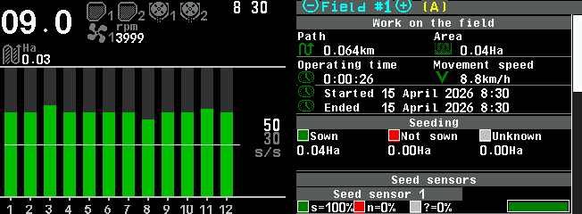
Menus
« MENU » ouvre le menu de l'écran affiché — sur l'écran d'accueil, le menu principal.

- Élément sélectionné. Texte noir sur une bande bleue. « UP » et « DOWN » déplacent la bande ; en fin de liste, elle saute à l'autre extrémité.
- Valeur entre − et +. Affichée sur l'élément sélectionné : modifiez-la avec « PLUS » et « MINUS », directement dans la liste.
- Valeur d'un élément non sélectionné. Les signes − et + apparaissent quand vous le sélectionnez.
- Pointe de flèche. L'élément ouvre un autre menu. Appuyez sur « MENU ».
- Barre de défilement. La liste est plus longue que l'écran.
| Ce que vous voyez à droite | Ce que cela fait |
|---|---|
| Une pointe de flèche | Ouvre un autre menu. Appuyez sur « MENU ». |
| Une valeur entre - et + | « PLUS » et « MINUS » la modifient pas à pas. |
| Une valeur entre -[ et ]+ | « PLUS » et « MINUS » la modifient pas à pas ; « MENU » ouvre le pavé numérique pour la saisir. |
| Rien | L'élément exécute une action. Appuyez sur « MENU ». |
Vous pouvez aussi toucher un élément pour le sélectionner, puis le toucher de nouveau pour l'ouvrir. « BACK » quitte un menu et remonte d'un niveau.
Le menu contextuel d'un appareil
Chaque capteur de l'écran d'accueil, de l'écran de régulation de dose et de l'écran Motors a son propre menu. Maintenez « MENU » jusqu'à ce qu'un appareil s'affiche sur fond blanc — c'est le mode de réglage des capteurs —, puis sélectionnez l'appareil avec « UP » et « DOWN » et appuyez sur « MENU ». Comment travailler dans ce mode : Mettre un capteur sous ou hors surveillance. Les éléments de chaque menu contextuel figurent dans Réglages des capteurs.
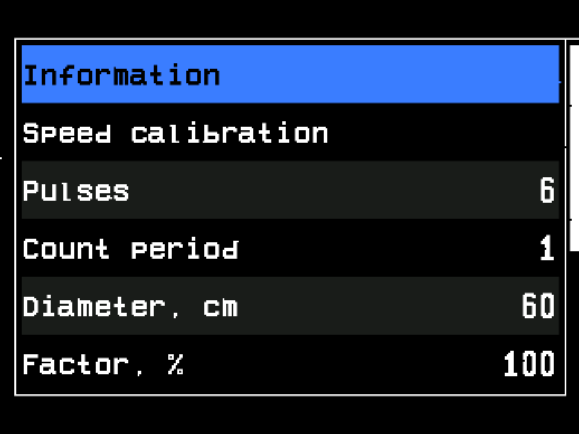
Fenêtres qui interrogent, fenêtres qui informent
Une fenêtre de question porte une bande jaune avec « Confirmation ». Les lignes sous la question nomment les deux boutons qui y répondent — ils changent d'une fenêtre à l'autre, lisez-les. Les « Yes » (oui) vert et « No » (non) rouge de l'écran peuvent aussi être touchés. « BACK », ou un toucher en dehors de la fenêtre, annule toujours.

Une fenêtre d'information porte une bande bleue avec « Information ». Elle se ferme d'elle-même, par un toucher ou par un bouton.
Fenêtres d'alarme

- Bande rouge. « FAILURE! » (défaillance) — la fenêtre signale un défaut.
- Indication. « HOME » ferme la fenêtre.
- Le défaut. Ici, la liaison avec un capteur est perdue.
- Type du capteur. Ici, la turbine.
- Numéros des capteurs. Lorsque plusieurs capteurs du même type ont le même défaut, tous leurs numéros sont listés.
- « Close ». Touchez-le pour fermer la fenêtre.
Tant que la fenêtre est affichée, le panneau émet le signal d'alarme et allume son voyant d'alarme. « HOME » ou un toucher sur « Close » ferme la fenêtre ; « HOME » maintenu la ferme et revient à l'écran d'accueil. Les autres boutons ne font rien ici. Toutes les alarmes et la conduite à tenir : Comment fonctionnent les alarmes.
Niveaux d'accès
| Niveau | Ce qu'il ouvre |
|---|---|
| « Operator » (opérateur) | Ce qu'il faut pour le travail. Actif à chaque mise sous tension. Seul niveau auquel les fenêtres d'alarme s'affichent. |
| « Agronomist » (agronome) | Éléments et paramètres masqués de la machine et des capteurs. Demande un code figurant sur la fiche technique de votre panneau. |
| « Service » (maintenance) | Le profil et le reste du travail de mise en service — réservé au service technique. La configuration des capteurs de graines et de pression ne demande que le niveau « Agronomist ». |
Le niveau se choisit dans « Settings » → « User » (utilisateur). Comment : Activer le niveau Agronomist. Dans ce manuel, un paramètre qui demande un niveau plus élevé l'indique.
Le pavé numérique
Comment saisir un nombre sur le Hectare Mini — ce que montre la fenêtre, quels boutons fonctionnent, et les pièges du champ vide et des valeurs hors plage.
Certaines valeurs peuvent être saisies en entier au lieu d'être modifiées pas à pas avec « PLUS » et « MINUS ». Dans un menu, une telle valeur est placée entre -[ et ]+ ; appuyez sur « MENU » et le pavé numérique s'ouvre. Le pavé s'ouvre aussi de lui-même là où les pas n'ont pas de sens — pour le poids à la fin d'un étalonnage de moteur, pour le nombre de trous du disque d'un moteur de doseur et pour un code d'accès.

Ce que montre le pavé

- Nom du paramètre, en bleu clair. Dans certaines fenêtres, toute la consigne, sur plusieurs lignes.
- Le nombre. Il s'ouvre avec la valeur actuelle (vide si la valeur est 0) et s'allonge vers la gauche à mesure que vous tapez.
- Retour arrière. Un toucher efface le dernier caractère ; un toucher maintenu efface tout le nombre.
- Chiffres. Touchez-les — les chiffres se saisissent uniquement sur l'écran.
- Touche .−. Place la virgule décimale. Un toucher maintenu commute le signe moins, là où la valeur peut être négative.
- « OK », en vert. Valide le nombre et ferme le pavé.
Une touche touchée ne s'allume pas. Vous voyez que le toucher est arrivé grâce au nombre, et vous l'entendez si le son des boutons est activé.
Saisir un nombre
Sur un élément de menu dont la valeur est placée entre -[ et ]+, appuyez sur « MENU ». Le pavé s'ouvre.
Touchez et maintenez le retour arrière. L'ancienne valeur est effacée.
Touchez les chiffres. Chacun s'ajoute au nombre à droite.
Si la valeur a des dixièmes, touchez .− et saisissez les décimales.
Vérifiez le nombre, puis touchez « OK » ou appuyez sur « MENU ». Le pavé se ferme et le menu affiche la nouvelle valeur.
« BACK » quitte le pavé sans rien modifier. Les autres boutons et un toucher en dehors des touches ne font rien.
Règles du pavé
- La virgule ne fonctionne que là où la valeur a des dixièmes, par exemple « Minimum, rpm » (minimum, tr/min) et « Maximum, rpm » (maximum, tr/min) d'un moteur de doseur. Pour les nombres entiers, la touche .− ne fait rien.
- Une seule virgule par nombre. Un second toucher de .− ne fait rien tant que vous n'avez pas effacé la première virgule.
- Le nombre de décimales est limité à ce que la valeur admet. Si vous en saisissez moins, le panneau ajoute des zéros : avec une décimale, 12 devient 12.0.
- La longueur est limitée par la largeur du champ. Lorsqu'il est plein, les chiffres suivants ne font rien.
Démarrage rapide — avant et pendant le premier passage
Ce qu'il faut vérifier avant d'entrer dans la parcelle avec le Hectare Mini, comment le panneau commence seul la surveillance, et ce qu'il faut regarder pendant le premier passage.
Ce qui suit suppose que le système a été mis en service — voir Mise en service. Avant la saison, le capteur de vitesse doit avoir été étalonné, ainsi que les doseurs si l'on veut surveiller la vitesse de leur arbre ou le poids de semences (Capteur de vitesse, Réglages des capteurs).
Avant la parcelle
Allumez le panneau et attendez l'écran d'accueil.
Appuyez deux fois sur « HOME » pour ouvrir l'écran Statistics. Vérifiez que la bonne parcelle active est sélectionnée ; pour une nouvelle parcelle, sélectionnez-en une vide ou effacez-la — Commencer une nouvelle parcelle.
De retour sur l'écran d'accueil, réglez le seuil d'alarme du diagramme de semences avec « PLUS » / « MINUS » — ou, dans les modes « Hybrid » (hybride) et « Precise » (précis), la dose de consigne. « DOWN » passe au diagramme d'engrais. Voir Modifier la dose de consigne.
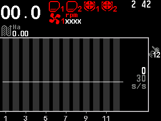
Le diagramme de semences avec le seuil d'alarme en s/s et sa ligne de contrôle. Si des produits sont appliqués au poids, réglez de la même façon leurs doses en kg/ha.
Vérifiez les réglages qui changent selon le travail — en mode de réglage des capteurs (Mettre un capteur sous ou hors surveillance), capteur par capteur : « Period, s » (période, s) de chaque capteur d'arbre de doseur ; « Minimum, rpm » (minimum, tr/min) et « Maximum, rpm » (maximum, tr/min) de chaque turbine ; « Minimum, Pa » (minimum, Pa) et « Maximum, Pa » (maximum, Pa) de chaque capteur de pression ; « Fraction » (fraction, c'est-à-dire la taille de la graine) et « Correction » (correction) des capteurs de graines et des capteurs d'engrais. Tous les capteurs de graines partagent un même jeu de réglages, tous les capteurs d'engrais un autre ; chaque autre capteur a le sien.
Assurez-vous que le niveau d'accès est « Operator » (opérateur). À un niveau supérieur, aucune fenêtre d'alarme ne s'affiche, et le panneau vous avertit par une alarme si vous commencez à semer. Éteindre puis rallumer ramène au niveau Operator.
Semis
Démarrez simplement. Il n'y a rien à activer : le panneau commence seul la surveillance des alarmes, avec un bip court, dès que ces conditions sont réunies depuis la durée « Alarm delay » (temporisation d'alarme ; 3 s par défaut) :
- l'application n'est pas verrouillée à la main (Verrouiller l'application à la main) ;
- avec un capteur de position de l'outil sous surveillance : le semoir est en position de travail ;
- avec des moteurs de doseur ou une pompe liquide : le semoir avance, et le capteur de vitesse est sous surveillance et indique une vitesse ;
- sinon : au moins « Percent of sowing,% » (pourcentage de rangs en semis ; 20 % par défaut) des rangs sous surveillance sèment — et, si « Seeding criteria » (critère de semis) est réglé sur le capteur de vitesse, le semoir avance.
Lorsqu'une condition cesse d'être remplie, la surveillance s'arrête aussitôt avec trois bips courts. Il n'existe pas d'alarme distincte pour un semoir qui avance sans qu'aucune semence n'arrive : dans ce cas, la surveillance ne démarre pas et le bip ne retentit pas.

Pendant le premier passage, vérifiez
- la vitesse par rapport au compteur du tracteur ou à un navigateur GPS ;
- la vitesse de la turbine et la pression — dans leurs limites, pas en rouge ;
- les colonnes de semences au-dessus de leur ligne, et la dose de semences par rapport à la consigne dans les modes « Hybrid » et « Precise » ;
- les colonnes d'engrais au-dessus de leur ligne ;
- la dose de produit en kg/ha par rapport à la consigne ;
- aucun rouge sur un autre indicateur — Indicateurs.
Si le capteur de vitesse tombe en panne, la vitesse peut être imitée dans ses réglages jusqu'à la réparation (Capteur de vitesse). Lorsqu'une alarme apparaît, arrêtez-vous et éliminez le défaut — Comment fonctionnent les alarmes. La qualité de la dernière portion se lit sur le tableau de semis ; le résultat de toute la parcelle sur l'écran Statistics.
Mise en service d'un nouveau système
L'ordre dans lequel un nouveau système Hectare Mini est réglé sur une machine — du raccordement des appareils aux étalonnages — avec un lien vers le détail de chaque étape.
Voici la séquence à suivre par le concessionnaire ou le technicien de service lors de l'installation du système. Chaque étape renvoie à la rubrique qui la détaille. La plupart des paramètres demandent le niveau d'accès Agronomist (agronome) — Activer le niveau Agronomist.
Raccordez tous les appareils au panneau et vérifiez leur alimentation d'après le schéma de câblage de la fiche technique du système.
Vérifiez le profil. Il doit correspondre à l'équipement de la machine — Le profil. S'il ne correspond pas, réglez-le d'abord.
Vérifiez les liaisons. Chaque capteur doit répondre et être sous surveillance — voir Indicateurs pour la croix rouge et le signe de capteur hors surveillance.
Réglez les paramètres généraux dans « Settings » (réglages) → « Seeding machine parameters » (paramètres du semoir) (Menu Settings) : la largeur de travail, « Width, cm » (largeur, cm) ; « Mode of seeding » (mode de semis) — « Flow » (débit) pour un semoir à céréales ; « Mode of fertilizers » (mode des engrais) — « Flow ».
Réglez les capteurs (Réglages des capteurs) :
- capteur de vitesse : « Diameter, cm » (diamètre, cm) et « Pulses » (impulsions) ; « Imitation, km/h » (imitation, km/h) sur « No » (non) ; puis l'étalonnage de la vitesse ;
- capteurs d'arbre de doseur : « Period, s » (période, s) ; au besoin « Rotation speed control » (contrôle de la vitesse de rotation) ou « Weight control » (contrôle du poids), chacun suivi de son étalonnage ;
- turbines : « Pulses », « Minimum, rpm » (minimum, tr/min), « Maximum, rpm » (maximum, tr/min) ;
- capteurs de pression : « Filter » (filtre), « Minimum, Pa » (minimum, Pa), « Maximum, Pa » (maximum, Pa) ;
- capteur de position de l'outil : « Transporting position signal » (signal de position de transport) ;
- capteurs du moteur : « Activation signal » (signal d'activation) ;
- capteurs de graines, et séparément capteurs d'engrais : au moins « Fraction » (fraction, c'est-à-dire la taille de la graine) pour la culture.
Réglez le jalonnage, si la machine fait un jalonnage — après le profil, jamais avant : Régler le rythme de jalonnage.
Sur les machines à moteurs de doseur : affectez les produits et étalonnez chaque moteur — Affecter un produit à un moteur, Étalonner un moteur au poids.
Chaque capteur se règle séparément — sauf les capteurs de graines, qui partagent un même jeu de réglages, et les capteurs d'engrais, qui en partagent un autre.
Lorsque tout est réglé, revenez au niveau « Operator » (opérateur) (éteindre puis rallumer suffit) et passez au Démarrage rapide.
À propos de ce manuel et de ses images
Comment lire ce manuel — mots de signalisation, niveaux d'accès, appuis sur les boutons — et ce qui, dans les images, appartient au banc d'essai et non à votre machine.
Comment lire ce manuel
- REMARQUE — information complémentaire, par exemple une possibilité que vous ne connaissez peut-être pas.
- IMPORTANT, ATTENTION, AVERTISSEMENT — information dont l'oubli coûte du travail, une récolte ou une pièce.
- Un paramètre visible seulement au-dessus du niveau « Operator » (opérateur) le précise — voir Niveaux d'accès.
- Appuyer signifie un toucher bref d'un bouton ; maintenir signifie un toucher prolongé jusqu'à ce que le panneau réagisse, environ une demi-seconde.
- Dans cette version du micrologiciel, les menus du moniteur sont en anglais. Ce manuel cite donc leurs libellés tels que l'écran les affiche, en anglais, entre guillemets français, comme « Settings » (réglages), et en donne le sens entre parenthèses.
Les images
Les écrans sont de vraies captures d'un panneau Hectare Mini avec le micrologiciel 2.2.8, le plus souvent prises sur un banc d'essai et non sur une machine au champ. Certaines proviennent d'un micrologiciel antérieur ; lorsque la disposition diffère, le texte décrit la version 2.2.8. Quelques éléments qu'on y voit appartiennent au banc :
| Ce que vous voyez sur une image | Pourquoi c'est là | Ce qu'affiche votre panneau à la place |
|---|---|---|
| Des heures:minutes en bleu dans l'emplacement de l'horloge, ou TRIAL | Le panneau du banc fonctionne avec une licence d'essai. | L'heure — voir Horloge. |
| IMITAT en jaune dans l'emplacement de l'horloge | Le banc fonctionne en mode d'imitation. | L'heure. |
| Une vitesse en jaune, ou IMITATION | La vitesse est imitée — sur un banc, aucune roue ne tourne. | La vitesse mesurée, en blanc. |
| Des trémies rouges, des arbres de doseur rouges, une turbine rouge avec XXXX | Le banc n'a ni produit, ni arbres en rotation, ni turbine raccordée. | Des indicateurs gris tant que tout est en ordre. |
| Des zéros sur l'écran Statistics et le tableau de semis | Le banc était à l'arrêt. | Vos chiffres. |
Là où une image anglaise manque encore, la page affiche Picture to follow ; le texte dit tout ce que l'image montrerait. Les pages allemandes affichent à sa place l'image allemande.
L'écran d'accueil
Ce qu'est chaque partie de l'écran d'accueil du Hectare Mini — vitesse, indicateurs, surface, population, diagrammes et champs de dose — et ce que vous pouvez y faire.
L'écran d'accueil est l'écran de travail principal. Il montre l'état de chaque appareil de la machine et, en dessous, un diagramme pour les semences et un pour l'engrais. Ce qu'il affiche découle du profil : chaque appareil qui y est déclaré a son indicateur. Lorsque la place manque, le panneau réduit la vitesse ou les diagrammes, et sur un écran chargé il supprime l'indicateur de surface ou de population.
Un semoir monograine avec semences et engrais

- Vitesse d'avancement, en km/h. Les messages sur la vitesse remplacent le chiffre. Vitesse
- Trémies, numérotées. Rouge — vide. Trémie
- Arbres de doseur. Gris — en ordre ; l'icône tourne tant que l'arbre tourne. Arbre de doseur
- Horloge. L'heure ; elle porte aussi des messages. Horloge
- Traceurs. Jaune — les deux bras de traceur sont relevés. Traceurs
- Turbine et sa vitesse en tr/min. Turbine
- Surface traitée sur la parcelle active, en ha. Surface
- Population — la densité de semis en milliers de graines par hectare, en mode « Precise » (précis). Population
- Diagramme de semences. Une colonne par capteur de graines. Le diagramme des sections
- Échelle des manques et des doubles, en pour cent (mode « Precise »).
- Champ de dose de semences. Dose mesurée en haut, consigne en dessous, ici en graines par mètre. Modifier la dose de consigne
- Numéros des sections.
- Diagramme d'engrais, ici en mode « Flow » (débit), avec sa ligne de contrôle.
- Champ de dose d'engrais. Débit mesuré en haut, seuil d'alarme en dessous, en unités d'engrais par seconde.
Un semoir à céréales sur le banc

- Vitesse d'avancement.
- Trémies. Contour rouge — vide.
- Arbres de doseur. Rouge — alarme : l'arbre ne tourne pas.
- Horloge.
- Turbine. Rouge avec XXXX — pas de liaison avec le capteur de turbine.
- Surface.
- Réception GPS. L'icône de satellite et le nombre de satellites utilisés. Réception GPS
- Colonne de semences. Gris foncé — pas de débit, le semoir est à l'arrêt.
- Ligne de contrôle. Le seuil d'alarme tracé en travers du diagramme.
- Champ de dose. Débit mesuré en haut, seuil d'alarme en dessous, en graines par seconde.
- Numéros des sections.
Tous les indicateurs et leurs états : Indicateurs. Le diagramme — colonnes, lignes, couleurs : Le diagramme des sections.
Deux modes
L'écran d'accueil fonctionne en deux modes :
- Mode de surveillance — après la mise sous tension. Vous suivez le travail et modifiez les doses.
- Mode de réglage des capteurs — maintenez « MENU ». Un appareil s'affiche sur fond blanc ; « UP » et « DOWN » passent à l'appareil suivant, « PLUS » et « MINUS » le mettent sous ou hors surveillance, « MENU » ouvre son menu contextuel. « BACK » quitte le mode. Voir Mettre un capteur sous ou hors surveillance.

Ce que vous pouvez faire depuis l'écran d'accueil
| Pour faire ceci | Faites ceci |
|---|---|
| Ouvrir le menu principal | « MENU » |
| Modifier une dose de consigne ou un seuil d'alarme | « PLUS » / « MINUS » ; « UP » / « DOWN » choisissent le champ — Modifier la dose de consigne |
| Laisser le panneau régler le seuil d'alarme | Maintenez « BACK » pendant le semis — Régler le seuil d'alarme |
| Verrouiller ou déverrouiller l'application du produit | Maintenez « HOME » — Verrouiller l'application à la main |
| Ouvrir le menu du passage de jalonnage | « BACK » — Passage de jalonnage suivant |
| Ouvrir les réglages d'un appareil | Maintenez « MENU », sélectionnez-le, « MENU » |
| Passer à l'écran de travail suivant | « HOME » — Écrans, menus et fenêtres |
Indicateurs de l'écran d'accueil et leurs états
Chaque indicateur de l'écran d'accueil du Hectare Mini dans chacun de ses états — vitesse, trémie, arbre de doseur, turbine, pression, capteurs du moteur, position de l'outil, traceurs, jalonnage, horloge, surface, population et doses de produit.
Lisez les indicateurs par la couleur. Avec le micrologiciel 2.2.8, un appareil en ordre est dessiné en gris ; le rouge, le plus souvent clignotant, est une alarme ; le jaune est un état qu'il faut connaître mais pas un défaut. Trois états sont les mêmes pour tous les capteurs :
| Ce que vous voyez | Signification | Que faire |
|---|---|---|
| Pas de liaison avec le capteur. | Contrôlez son câble et ses connecteurs. | |
| Un point d'interrogation rouge, clignotant, ou ???? à la place de la valeur | Un appareil d'un autre type répond à cet emplacement. | Faites vérifier la configuration par le service technique. |
| Un signe gris de capteur hors surveillance, clignotant, ou !!!! à la place de la valeur | Le capteur est mis hors surveillance. Il n'est pas surveillé. | Remettez-le sous surveillance une fois le défaut réparé. |
Vitesse
| Ce que vous voyez | Signification |
|---|---|
| La vitesse d'avancement en km/h. | |
| Plus vite que permis. Le chiffre rouge alterne avec « SLOWER » (plus lentement). | |
| Plus lentement que permis. Le chiffre rouge alterne avec « FASTER » (plus vite). | |
| Chiffre rouge en alternance avec « Sensor » (capteur) 1 ou 2, ou avec « Settings » (réglages) | L'un des deux capteurs de roue est en panne, ou les limites de vitesse sont mal réglées. |
| Pas de liaison avec le capteur de vitesse. | |
| L'imitation de vitesse est activée : le chiffre est jaune et alterne avec « IMITATION » (imitation). Hors limites, avec « INCREASE IMITATION » (augmenter l'imitation) ou « DECREASE IMITATION » (diminuer l'imitation). |
La vitesse n'est surveillée par rapport à ses limites que si ce contrôle est activé dans les réglages du capteur de vitesse. Lorsque la vitesse vient du GPS : Réception GPS.
Trémie
| Ce que vous voyez | Signification |
|---|---|
| Gris | Du produit au-dessus du capteur. |
| La trémie est vide. |
Arbre de doseur
| Ce que vous voyez | Signification |
|---|---|
| Gris ; tourne tant que l'arbre tourne | En ordre. |
| L'arbre ne tourne pas, ou pas à la vitesse requise. |
Turbine
| Ce que vous voyez | Signification |
|---|---|
| Gris, avec la vitesse en tr/min | En ordre. |
| Rouge, clignotant, avec la vitesse | La vitesse de la turbine est hors de ses limites. |
Pression
| Ce que vous voyez | Signification |
|---|---|
| Gris, avec la pression en kPa | En ordre. |
| La pression à la sortie de la turbine est hors de ses limites. |
Capteurs du moteur
Les capteurs d'un moteur séparé d'entraînement de la turbine. La pression d'huile et la charge de la batterie ne sont surveillées que contact mis.
| Ce que vous voyez | Signification |
|---|---|
| Pression d'huile basse. | |
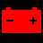 rouge |
La batterie ne se charge pas. |
| Peu de carburant dans le réservoir. | |
| Le filtre à air est colmaté. | |
| Clé grise / |
Contact mis / contact coupé. |
En ordre, chacune de ces icônes est grise.
Position de l'outil
| Ce que vous voyez | Signification |
|---|---|
| Gris | Le semoir est en position de travail. |
| Le semoir est en position de transport. |
Traceurs
Les bras gris montrent quel traceur est abaissé et lequel est relevé. Avec deux capteurs de traceur, les deux bras jaunes signifient que les deux traceurs sont relevés.
Passage de jalonnage
Des traces de roues avec le passage en cours en haut et le nombre de passages en dessous — voir Passage de jalonnage suivant.
Horloge
| Ce que vous voyez | Signification |
|---|---|
| Heure en blanc | L'heure. |
| Heure en rouge, avec BAT en rouge un instant toutes les quatre secondes | La pile de l'horloge doit être remplacée. |
| XX:XX en rouge, clignotant | L'horloge est défectueuse. |
| IMITAT en jaune | Le panneau fonctionne en mode d'imitation — voir À propos des images. |
| Heures:minutes en bleu et TRIAL | Une période d'essai est active : le temps restant. Il apparaît toutes les 30 secondes et recouvre un instant les icônes de trémie et d'arbre. |
Surface
Hectares traités sur la parcelle active — affichés seulement avec un capteur de vitesse, et seulement là où l'écran a de la place.
Population
En mode « Precise » (précis) : milliers de graines par hectare, en moyenne sur les capteurs de graines sous surveillance qui répondent. Si les semences et l'engrais sont tous deux en mode « Precise », deux indicateurs s'affichent, marqués A (semences) et B (engrais) ; la surface n'est alors généralement pas affichée.
Dose de produit
Un indicateur par produit appliqué au poids, avec le numéro du produit, en kg/ha. Rouge et clignotant : la dose s'écarte de plus de « Product rate error,% » (erreur de dose du produit, %). Tant qu'elle reste dans la tolérance, le panneau affiche la consigne.
La colonne de droite
| Ce que vous voyez | Signification |
|---|---|
| Symbole de moteur, jaune, clignotant | L'application du produit est verrouillée à la main — voir Verrouiller l'application à la main. |
| Symbole d'actionneur, rouge, clignotant | Un moteur de doseur ou un actionneur de jalonnage est en alarme — voir l'écran Motors. |
| Symbole d'actionneur en alternance avec le signe de capteur hors surveillance | Un moteur ou un actionneur est mis hors surveillance. |
| Symbole de produit, rouge, clignotant | Les doses réglées ne peuvent être appliquées à aucune vitesse — voir Étalonner un moteur au poids. |
Le diagramme des sections — colonnes, lignes et couleurs
Comment lire les diagrammes de semences et d'engrais du Hectare Mini dans les modes « Flow », « Hybrid » et « Precise », et ce que signifie « NOT UNDER CONTROL ».
Chaque colonne d'un diagramme est un rang de semences ou d'engrais — un capteur. Sa hauteur est le débit qui traverse ce rang à l'instant présent. À côté des colonnes, le champ de dose affiche la dose mesurée en haut et la valeur réglée en dessous ; pendant que vous modifiez la valeur réglée, il devient jaune quelques secondes. Le reste du tracé dépend du mode choisi dans « Mode of seeding » (mode de semis) et « Mode of fertilizers » (mode des engrais) : « Flow » (débit), « Hybrid » (hybride) ou « Precise » (précis). Le diagramme d'engrais se trouve toujours au-dessus du diagramme de semences et fonctionne le plus souvent en mode « Flow ».
Mode « Flow »

- Seuil d'alarme — le chiffre du bas du champ de dose, en graines par seconde (s/s). Le débit en dessous duquel un rang est considéré comme défaillant. « PLUS » et « MINUS » le modifient de 1.
- Ligne de contrôle — la ligne blanche en travers du diagramme : le seuil d'alarme tracé.
- Débit mesuré — le chiffre du haut : la moyenne des rangs à l'instant présent.
- Colonne verte — le débit est au-dessus du seuil d'alarme.
- Colonne jaune — le débit est sous le seuil d'alarme : alarme.
- Pas de colonne — aucun débit. Tant que le semoir sème et que les alarmes sont surveillées, le fond de cette colonne clignote en rouge foncé sur toute sa hauteur.
Mode « Hybrid »
Comme « Flow », avec trois différences : la valeur réglée est une dose de consigne en graines par mètre (s/m), modifiée de 1 ; des lignes d'écart admis peuvent être tracées au-dessus et en dessous ; et les manques et les doubles ne sont pas comptés.
Mode « Precise »

- Dose de consigne — le chiffre du bas du champ de dose, en graines par mètre (s/m), modifiée de 0,1. Pendant que vous la modifiez, le panneau l'affiche aussi sous forme de population en ks/Ha et d'écartement entre les graines en centimètres.
- Dose mesurée — le chiffre du haut, en moyenne sur les rangs où il y a du débit à l'instant présent.
- Ligne de dose et lignes d'écart supérieure et inférieure. Celles qui sont tracées dépendent de « Grid » (grille) : la ligne de dose avec « No » (non) ou « Full » (complète), les lignes d'écart avec « Partial » (partielle) ou « Full » (Réglages du diagramme de semis). L'écart admis est « Rate error,% » (erreur de dose, %) des capteurs de graines.
- Colonne verte — dans l'écart ; bleue — au-dessus ; jaune — en dessous.
- Barre jaune hachurée à gauche d'une colonne — les manques de ce rang ; barre bleue hachurée à sa droite — les doubles. Leur hauteur se mesure par rapport à « Scale S&D,% » (échelle manques et doubles, %), affiché en haut du champ de dose tant que « Skips & Doubles » (manques et doubles) est sur « Yes » (oui). Sur les machines à nombreux rangs, les colonnes sont trop étroites et les barres ne sont pas tracées.
Les manques, les doubles et la qualité sont comptés sur l'intervalle de recalcul — le tronçon de trajet réglé par « Recalculation,m » (recalcul, m) des capteurs de graines.
Repères sur une colonne — tous les modes
| Repère | Signification |
|---|---|
| Cadre blanc avec ! | Le capteur est mis hors surveillance. |
| Croix rouge | Pas de liaison avec le capteur. |
| Fond gris, numéro blanc | Le capteur sélectionné en mode de réglage des capteurs. |
| Hachures gris clair | Le rang est coupé pour un jalonnage — voir Passage de jalonnage suivant. |
« NOT UNDER CONTROL »
Le panneau ne commence la surveillance des alarmes de semis que lorsque le semoir sème réellement : lorsqu'au moins la part de rangs réglée par « Percent of sowing,% » (pourcentage de rangs en semis ; 20 % par défaut) sème dans la valeur réglée — et, si « Seeding criteria » (critère de semis) est réglé dans le capteur de vitesse, tant que le semoir avance. Les alarmes de semences et d'engrais démarrent et s'arrêtent ensemble. Un bip court signale que la surveillance a démarré ; trois bips courts, qu'elle s'est arrêtée.
Si le semoir sème mais que le débit reste sous la valeur réglée, le diagramme affiche « NOT UNDER CONTROL » (hors surveillance). Soit le débit a chuté pendant le travail — un vrai défaut —, soit le seuil d'alarme ou la dose de consigne est réglé plus haut que ce que la machine délivre.
Réception GPS et écran d'information GPS
Comment le Hectare Mini prend la vitesse d'avancement sur son récepteur GPS intégré, ce que signifie la couleur de l'icône de satellite et comment lire l'écran d'information GPS.
Le panneau est équipé d'un récepteur GPS intégré. Il fournit la vitesse d'avancement lorsque le semoir n'a ni capteur de roue ni radar, ou en complément d'un tel capteur. Tant que le récepteur répond et a une position valide, la vitesse vient du GPS. S'il se tait ou perd le signal, le capteur réglé sous « Speed » (vitesse) dans le profil prend le relais de lui-même — vous n'avez rien à commuter.
Le récepteur est activé par l'élément de profil GPS : UBX pour le récepteur intégré (réglage normal) ou NMEA ; « No » (non) le désactive et masque l'icône de satellite.
L'icône de satellite
L'icône se trouve au bord droit de l'écran d'accueil, avec le nombre de satellites utilisés dans son coin inférieur droit.
| Couleur | Signification |
|---|---|
| Rouge | Le récepteur ne répond pas, ou il répond sans position valide — normal à l'intérieur d'un bâtiment et juste après la mise sous tension. Le nombre n'est pas affiché tant que le récepteur est muet. |
| Gris | Position valide, moins de 5 satellites. |
| Jaune | Position valide, de 5 à 7 satellites. |
| Gris | Position valide, 8 satellites ou plus. Les deux états gris ne se distinguent que par le nombre. |
L'écran d'information
Pour l'ouvrir, maintenez « MENU » sur l'écran d'accueil, sélectionnez l'icône de satellite avec « UP » / « DOWN » et appuyez sur « MENU ».

- « GPS signal: » (signal GPS) « Yes » (oui) si le récepteur répond, sinon « No ».
- Satellites — le nombre vus et le nombre utilisés pour la position.
- Speed — la vitesse telle que le semis l'utilise. Sous un petit seuil d'arrêt, elle affiche 0 km/h, afin qu'un semoir à l'arrêt ne compte pas de surface.
- raw — la vitesse non filtrée, et si la position est valide.
- UTC — date et heure du récepteur ; des zéros avant la première position valide.
- Compteurs de réception. En NMEA : octets reçus, phrases valides, erreurs de somme de contrôle et débit en bauds détecté ; en UBX : octets, trames et erreurs.
- ring drop — octets perdus dans le tampon de réception. Un chiffre qui augmente signifie que la liaison avec le récepteur est perturbée.
- BACK quitte l'écran.
L'écran ne fait qu'afficher ; rien n'y est modifiable, et aucun code d'accès n'est nécessaire.
L'écran du tableau de semis
Les relevés de chaque rang de semis en chiffres, une ligne par rang — quels tableaux votre machine possède, ce que signifie chaque colonne et chaque couleur, et comment remettre les relevés à zéro.
Le tableau de semis (« Seeding table ») répond à ce que le diagramme de l'écran d'accueil ne peut pas dire : quel rang exactement, et de combien. Ouvrez-le avec « HOME » depuis l'écran d'accueil ; le « HOME » suivant passe à l'écran Statistics, « BACK » ramène à l'écran d'accueil.
Les chiffres appartiennent à la session de travail : ils comptent depuis la mise sous tension et sont perdus à l'arrêt. Les statistiques de parcelle sont conservées à part — voir L'écran Statistics.
Ce que montre le tableau

- Numéro de rang — le rang de semis, dans l'ordre des rangs de la machine.
- sds/m — la dose mesurée à l'instant présent, en graines par mètre. ----- — le rang est surveillé mais ne sème pas.
- Q.% — qualité : la part des graines déposées une à une, comme prévu.
- Db% — doubles : deux graines là où une était prévue.
- Sk% — manques : un vide là où une graine était prévue.
- Indicateur de page — ce tableau et le nombre de tableaux, entre les signes de « MINUS » et « PLUS », les boutons qui changent de tableau. Absent s'il n'y a qu'un seul tableau.
- Population du rang, en milliers de graines par hectare.
- Moyennes sur tous les rangs surveillés. Avec deux groupes de capteurs, deux lignes de ce genre, A et B.
Les colonnes 3 à 7 se rapportent au dernier intervalle de recalcul terminé — le tronçon réglé par « Recalculation,m » (recalcul, m) (ou « Recalculation,sec » (recalcul, s) sans capteur de vitesse), affiché en bas à droite. Seule la colonne 2 est un relevé en direct. Après l'arrêt de la machine, les chiffres du dernier intervalle restent à l'écran pour être lus à loisir. Une colonne supplémentaire, %, donne l'écart de chaque rang par rapport à la consigne, avec son signe ; positif signifie plus de graines et un écartement plus serré.
Quels tableaux possède votre machine
| Tableau | Affiché lorsque |
|---|---|
| Rate per area (population, ks/Ha), Rate per distance (graines par mètre) | Semences en mode « Precise ». |
| Seed counters | Toujours. |
| Dry fertilizer | Il y a des capteurs d'engrais et leur mode n'est pas « Precise ». |
| Liquid fertilizer | Il y a des capteurs d'engrais liquide. |
Un semoir monograine avec les semences en mode « Precise » et des capteurs d'engrais solide a quatre tableaux. « PLUS » passe au suivant, « MINUS » au précédent ; l'indicateur de page en haut à droite montre lequel est affiché.


Si les semences et l'engrais sont tous deux en mode « Precise », les rangs d'engrais apparaissent dans les tableaux de semences comme groupe B, en caractères jaune clair.

Sur le tableau Seed counters, la barre s'étend entre l'écart admis « Rate error,% » (erreur de dose, %) de part et d'autre de la consigne — pas sur une échelle fixe. Dans les modes « Flow » (débit) et « Hybrid » (hybride), l'échelle est fixée de −50 % à +50 %. La colonne de gauche affiche alors des graines par seconde au lieu de graines par mètre.
Repères et couleurs
| Dans la colonne de dose | Signification |
|---|---|
| ----- | Surveillé, ne sème pas actuellement. |
| ! ---, toute la ligne en gris | Mis hors surveillance. |
| X ---, toute la ligne en rouge foncé | Pas de liaison avec ce capteur. |
| ? ---, toute la ligne en rouge foncé | Un capteur de mauvais type répond ici. |
Pendant le semis, une cellule devient jaune lorsqu'elle atteint plus de la moitié de l'écart admis et rouge lorsqu'elle le dépasse. Les limites sont « Rate error,% », « Doubles error,% » (erreur de doubles, %) et « Skips error,% » (erreur de manques, %) des capteurs de graines ; si le contrôle des doubles ou des manques est désactivé, « Scale S&D,% » (échelle manques et doubles, %) est utilisé. Le numéro de rang prend la couleur de sa pire cellule, de sorte que le rang qui se distingue se repère d'un coup d'œil.
Boutons
| Bouton | Ce qu'il fait |
|---|---|
| « PLUS » / « MINUS » | Tableau suivant / précédent. |
| « DOWN » / « UP » | Fait défiler d'une ligne. Un toucher est une ligne. |
| « MENU » | Demande « Zero readings? » (remettre les relevés à zéro ?) — Remettre les relevés à zéro. |
| « HOME » | Statistics. |
| « BACK » | Écran d'accueil. |
Le tableau lui-même ne réagit pas au toucher.
Tableaux d'engrais et rangs de jalonnage

Le tableau Dry fertilizer est construit comme le tableau Seed counters, avec fert/m en mode « Hybrid » ou fert/s en « Flow » ; le nombre de pièces n'est affiché qu'avec « Count seeds always » (toujours compter les graines) activé. Le tableau Liquid fertilizer montre par rang le débit et les litres appliqués, avec L/Ha ou L/min selon « Mode of liq.fert. » (mode de l'engrais liquide), et n'a pas de barre d'écart.
Un rang coupé pour un jalonnage n'affiche que son numéro et son débit ; les autres colonnes sont en tirets. Ici, le jaune et le rouge avertissent que plus de semences tombent dans le jalonnage que ne le permet « Toler.sowing to tramline,% » (tolérance de semis dans le jalonnage, %).
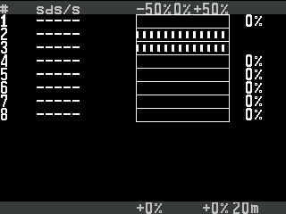
L'écran Statistics
Le rapport du travail sur chaque parcelle, bloc par bloc — et le menu qui choisit la parcelle active, montre le kilométrage cumulé et efface une parcelle.
L'écran Statistics (statistiques) est le rapport du travail : la distance parcourue, la surface couverte, ce qui a été semé et avec quelle régularité. Il est tenu séparément pour chaque parcelle et survit à l'arrêt. Ouvrez-le avec « HOME » depuis le tableau de semis (deux fois depuis l'écran d'accueil) ; « BACK » ramène à l'écran d'accueil, « HOME » passe à l'écran de travail suivant.
Le rapport est une longue liste. « UP » et « DOWN » la font défiler d'une ligne par toucher ; « PLUS » et « MINUS » affichent la parcelle suivante ou précédente. Sur l'écran lui-même, un balayage vers le haut ou le bas fait défiler, un balayage à deux doigts change de parcelle et un toucher à deux doigts ouvre le menu.
L'en-tête et le travail sur la parcelle

- Numéro de parcelle, entre les signes de « MINUS » et « PLUS ».
- (A) — c'est la parcelle active, celle dans laquelle le panneau écrit actuellement.
- Path — distance parcourue en semant, en km.
- Area — surface traitée en semant, en ha.
- Operating time — temps passé à semer.
- Movement speed — la vitesse moyenne pendant le semis.
- Started / Ended — quand le travail sur cette parcelle a commencé et s'est terminé.
- Seeding — la surface semée, non semée et inconnue.
- Seed sensors — un bloc par capteur suit.
- s, n, ? — la part de surface semée, non semée et inconnue pour ce capteur.
- Barre — les mêmes parts en couleur : vert semé, rouge non semé, gris inconnu.
- Barre de défilement — où vous en êtes dans le rapport.
Unknown (inconnue) est la surface parcourue pendant qu'un capteur n'avait pas de liaison ou était hors surveillance. En mode « Flow » (débit), not sown (non semée) est la surface où le capteur n'a vu aucun débit ; en mode « Precise » (précis), c'est la surface d'un manque multipliée par le nombre de manques.
Blocs que vous pouvez aussi voir
| Bloc | Ce qu'il contient |
|---|---|
| Produits au poids | Par produit : le poids appliqué, réel par rapport à la consigne en kg/ha et en pour cent, et la distance, la part et le nombre d'écarts au-delà de « Product rate error,% » (erreur de dose du produit, %). |
| « Work without alarms control » (travail sans surveillance des alarmes) | Trajet, surface et part, temps et vitesse parcourus en semant sans que les alarmes soient surveillées — valeur réglée trop haute, ou réglée haut volontairement. |
| « Speed control » (contrôle de la vitesse) | « Path, slow » et « Path, fast » : distance et part parcourues hors des limites de vitesse. Seulement avec le contrôle de vitesse activé. |
| « Fertilizing » (fertilisation) | Surface fertilisée, non fertilisée et inconnue. |
| Par capteur de graines, en vue complète | La distance, la part et le nombre de fois où le rang est passé sous le seuil d'alarme. |
En mode « Precise »
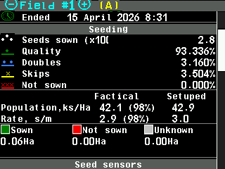
Le bloc « Seeding » ajoute « Seeds sown (x1000) » (graines semées, ×1000) ; « Quality » (qualité, les graines isolées), « Doubles » (doubles) et « Skips » (manques) pendant le semis, et « Not sown » (non semé) — les manques sur les tronçons où rien n'a été semé — chacun en part de toutes les graines et manques ; et « Population,ks/Ha » (population, ks/ha) et « Rate, s/m » (dose, s/m), chacun dans les colonnes « Factical » (réel) et « Setuped » (réglé), avec le rapport en pour cent. Chaque capteur de graines ajoute ses graines, sa qualité, ses doubles et ses manques, sa population et sa dose, et les distances parcourues sous et au-dessus de l'écart admis. « Seeds sown (x1000) » apparaît aussi dans les autres modes avec « Count seeds always » (toujours compter les graines) activé.
La dose réelle ne compte que le trajet où des graines ont circulé ; la population compte tout le trajet. Leurs écarts peuvent donc différer.
Le menu de l'écran
Appuyez sur « MENU ».

| Élément | Ce qu'il fait |
|---|---|
| « Select field » (sélectionner la parcelle) | Fait de la parcelle affichée la parcelle active — voir Commencer une nouvelle parcelle. Affiché seulement sur une parcelle qui n'est pas active. |
| « Statistics » | Vue « Short » (courte) ou « Full » (complète). Non affiché sans capteur de vitesse. |
| « Mileage » (kilométrage) | Trajet et surface sur toute la vie du système ; ils ne peuvent pas être remis à zéro. Sans capteur de vitesse, la durée de fonctionnement. |
| « Save to SD-card » (enregistrer sur la carte SD) | Affiché lorsqu'une carte mémoire est prête. Le micrologiciel 2.2.8 n'enregistre pas encore le rapport et répond par un message d'échec. |
| « Zero statistics » (remettre les statistiques à zéro) | Efface la parcelle affichée. Au niveau Operator, le panneau demande le code d'un niveau supérieur ; au-dessus, « Are you sure? » (êtes-vous sûr ?). |

L'écran de régulation de dose
L'écran des machines qui appliquent les produits à une dose — ce qu'il affiche, ses trois états, ses couleurs, et comment accéder à partir de là aux moteurs et à leur étalonnage.
Sur l'écran de régulation de dose, vous réglez les doses de consigne des semences, de l'engrais solide, de l'engrais liquide et des produits appliqués au poids, et vous suivez la dose réellement appliquée. Il montre aussi la surface, la vitesse, les trémies, les turbines et la position de l'outil. C'est le dernier écran de travail : « HOME » depuis l'écran Statistics (ou l'écran Motors) vous y amène, et un nouvel appui sur « HOME » ramène à l'écran d'accueil. « BACK » ne quitte pas cet écran.
C'est le seul écran dont le panneau se souvienne après l'arrêt : s'il était ouvert, il s'ouvre de nouveau à la mise sous tension suivante.
Ce que montre l'écran

- Surface travaillée sur la parcelle active, en ha. Seulement avec un capteur de vitesse.
- Vitesse d'avancement, en km/h, avec les mêmes messages que sur l'écran d'accueil — voir Vitesse. Seulement avec un capteur de vitesse.
- Symbole des réglages. Touchez-le et maintenez pour ouvrir le menu principal.
- Indicateur de produit — ici le produit 1, en kg/ha. Un pour chaque produit dont au moins un doseur sous surveillance l'applique au poids.
- Dose. La dose réellement appliquée ; tant que l'indicateur est sélectionné, la consigne.
- Pause du travail — la main. Gris foncé : au travail ; jaune clignotant : application verrouillée — voir Verrouiller l'application à la main.
- Trémie, une pour chaque trémie.
Selon la machine, d'autres indicateurs apparaissent : la dose de consigne d'engrais liquide en L/ha, la dose de semences et d'engrais solide en mode « Precise » (précis), un indicateur de turbine pour chaque turbine, et la position de l'outil en bas à droite. S'il n'y a pas de place pour toutes les turbines et trémies, le panneau supprime d'abord une turbine, puis des trémies ; l'écran d'accueil les montre toujours toutes.
Trois états
- Observation — rien n'est sélectionné. Les indicateurs montrent les doses réellement appliquées.
- Modification de dose — « PLUS » ou « MINUS ». Les indicateurs de dose peuvent être sélectionnés ; voir Modifier la dose de consigne.
- Réglage des capteurs — maintenez « MENU ». Le symbole des réglages, la vitesse, les turbines, les trémies et la position de l'outil peuvent être sélectionnés ; « PLUS » et « MINUS » mettent le capteur sélectionné sous ou hors surveillance, « MENU » ouvre son menu contextuel — ou, sur le symbole des réglages, le menu principal.
Dans les deux modes, « UP » et « DOWN » déplacent la sélection, « BACK » quitte le mode, et « HOME » maintenu verrouille ou déverrouille l'application.
Couleurs d'un indicateur de dose
| Ce que vous voyez | Signification |
|---|---|
| Symbole et unité verts, valeur blanche | En ordre ; la valeur est la dose appliquée. |
| Symbole, unité et valeur rouges clignotants | La dose appliquée s'écarte de la consigne plus que permis. |
| Fond bleu-vert foncé, symbole bleu clair, valeur jaune | Sélectionné ; la valeur est la consigne. |
| !!!!, XXXX ou ???? rouges clignotants (engrais liquide seulement) | Hors surveillance / pas de liaison / un appareil de mauvais type. |
En mode « Precise », les indicateurs de semences et d'engrais affichent la population en ks/Ha tant qu'ils ne sont pas sélectionnés, et la consigne en s/m lorsqu'ils le sont.
La dose d'un produit est moyennée sur chaque tronçon de 10 m parcouru. Elle compte comme déviante lorsqu'elle s'écarte de plus de « Product rate error,% » (erreur de dose du produit, %) : l'alarme se déclenche après deux tronçons de ce genre d'affilée et s'efface après deux bons tronçons. À l'arrêt, avec l'application verrouillée ou sans doseur sous surveillance, l'indicateur affiche 0,00 et l'alarme est effacée.
Vers les moteurs et leur étalonnage
Touchez et maintenez un indicateur de produit — ou sélectionnez-le à l'état de modification de dose et appuyez sur « MENU ». Une liste des moteurs de ce produit s'ouvre (« Motor » (moteur) ou « Fert.mot. » (moteur d'engrais) avec le numéro). Sélectionnez un moteur et appuyez sur « MENU » : « Calibration, product » (étalonnage, produit), « Weight, gr » (poids, g) et « Rotations » (rotations). Comment étalonner : Étalonner un moteur au poids.
La liste n'existe que pour les produits dont les moteurs fonctionnent en « Flow » (débit) ou « Hybrid » (hybride). Si la machine avance, le panneau refuse : la vitesse doit être nulle pour un étalonnage. Un toucher maintenu sur l'indicateur d'engrais liquide ouvre le menu contextuel de la pompe.
L'écran Motors
Une vignette par moteur de doseur et un symbole par actionneur de jalonnage — comment accéder à l'écran, lire les couleurs, mettre un moteur hors surveillance et ouvrir ses réglages.
L'écran Motors (moteurs) montre les moteurs électriques de doseur de la machine, une vignette chacun, et les actionneurs de jalonnage. C'est l'écran à consulter lorsqu'un rang cesse de semer et que vous voulez savoir si le moteur en est la cause. Il n'a pas de titre : il ne porte que des symboles numérotés de moteurs et d'actionneurs — ni doses, ni surface, ni vitesse.
Il existe si le profil contient au moins un moteur de semences, un moteur d'engrais ou un actionneur de jalonnage, et il n'est affiché qu'au-dessus du niveau Operator — activez d'abord le niveau Agronomist (Activer le niveau Agronomist). Il suit alors l'écran Statistics : trois appuis sur « HOME » depuis l'écran d'accueil. « HOME » passe à l'écran de régulation de dose ; « BACK » ramène à l'écran d'accueil.
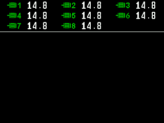
Les moteurs de semences se trouvent dans une barre en haut, numérotés dans l'ordre du profil. En dessous, une barre de moteurs d'engrais, si la machine en a — sur une machine de plus de vingt rangs sans moteurs d'engrais, la seconde barre contient la seconde moitié des moteurs de semences. Les actionneurs de jalonnage se trouvent sous les barres. À côté de chaque moteur : la vitesse de l'arbre entraîné en tr/min ; sur les machines à nombreux moteurs, elle est omise pour que toutes les vignettes tiennent.
Lire la vignette d'un moteur
La couleur du symbole est l'état. Le symbole et le signe alternent une fois par seconde tant que l'état n'est pas normal.
| Symbole | Valeur | État |
|---|---|---|
| Moteur, vert | la vitesse | Sous surveillance et entraîné. |
| Moteur et STOP, jaune | la vitesse | En ordre, mais l'application est coupée — en fourrière, ou verrouillée à la main. Ce n'est pas un défaut. |
| Moteur, rouge | la vitesse | Alarme. La fenêtre d'alarme en donne la raison. |
| Moteur et croix, rouge | XXX | Pas de liaison avec le contrôleur de moteur. Contrôlez son alimentation, son câble et ses connecteurs. |
| Moteur et ?, rouge | ??? | L'appareil qui répond n'est pas un contrôleur de moteur, ou le contrôleur est resté en mode de mise à jour. |
| Moteur barré | !!! | Mis hors surveillance : ni entraîné ni surveillé. |

Lire un actionneur de jalonnage
| Symbole | État |
|---|---|
| Rentré ou sorti, gris, fixe | Il a atteint cette position. |
| Rentré ou sorti, jaune, fixe | Il se déplace vers cette position. |
| Rentré et sorti en alternance, jaune | La position n'est pas certaine. |
| Croix rouge, clignotante | Pas de liaison. |
| Point d'interrogation rouge, clignotant | L'appareil qui répond n'est pas un actionneur de jalonnage. |
| Symbole d'actionneur, rouge, clignotant | L'actionneur signale une alarme. |
| Barré, gris, clignotant | Mis hors surveillance. |
La position atteinte est grise, pas verte : ici, seuls les moteurs sont verts.
Sélectionner un moteur
Maintenez « MENU » pour activer la sélection ; elle se place sur le premier moteur, sur fond blanc. « UP » et « DOWN » parcourent une barre puis passent à la barre suivante et aux actionneurs. Ensuite :
- « MENU » ouvre le menu contextuel du moteur ou de l'actionneur sélectionné — Menu contextuel d'un moteur.
- « MINUS » / « PLUS » le mettent hors ou sous surveillance — Mettre un capteur sous ou hors surveillance.
- « BACK » quitte la sélection ; un second « BACK » ramène à l'écran d'accueil.

L'écran de service des moteurs
L'élément de menu contextuel « Electric motors » (moteurs électriques) (niveau Service) ouvre un écran destiné au technicien de service : versions, type de moteur, vitesse de consigne et réelle, code d'erreur, tensions, température, courant et seize signes d'état dans la vue « Registers » (registres), et compteurs par parcelle dans la vue « Statistics » (statistiques). Vous n'en avez pas besoin pour semer.

- Mode — « HOME » commute entre les vues.
- Numéro du moteur — « MINUS » et « PLUS » changent de moteur.
- Nom de la vue.
- Numéro de parcelle — « UP » et « DOWN » le changent ; (A) marque la parcelle active.
- Compteurs — « Jammed » (bloqué), « Disconnects » (déconnexions) et « Other » (autres). Au-dessus de zéro, en rouge.
- In failure — distance parcourue avec le moteur en panne.
« BACK » quitte l'écran. Si le numéro n'appartient à aucun moteur du profil, « No data » (pas de données) apparaît.
Modifier la dose de consigne ou le seuil d'alarme
Augmenter ou diminuer le seuil d'alarme, la dose de consigne en graines par mètre ou la dose de produit en kg/ha — sur l'écran d'accueil ou sur l'écran de régulation de dose.
Chaque diagramme et chaque produit appliqué au poids a un champ de dose : la valeur mesurée en haut, la valeur réglée en dessous. Ce qu'est la valeur réglée dépend du mode — voir Le diagramme des sections :
| Mode | La valeur réglée | Un pas |
|---|---|---|
| « Flow » (débit) | Seuil d'alarme, graines par seconde | 1 s/s |
| « Hybrid » (hybride) | Dose de consigne, graines par mètre | 1 s/m |
| « Precise » (précis) | Dose de consigne, graines par mètre | 0,1 s/m (0,5 à 50,0) |
| Produit au poids | Dose de consigne, kg/ha | 0,1 kg/ha jusqu'à 50,0, au-delà 1 kg/ha (1,0 à 999,0) |
| Engrais liquide | Dose de consigne, L/ha | 0,1 L/ha jusqu'à 50,0, au-delà 1 L/ha |
Sur l'écran d'accueil
Appuyez une fois sur « PLUS » ou « MINUS ». Le champ de dose utilisé en dernier est sélectionné et clignote ; rien n'a encore changé.

Modification de la dose de consigne d'un produit en kg/ha sur l'écran d'accueil. Si la machine a plus d'un champ de dose — semences et engrais, produits au poids — appuyez sur « DOWN » ou « UP » pour passer au suivant ou au précédent.
Appuyez sur « PLUS » pour augmenter la valeur ou sur « MINUS » pour la diminuer, d'un pas par toucher. Maintenir le bouton ne le répète pas.
Appuyez sur « BACK » pour terminer, ou attendez simplement : cinq secondes après le dernier toucher, le champ cesse de clignoter. La nouvelle valeur est en vigueur.
En mode « Precise », le panneau affiche aussi, pendant que vous modifiez la consigne, la même dose sous forme de population en ks/Ha et d'écartement entre les graines en centimètres.
Sur l'écran de régulation de dose
Appuyez sur « PLUS » ou « MINUS ». La consigne sélectionnée en dernier est mise en évidence — fond bleu-vert foncé, valeur jaune ; après la mise sous tension, « Product 1 » (produit 1). Le premier appui ne change rien.

L'écran de régulation de dose avec le produit 2 sélectionné pour une modification. Passez à la consigne voulue avec « UP » et « DOWN ».
Réglez la valeur avec « PLUS » et « MINUS ».
Appuyez sur « BACK ». La mise en évidence disparaît ; les indicateurs affichent de nouveau les doses appliquées.
En descendant depuis plus de 50,0, la dose d'un produit ou d'un engrais liquide s'arrête exactement à 50,0 ; le toucher suivant la ramène en dessous, par pas de 0,1. La consigne de semences en mode « Precise » est un nombre unique pour tous les capteurs de graines : l'écran d'accueil et l'écran de régulation de dose modifient la même valeur, et il n'existe pas d'élément de menu pour elle.
La valeur est enregistrée d'elle-même environ une seconde et demie après la dernière modification ; attendez ce délai avant d'éteindre.
Régler le seuil d'alarme d'un semoir à céréales
Laisser le Hectare Mini régler le seuil d'alarme d'après le débit appliqué, par un seul appui long — ou le régler à la main — pour qu'un rang qui perd du débit soit signalé.
En mode « Flow » (débit), le panneau surveille chaque rang par rapport à un seuil d'alarme en graines par seconde : un rang dont le débit tombe en dessous est signalé. Réglé trop haut, le seuil fait passer les colonnes sous la ligne et le diagramme affiche « NOT UNDER CONTROL » (hors surveillance) ; réglé trop bas, un rang en partie bouché passe inaperçu. Le plus simple est de laisser le panneau le régler d'après le débit qu'il constate.
Laisser le panneau le régler
Commencez à semer comme d'habitude, à la vitesse de travail, et attendez que le panneau émette un bip court — il surveille alors le semis.
Sur l'écran d'accueil, maintenez « BACK ». Le panneau émet un bip court.
Regardez les champs de dose. En mode « Flow », chaque seuil d'alarme vaut maintenant la moitié du débit mesuré à cet instant ; en mode « Hybrid » (hybride), la dose de consigne est réglée sur la dose mesurée à cet instant. Le champ modifié est mis en évidence.
Cela fonctionne pour le diagramme de semences, le diagramme d'engrais et l'engrais liquide en mode « Flow », tous à la fois, mais seulement tant que le panneau surveille le semis. À l'arrêt, ou en mode « Precise » (précis), l'appui long ne fait rien.
Le régler à la main
Appuyez sur « PLUS » ou « MINUS » sur l'écran d'accueil : le premier appui sélectionne le champ de dose de semences, les suivants le modifient de 1 s/s. « DOWN » et « UP » passent au champ de dose d'engrais. Détails : Modifier la dose de consigne.
Verrouiller à la main l'application du produit
Arrêter les moteurs de doseur et la pompe liquide par un seul appui long, pour que rien ne tourne pendant que vous travaillez sur la machine — et comment le panneau montre le verrouillage.
Sur une machine à moteurs électriques de doseur, à moteurs d'engrais ou à pompe d'engrais liquide, vous pouvez verrouiller à la main l'application du produit. Tant qu'elle est verrouillée, aucun moteur de doseur ne tourne, la pompe est à l'arrêt, et le panneau n'attend aucune application : les alarmes pour une dose trop basse ne se produisent pas. Utilisez cette fonction chaque fois que vous travaillez sur les doseurs, ou pour traverser une parcelle sans semer.
Sur l'écran d'accueil ou sur l'écran de régulation de dose, maintenez « HOME » jusqu'à ce que le panneau émette un bip court.
Contrôlez le verrouillage. Sur l'écran d'accueil, un symbole de moteur jaune clignote dans la colonne de droite ; sur l'écran de régulation de dose, la main en bas à gauche devient jaune.

La main de pause du travail : gris foncé au travail, jaune lorsque verrouillé. Pour lever le verrouillage, maintenez de nouveau « HOME ». Un bip court ; le symbole cesse de clignoter et l'application reprend.
Sur toute autre machine, l'appui long ne fait rien et la main reste gris foncé.
Sur l'écran Motors, un moteur verrouillé affiche un STOP jaune — voir L'écran Motors.
Mettre un capteur sous ou hors surveillance
Couper et rétablir la surveillance d'un seul capteur, moteur ou actionneur avec le mode de réglage des capteurs — ce que demande le panneau, et quand il veut que les statistiques soient effacées.
Un capteur mis hors surveillance n'est plus surveillé : il ne déclenche plus d'alarme, et son indicateur affiche le signe clignotant de capteur hors surveillance. Ne le faites que pour continuer à travailler avec un capteur défectueux jusqu'à sa réparation — et remettez-le ensuite sous surveillance.
Sur l'écran d'accueil, maintenez « MENU » jusqu'à ce qu'un appareil s'affiche sur fond blanc. Le panneau est maintenant en mode de réglage des capteurs.
L'écran d'accueil en mode de réglage des capteurs, indicateur de vitesse sélectionné. Sélectionnez le capteur avec « UP » et « DOWN ». Dans un diagramme, la colonne sélectionnée prend un fond gris et un numéro blanc.
Appuyez sur « MINUS » pour le mettre hors surveillance, ou sur « PLUS » pour le remettre sous surveillance.
Le panneau demande si vous êtes sûr. Appuyez sur « MENU » pour « Yes » (oui), ou sur « BACK » pour « No » (non) ; le « Yes » vert et le « No » rouge de l'écran peuvent aussi être touchés.

La question avant la coupure de la surveillance d'un capteur. Appuyez sur « BACK » pour quitter le mode de réglage des capteurs.
La question n'est posée que la première fois tant que vous restez en mode de réglage des capteurs. Ensuite, « PLUS » et « MINUS » agissent sans demander sur chaque capteur suivant, de sorte qu'on peut commuter rapidement toute une rangée de capteurs. Une fois le mode quitté, le panneau pose de nouveau la question.
Cela fonctionne de même sur l'écran de régulation de dose (maintenez « MENU ») et, pour les moteurs et les actionneurs de jalonnage, sur l'écran Motors. La surveillance du capteur de vitesse ne peut pas être coupée.
Quand les statistiques doivent être effacées
Si la parcelle active contient déjà des données et que la modification change l'ensemble des produits appliqués — possible avec des moteurs en modes « Flow » (débit) et « Hybrid » (hybride) — le panneau demande d'abord d'effacer les statistiques de la parcelle active. « Yes » les efface définitivement ; au niveau Operator, il demande aussi le code d'un niveau d'accès supérieur. Pour conserver les données, sélectionnez d'abord une parcelle vide — voir Commencer une nouvelle parcelle.
Ce que propose le menu contextuel
En mode de réglage des capteurs, « MENU » ouvre le menu contextuel de l'appareil sélectionné : son écran d'information et ses paramètres, selon le niveau d'accès. Les paramètres de chaque capteur figurent dans Réglages des capteurs.
Remettre à zéro les relevés du tableau de semis
Remettre à zéro les compteurs et les chiffres d'intervalle du tableau de semis — ce qui est remis à zéro, ce qui ne l'est pas, et ce qui d'autre les remet à zéro.
Les chiffres du tableau de semis — compteurs de graines, qualité, doubles, manques, doses, litres d'engrais liquide — comptent depuis la mise sous tension. Remettez-les à zéro lorsque vous commencez une nouvelle parcelle ou un nouveau lot de semences.
Sur l'écran d'accueil, appuyez sur « HOME ». Le tableau de semis s'ouvre.
Appuyez sur « MENU ». Le panneau demande « Zero readings? » (remettre les relevés à zéro ?).

La question avant la remise à zéro des relevés. Appuyez sur « PLUS » pour « Yes » (oui), ou touchez « Yes ». « MINUS », « No » (non) ou « BACK » annule.
Avec « Yes », les relevés de tous les capteurs sont remis à zéro — semences, engrais solide et engrais liquide — quel que soit le tableau affiché. Seuls les relevés de cet écran : les statistiques de parcelle ne sont pas touchées.
Ce qui d'autre les remet à zéro
- La sélection d'une autre parcelle active sur l'écran Statistics.
- L'effacement des statistiques de la parcelle active.
- L'arrêt du panneau — les relevés appartiennent à la session de travail.
Les chiffres d'intervalle — qualité, doubles, manques et doses — sont aussi renouvelés par le panneau lui-même à chaque intervalle de recalcul terminé dès que la machine avance de nouveau. Les compteurs de graines restent.
Commencer le travail sur une nouvelle parcelle
Choisir la parcelle dans laquelle le panneau écrit ses statistiques, et l'effacer si elle n'est pas vide — avant le premier passage sur une nouvelle parcelle.
Le panneau conserve les statistiques de plusieurs parcelles. Il écrit dans l'une d'elles, la parcelle active, marquée (A) sur l'écran Statistics. Avant le premier passage sur une nouvelle parcelle, faites d'une parcelle vide la parcelle active.
Sur l'écran d'accueil, appuyez deux fois sur « HOME ». L'écran Statistics s'ouvre sur la parcelle active.
Appuyez sur « PLUS » ou « MINUS » jusqu'à ce que la parcelle voulue soit affichée. Les parcelles sans (A) ne sont pas actives.
Appuyez sur « MENU ». Le menu de l'écran s'ouvre.
Le menu de l'écran Statistics. Sélectionnez « Select field » (sélectionner la parcelle) et appuyez sur « MENU ». L'élément n'est affiché que pour une parcelle qui n'est pas active.
Le panneau demande « Are you sure? » (êtes-vous sûr ?). Appuyez sur « PLUS » pour « Yes » (oui). La parcelle est maintenant active, marquée (A), et les relevés du tableau de semis repartent de zéro.
Si la parcelle contient déjà des données d'autres produits que ceux que la machine applique maintenant, le panneau demande d'abord d'effacer cette parcelle ; au niveau Operator, il veut aussi le code d'un niveau d'accès supérieur.
Effacer une parcelle qui contient d'anciennes données
Affichez la parcelle sur l'écran Statistics et appuyez sur « MENU ».
Sélectionnez « Zero statistics » (remettre les statistiques à zéro) et appuyez sur « MENU ».
Au niveau Operator, saisissez le code du niveau Agronomist sur le pavé numérique. Au-dessus du niveau Operator, le panneau demande « Are you sure? » — appuyez sur « PLUS » pour « Yes ».
Les statistiques de cette parcelle sont effacées définitivement. Les totaux cumulés sous « Mileage » (kilométrage) ne sont pas touchés.
Remplir les disques de semences
Faire tourner les disques à graines d'un semoir monograine à moteurs de doseur jusqu'à ce que chaque disque contienne des graines, pour que le semis commence dès le premier mètre — comment lancer l'opération et lire le résultat.
Cela ne concerne que les semoirs monograines à moteurs électriques de doseur pour les semences en mode « Precise » (précis). Sans moteurs de semences dans le profil, ou dans un autre mode, l'élément de menu n'est pas affiché.
Lorsque les disques sont entraînés par des moteurs électriques, ils restent vides tant que les moteurs ne tournent pas. Si vous démarrez avec des disques vides, les premiers mètres de chaque rang ne reçoivent rien : chaque disque doit d'abord prendre des graines et les amener jusqu'au point de chute. Le remplissage fait tourner les disques machine à l'arrêt, pour que le semis commence dès le premier mètre.
Arrêtez la machine. Tant qu'elle avance, l'élément est masqué.
Sur l'écran d'accueil, appuyez sur « MENU ». Sélectionnez le premier élément, « Fill the disks with seeds » (remplir les disques de semences), et appuyez sur « MENU ». Il est ouvert à tous les niveaux d'accès.
Le panneau demande une confirmation. Appuyez sur « PLUS » ou touchez « Yes » (oui). « MINUS », « No » (non), « BACK » ou un toucher à côté de la fenêtre annule.

La question avant la rotation des disques. Surveillez les vignettes. Chaque moteur fait tourner son disque à 4 tr/min de l'arbre entraîné jusqu'à ce que le capteur de graines de son rang enregistre la première graine. Pendant l'opération, la ligne du bas vous indique que « BACK » l'interrompt.

L'opération en cours : la vignette 1 est terminée et verte, les autres tournent encore. Lorsque tous les moteurs ont terminé, le panneau émet trois bips courts et affiche « Operation complete. » (opération terminée). Lisez les vignettes à loisir, puis appuyez sur « BACK » pour revenir au menu principal.
Pour arrêter plus tôt, appuyez sur « BACK » : chaque moteur s'arrête aussitôt, reprend la logique de semis et l'écran se ferme. Vous pouvez recommencer immédiatement. Sur cet écran, seul « BACK » fonctionne ; les autres boutons et touchers ne font rien.
Lire les vignettes

| Vignette | État |
|---|---|
| Gris foncé, pleine hauteur | Attend son tour — huit moteurs seulement tournent en même temps. |
| Jaune, partie haute | En cours : le disque tourne. |
| Vert, partie haute | Terminé : le capteur de graines a enregistré une graine. |
| Rouge foncé, pleine hauteur, numéro rouge vif | Échec : le disque n'a pas pu être rempli. Les lettres en donnent la raison. |
Un moteur échoue si aucune graine n'est enregistrée en 1,25 tour d'arbre — environ dix-neuf secondes. Un moteur qui signale un défaut est arrêté et déclaré en échec aussitôt ; un moteur hors surveillance ne tourne pas et compte comme en échec. Les moteurs supplémentaires sans capteur de graines propre font tourner leurs disques mais sont signalés en échec, car aucune graine ne peut être vue. Les moteurs d'engrais ne participent que s'ils fonctionnent eux aussi en mode « Precise », chacun associé au capteur d'engrais de même numéro.
Lettres sur une vignette en échec
Les lettres se trouvent toujours aux mêmes endroits — m à gauche, g au milieu, s à droite — et le rouge signifie un défaut, le blanc signifie hors surveillance.

| Lettre | Signification |
|---|---|
| m rouge | Un défaut du moteur pendant l'opération. |
| m blanc | Le moteur est hors surveillance et ne peut pas tourner. |
| g rouge | Le capteur de graines n'a vu aucune graine pendant que le disque tournait. |
| s rouge | Un défaut du capteur de graines pendant l'opération. |
| s blanc | Le capteur de graines est hors surveillance, ou le moteur n'a pas de capteur de graines associé. |
Si le capteur de graines est hors surveillance, un moteur en état de marche fait tout de même tourner le disque d'environ un tour et quart, de sorte que le disque se remplit bien — mais le panneau signale un échec, car il n'a jamais vu de graine.
Affecter un produit à un moteur de doseur
Indiquer au panneau lequel de ses trois produits chaque moteur de doseur applique, pour qu'une seule dose de consigne en kg/ha serve tous les moteurs de ce produit.
Chaque moteur électrique de doseur entraîne un doseur et appartient à un seul produit. Le panneau gère jusqu'à trois produits : « Product 1 » (produit 1), « Product 2 » et « Product 3 ». Plusieurs moteurs peuvent appliquer le même produit ; sa dose est alors réglée une seule fois pour tous. À l'état d'usine, tous les moteurs sont sur « Product 1 ».
Cela demande le niveau Agronomist (Activer le niveau Agronomist) et des moteurs en mode « Flow » (débit) ou « Hybrid » (hybride).
Allez à l'écran Motors et maintenez « MENU ». Le premier moteur est sélectionné.
L'écran Motors avec un moteur sélectionné. Sélectionnez le moteur avec « UP » et « DOWN ».
Appuyez sur « MENU ». Le menu contextuel s'ouvre.
Allez à « Type of product » (type de produit) avec « DOWN ».
Choisissez le produit avec « PLUS » et « MINUS ».

Type of product avant et après la modification. Si le panneau demande d'effacer les statistiques, appuyez sur « MENU » pour « Yes » ou sur « BACK » pour « No » (non).
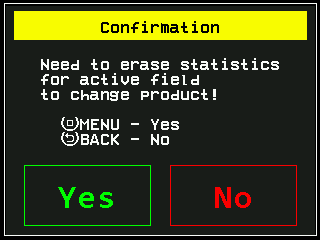
La question avant le changement de type de produit sur une parcelle contenant des données. Appuyez sur « BACK ». Vous voilà de retour sur l'écran Motors. Recommencez à partir de l'étape 2 pour chaque autre moteur.
Pendant que vous parcourez les valeurs, un produit qu'un arbre de doseur à contrôle du poids applique déjà est sauté — un produit est appliqué soit par des moteurs, soit par de tels doseurs, pas par les deux. Si aucun autre produit n'est disponible, la valeur ne bouge pas ; ce n'est pas un défaut.
Réglez ensuite la dose de chaque produit : Modifier la dose de consigne, et étalonnez chaque moteur : Étalonner un moteur au poids.
Étalonner un moteur de doseur au poids
Indiquer au panneau quelle quantité de produit un doseur entraîné par moteur délivre par tour d'arbre — ce qu'il faut, les étapes à l'écran, et ce que signifient les messages d'échec.
L'étalonnage indique au panneau quelle quantité de produit le doseur délivre par tour de son arbre. Sans lui, le panneau ne peut pas convertir la dose en kg/ha en une vitesse d'arbre. Étalonnez chaque doseur séparément, et de nouveau chaque fois que le produit ou le lot de semences change. Cela concerne les moteurs en modes « Flow » (débit) et « Hybrid » (hybride).
Il vous faut : une balance, un récipient à placer sous le doseur, et le produit dans la trémie.
Arrêtez la machine. Tant qu'elle avance, l'élément d'étalonnage est masqué.
Ouvrez le menu contextuel du moteur — sur l'écran Motors, ou depuis son produit sur l'écran de régulation de dose. Sélectionnez « Dispenser calibration(weight) » (étalonnage du doseur au poids) (depuis l'écran de régulation de dose : « Calibration, product » (étalonnage, produit)) et appuyez sur « MENU ».
Le premier écran montre les doses de consigne des produits utilisés — le produit de ce moteur entre des flèches — et, sous « Product dosage speed limitation: » (limitation de vitesse du dosage du produit), la vitesse d'avancement la plus basse et la plus haute à laquelle les doses peuvent être appliquées. Appuyez sur « PLUS ».

Le premier écran d'étalonnage avec les limites de vitesse. L'écran énumère ce qu'il faut faire avant d'étalonner : peser le récipient vide et noter le poids, remplir la trémie, placer le récipient sous le doseur, remplir les alvéoles du rotor. Appuyez sur « MENU » pour remplir les alvéoles du rotor.

La liste des actions avant l'étalonnage. Le moteur fait tourner l'arbre et le compteur « Rotations » (rotations) avance. Après deux tours, le panneau arrête le moteur et revient. « BACK » l'arrête plus tôt.
Appuyez sur « UP ». L'écran énumère les étapes de l'étalonnage proprement dit : vider le récipient, le placer sous le doseur, étalonner, arrêter le moteur, peser. Videz le récipient et remettez-le en place.
Appuyez sur « MENU ». Le moteur tourne et le doseur remplit le récipient. Recueillez-en le plus possible — au moins 1 kg, au plus 60 kg.
Appuyez sur « BACK » pour arrêter le moteur.
Après plus d'un tour d'arbre, la ligne du bas propose « MINUS » pour terminer l'étalonnage. Appuyez sur « MINUS ».

L'écran d'étalonnage avec la ligne pour le terminer. Pesez le récipient plein. Sur le pavé numérique, saisissez la différence entre plein et vide, en grammes, et appuyez sur « MENU ». Le panneau enregistre « Weight, gr » (poids, g) et « Rotations » et revient au premier écran.

Le pavé numérique qui demande le poids en grammes. Appuyez sur « BACK » pour quitter.
Pour abandonner l'étalonnage au lieu de l'étape 9, appuyez sur « BACK » : le panneau demande « Are you sure? » (êtes-vous sûr ?) et abandonne avec « PLUS » ; « MINUS » revient à l'étalonnage.
Le menu contextuel affiche ensuite non pas vos grammes mais une paire de nombres équivalente ; seul leur rapport compte. Elle est enregistrée d'elle-même.
Messages pendant l'étalonnage
| Message | Signification et conduite à tenir |
|---|---|
| « FAILURE » (défaillance) avec une raison, p. ex. « No connection » (pas de liaison) ou « No data from rotation sensor » (pas de données du capteur de rotation) | La liaison a été perdue, le moteur a signalé une alarme, ou aucun tour d'arbre n'est arrivé pendant dix secondes. Le moteur est arrêté, rien n'est enregistré. « BACK » ramène au premier écran ; recommencez. |
| « All electric motors not controlled. » (aucun moteur électrique sous surveillance) | Aucun moteur n'est sous surveillance. Mettez le moteur sous surveillance avec « PLUS » sur l'écran Motors. |
| Le nom du moteur en rouge avec « Not controlled » (hors surveillance), « No connection » ou « FAILURE » | L'étalonnage ne peut pas démarrer tant que cet état n'est pas levé. |
| « Can not provide dosage! » (dosage impossible), limites en rouge | Les doses se contredisent : aucune vitesse ne les satisfait toutes. Modifiez une dose, ou les limites de vitesse d'arbre — chaque ligne nomme le produit qui la fixe. |
| « Run calibration on the console » (lancer l'étalonnage sur la console) | Un bouton-poussoir est configuré sur le contrôleur de moteur : le moteur ne tourne que tant que le bouton est maintenu. |
| La vitesse doit être nulle (en anglais dans toutes les langues) | La machine avance. Arrêtez-la. |

Régler le rythme de jalonnage
Indiquer au Hectare Mini à quels passages quel actionneur ou moteur coupe — les limites, l'éditeur de rythme, ses fenêtres, et l'ordre qui évite d'écraser votre rythme.
Un jalonnage est la voie dans laquelle le pulvérisateur passera plus tard. Vous le créez en semant : le panneau coupe des rangs de semences ou des moteurs à certains passages — les passes à travers la parcelle. Il compte les passes et repart au premier après le dernier. Le nombre de passages et la liste de l'appareil qui coupe à quel passage forment le rythme. Exemple : quatre passages, l'actionneur 1 coupant au passage 4 — une passe sur quatre laisse un jalonnage.
| Limite | Valeur |
|---|---|
| Rythmes mémorisés | Trois, un seul actif à la fois. Conservez les schémas des machines avec lesquelles vous travaillez. |
| Passages dans un rythme | 1 à 50. |
| Actionneurs de jalonnage | Quatre au plus ; l'élément de profil « Tramline actuators » (actionneurs de jalonnage) en fixe le nombre. |
| Passages de coupure par appareil | Quatre. |
Le panneau n'en sait pas davantage : il n'existe pas de réglage pour un côté de départ ni pour la largeur du jalonnage. Les rangs de semences qu'un actionneur coupe physiquement se règlent dans « Relation of sensors to actuators » (relation des capteurs aux actionneurs) (Menu Settings) ; sans cela, le panneau compte les passages mais ne coupe rien.
L'élément « Tramline » (jalonnage) n'existe que si la machine a un actionneur de jalonnage, ou autant de moteurs de semences que de capteurs de graines, ou autant de moteurs d'engrais que de capteurs d'engrais. Le réglage demande le niveau Agronomist (Activer le niveau Agronomist).
Appuyez sur « MENU », puis ouvrez « Settings » (réglages) → « Seeding machine parameters » (paramètres du semoir) → « Tramline ». Réglez « Tramline » sur « Yes » (oui) avec « PLUS ».
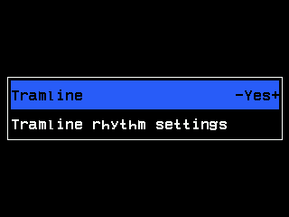
Le sous-menu Tramline. Sélectionnez « Tramline rhythm settings » (réglages du rythme de jalonnage) et appuyez sur « MENU ». L'éditeur de rythme s'ouvre.
Choisissez le numéro du rythme avec « PLUS » / « MINUS », appuyez sur « MENU » et choisissez « Select » (sélectionner). (« Active ») (actif) apparaît à côté du numéro. Sans cela, le rythme est enregistré mais pas utilisé.
Appuyez sur « DOWN » jusqu'au nombre de passages, appuyez sur « MENU », réglez « Bouts » (passages) avec « PLUS » / « MINUS » et validez avec « MENU ».
Appuyez sur « DOWN » jusqu'à la ligne vide d'une section et appuyez sur « MENU ». Réglez le numéro de l'appareil et le « Bout » (passage) auquel il coupe ; validez avec « MENU ».
Pour d'autres passages de coupure du même appareil, appuyez sur « PLUS » jusqu'à la cellule portant le signe « MENU » en fin de ligne et appuyez sur « MENU » — jusqu'à quatre.
Appuyez sur « BACK », ou maintenez « HOME ». Le rythme est enregistré.
L'éditeur de rythme
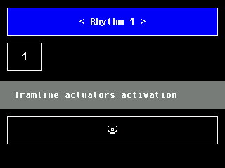
Lisez-le de haut en bas : « Rhythm » (rythme) avec son numéro entre des flèches et (Active) s'il est utilisé ; en dessous, le nombre de passages dans une case ; puis jusqu'à trois sections — « Tramline actuators activation » (activation des actionneurs de jalonnage), « Tramline motors activation » (activation des moteurs de jalonnage), « Tramline fert. motors activation » (activation des moteurs d'engrais de jalonnage) (avec les deux modes « Precise » (précis) : « Tramline motors gr.A activation » et « Tramline motors gr.B activation »). Chaque ligne nomme un appareil — « Actuator » (actionneur), « Motor » (moteur), « Fert.mot. » (moteur d'engrais) — et les passages auxquels il coupe ; une cellule portant le signe « MENU » ajoute un passage ou une ligne. Une cellule sélectionnée est blanche sur bleu.
| Bouton | Ce qu'il fait |
|---|---|
| « UP » / « DOWN » | Une ligne vers le haut ou le bas, à travers les sections. |
| « PLUS » / « MINUS » | Sur le numéro du rythme : rythme suivant / précédent. Dans une ligne : une cellule vers la droite / la gauche. Sur le nombre de passages : rien — ouvrez-le avec « MENU ». |
| « MENU » | Ouvre la fenêtre de la cellule sélectionnée. |
| « BACK » | Enregistre et revient au menu « Tramline ». |
| « HOME » maintenu | Enregistre et revient à l'écran d'accueil. Un appui court ne fait rien ici. |
Les fenêtres
- Numéro du rythme : « Select » en fait celui qui est utilisé ; « Reset rhythm settings » (réinitialiser les réglages du rythme) supprime ses lignes et ramène ses passages à 1.
- Nombre de passages : le diminuer supprime les entrées des passages qui disparaissent ; une ligne laissée sans passage disparaît. Si le passage courant était supérieur au nouveau nombre, le comptage repart à 1.
- Ligne d'un appareil : le numéro de l'appareil et « Remove » (supprimer). Les numéros déjà utilisés dans la section sont sautés — lisez la valeur, ne comptez pas les appuis.
- Passage d'une ligne : « Bout », « Remove bout » (supprimer le passage) et « Remove all bouts » (supprimer tous les passages). Les passages déjà présents dans la ligne sont sautés. Si tous les passages sont déjà saisis, « Unused bouts are not found! » (aucun passage inutilisé) apparaît à la place ; n'importe quel bouton la ferme.
Ce qui est enregistré où
Les trois rythmes, le nombre de passages, le passage courant, « Tramline » et « Auto-switching » (commutation automatique) font partie des réglages du panneau et sont enregistrés d'eux-mêmes peu après le dernier toucher. Le profil ne contient que le nombre d'appareils ; à l'ouverture, l'éditeur efface les lignes pour lesquelles le profil n'a pas d'appareil. Avec « Tramline » sur « No », tous les actionneurs et moteurs reviennent au semis.
Le travail dans la parcelle : Passage de jalonnage suivant.
Le jalonnage dans la parcelle — indicateur de passage et passage suivant
Lire l'indicateur de jalonnage, passer au passage suivant à la main ou laisser le panneau le faire d'après les traceurs ou la position de l'outil, et reconnaître un rang coupé pour le jalonnage.
Dès que « Tramline » (jalonnage) est réglé sur « Yes » (oui) (Régler le rythme de jalonnage), l'écran d'accueil affiche l'indicateur de jalonnage : un symbole de traces de roues, avec à côté le passage en cours en haut et, plus petit, le nombre de passages du rythme en dessous. Avec des traceurs dans le profil, il se trouve à droite de l'indicateur de traceurs.

| Symbole | Signification |
|---|---|
| Gris | Le panneau passe de lui-même au passage suivant. |
| Jaune | Il ne le fait pas : « Auto-switching » (commutation automatique) est désactivé, ou la machine ne lui fournit rien qui permette de commuter. |
| Jaune, en alternance avec une croix | La machine pourrait commuter d'elle-même, mais « Auto-switching » est désactivé. |
Les colonnes des rangs coupés sont hachurées en gris clair ; le débit à l'intérieur reste affiché, hachuré : vert tant qu'il reste sous la limite, rouge au-dessus — et le panneau signale alors « Seeding to tramline » (semis dans le jalonnage). La limite est une part de la dose de consigne, « Toler.sowing to tramline,% » (tolérance de semis dans le jalonnage, %) du capteur de graines (Réglages des capteurs). Au-dessus d'un capteur qui ne répond pas ou qui est hors surveillance, les hachures clignotent.
Changer le passage à la main
Sur l'écran d'accueil, appuyez sur « BACK ». Le menu des passages s'ouvre. Si un champ de dose clignote, le premier « BACK » ne fait que stopper le clignotement ; en mode de réglage des capteurs, « BACK » quitte le mode à la place.
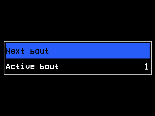
Le menu des passages. Pour régler un passage, sélectionnez « Active bout » (passage actif) et modifiez-le avec « PLUS » / « MINUS », de 1 au nombre de passages. Il est pris en compte à la fermeture du menu.
Pour avancer d'un passage, sélectionnez « Next bout » (passage suivant) et appuyez sur « MENU ». Le menu se ferme. Cet élément n'existe que lorsque le panneau ne peut pas commuter de lui-même.
Là où le panneau peut commuter de lui-même, le menu propose à la place « Auto-switching » : « MENU » le bascule entre « Yes » et « No » (non), émet un bip et ferme le menu.
Aucun niveau d'accès supérieur n'est nécessaire pour cela.
Quand le panneau commute de lui-même
Il lui faut quelque chose qui lui indique qu'un passage est terminé :
| Machine | Ce qui termine un passage |
|---|---|
| Avec traceurs | Un changement de position du traceur. Au moins un capteur de traceur doit être sous surveillance et répondre. |
| Sans traceurs | Le relevage du semoir hors travail. Le capteur de position de l'outil doit être sous surveillance et répondre. |
| Ni l'un ni l'autre | Rien — le menu propose « Next bout » à la place de « Auto-switching ». |
En outre, « Auto-switching » doit être sur « Yes » et le passage doit avoir réellement été parcouru : tant que la machine avance (sans capteur de vitesse : tant qu'elle sème), la commutation est bloquée. Elle est libérée lorsque le travail s'arrête ; le changement de traceur suivant — ou le relevage — fait alors avancer d'exactement un passage.
L'actionneur lui-même
Deux réglages d'un actionneur de jalonnage se trouvent dans son menu contextuel (Réglages des capteurs), niveau Agronomist :
| Élément | Valeurs |
|---|---|
| « Cutoff position » (position de coupure) | La position dans laquelle il coupe : « Pulled out » (sorti ; réglage d'usine) ou « Pulled in » (rentré). |
| « Switch » (commutation) | Quand il se déplace : « when seeding » (en semant ; réglage d'usine) ou « always » (toujours). |
Deux alarmes concernent l'actionneur : « Illegal state » (état illicite) — il signale les deux positions de fin de course à la fois ; « Stall » (calage) — il n'atteint pas la position demandée. Voir Alarmes de jalonnage.
Niveaux d'accès
Les trois niveaux d'accès du Hectare Mini — Operator, Agronomist, Service — ce que chacun ouvre, ce qui arrive aux alarmes aux niveaux élevés et comment revenir au niveau Operator.
Le boîtier masque tous les réglages dont un conducteur n'a pas besoin. Ce qu'un menu affiche dépend du niveau d'accès choisi sous « User » (utilisateur) dans le menu « Settings » (réglages). À chaque mise sous tension, le boîtier démarre au niveau « Operator » (opérateur).
| Niveau | Qui | Ce qu'il ouvre |
|---|---|---|
| « Operator » | Le conducteur | Tout ce qui sert au travail : les doses de consigne, les parcelles, les statistiques, « Alarm delay » (délai d'alarme), la date et l'heure, la langue. Dans les menus contextuels : « Information » et les réglages courants des capteurs, comme « Fraction » ou « Minimum, rpm ». |
| « Agronomist » (agronome) | L'agriculteur, le revendeur | Ouvre en plus « Seeding machine parameters » (paramètres du semoir : largeur de travail, modes, étalonnages), les paramètres masqués de chaque capteur et, dans le menu principal, le menu « Service » avec « Sensors Configuration » pour les capteurs de graines et de pression. |
| « Service » (service après-vente) | Le technicien du service après-vente | Ouvre en plus le profil, la configuration des concentrateurs HUB-8 et des actionneurs de jalonnage, l'écran de service des moteurs, « Reset to defaults » dans chaque menu contextuel et « Reset settings ». L'écran d'état d'un capteur affiche son adresse. |
La liste sous « User » comporte une quatrième valeur, « Debug ». Elle est réservée au constructeur et ne sert à rien sur le terrain.
Pour passer à « Agronomist » ou « Service », le boîtier demande le code PIN de ce niveau. Les codes PIN diffèrent d'un boîtier à l'autre : le revendeur vous donne ceux de votre boîtier. Pour redescendre, rien n'est demandé. Marche à suivre : Activer le niveau Agronomist.
Dans ce manuel, chaque paramètre ou rubrique de menu indique le niveau qu'il exige. Une rubrique que vous ne voyez pas est au-dessus de votre niveau ou ne concerne pas la machine du profil.
Ce qui arrive aux alarmes tant que le niveau est élevé
La seule fenêtre qui apparaît encore est « User is Agronomist! Alarms will not be shown! » (l'utilisateur est agronome ! les alarmes ne seront pas affichées) — une fois par session, dès que le boîtier voit un semis au niveau élevé. Voir User is Agronomist.
Quand vous redescendez au niveau « Operator », le boîtier écarte les alarmes qui ont disparu entre-temps et affiche celles qui sont toujours vraies, l'une après l'autre.
Retour au niveau Operator
- Dans « Settings », réglez « User » sur « Operator » avec « MINUS » et appuyez sur « MENU », ou
- éteignez puis rallumez le boîtier.
Faites l'un ou l'autre après chaque mise en service ou réparation, avant que la machine reprenne le travail.
Ce que contient le menu Service
Le menu principal affiche « Service » à partir du niveau « Agronomist ». Voici son contenu :
| Rubrique | Niveau | À quoi elle sert |
|---|---|---|
| « Profile » | Service | La liste des appareils de la machine. Le profil |
| « Sensors Configuration » | Agronomist | Donne une adresse à un appareil neuf ou remplacé. Configuration des appareils |
| « Electric motors » | Service | L'écran de service des moteurs de doseur ; uniquement avec des moteurs dans le profil. |
| « Count seeds always » | Agronomist | « Yes » : le tableau de semis et l'écran des statistiques comptent aussi les graines dans les modes « Flow » et « Hybrid », et pas seulement dans le mode « Precise ». |
| « Enter key » | Agronomist | Affichée uniquement sur un boîtier à licence limitée dans le temps : saisissez la clé de licence fournie par le revendeur. |
Les autres rubriques de ce menu sont réservées au technicien du service après-vente et au constructeur.
Activer le niveau Agronomist
Les étapes, avec l'écran de chacune, pour passer le Hectare Mini au niveau Agronomist ou Service avant de modifier des réglages, puis revenir au niveau Operator.
Les paramètres des capteurs, la largeur de travail, les étalonnages et la configuration des appareils exigent le niveau « Agronomist » (agronome). Le niveau « Service » (service après-vente) s'active de la même façon. Ce que chaque niveau ouvre : Niveaux d'accès.
Il vous faut le code PIN de ce boîtier pour ce niveau. Il diffère d'un boîtier à l'autre ; le revendeur vous le donne.
Sur l'écran d'accueil, appuyez sur « MENU ». Le menu principal s'ouvre.

Le menu principal. Sélectionnez « Settings » (réglages) avec « UP » / « DOWN » et appuyez sur « MENU ». Le menu « Settings » s'ouvre.
Appuyez sur « DOWN » jusqu'à sélectionner « User » (utilisateur) — c'est la dernière rubrique. Appuyez sur « PLUS » jusqu'à lire « Agronomist » (ou « Service »).
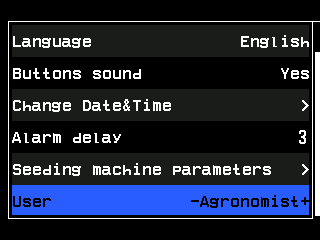
« User » réglé sur Agronomist. Appuyez sur « MENU ». Le clavier de saisie du code PIN s'ouvre avec « Enter your PIN: » (saisissez votre code PIN) ; la ligne sous l'invite identifie ce boîtier. Saisissez le code PIN sur le clavier numérique et touchez « OK » ou appuyez sur « MENU ».
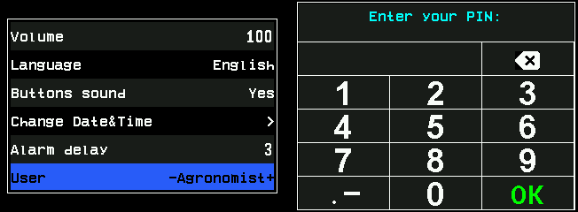
Le clavier de saisie du code PIN. Le boîtier affiche un instant le nom du nouveau niveau et revient au menu « Settings », qui présente maintenant les rubriques de ce niveau — par exemple « Seeding machine parameters » (paramètres du semoir).
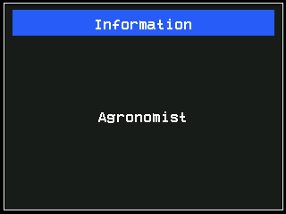
Le boîtier confirme le nouveau niveau. Appuyez sur « BACK » pour quitter le menu.
Si le code PIN est faux — ou s'il correspond à un autre niveau que celui choisi à l'étape 3 — le boîtier affiche un instant « Invalid PIN » (code PIN incorrect) et rouvre le clavier. Saisissez-le de nouveau, ou appuyez sur « BACK » pour abandonner ; le niveau reste inchangé.
Quand vous redescendez, les alarmes encore vraies s'affichent l'une après l'autre — voir Niveaux d'accès.
Vérifier le profil et les connexions
Le premier contrôle après l'installation d'un Hectare Mini — le profil correspond-il à la machine, chaque appareil répond-il, chaque capteur est-il sous surveillance — sous forme de procédure avec ce que l'écran affiche à chaque étape.
Le boîtier ne surveille que les appareils que son profil énumère. Les systèmes sont en général livrés avec le profil déjà réglé, mais avant de régler le moindre paramètre, vérifiez qu'il correspond à la machine et que chaque appareil répond. Le contrôle du profil exige le niveau « Service » (service après-vente), qui demande un code PIN — le revendeur le fournit pour votre boîtier ; voir Activer le niveau Agronomist. Les deux autres contrôles ne demandent aucun code.
1. Vérifier le profil
Raccordez tous les appareils au boîtier et alimentez-les comme l'indique le schéma de câblage de la fiche technique du système.
Allumez le boîtier. Après l'écran de démarrage, l'écran d'accueil apparaît.
Passez au niveau « Service » : « MENU » → « Settings » (réglages) → « User » (utilisateur) → « Service », « MENU », code PIN — comme dans Activer le niveau Agronomist.
Appuyez sur « BACK ». Le menu principal réapparaît, avec maintenant « Service ». Sélectionnez « Service » et appuyez sur « MENU », puis sélectionnez « Profile » (profil) et appuyez sur « MENU ». Le menu du profil s'ouvre.

Le chemin vers le profil : Settings au niveau Service, le menu principal, le menu Service, le menu du profil. Lisez le menu du profil, de haut en bas. Chaque rubrique est un type d'appareil avec le nombre que le boîtier attend, par exemple « Seed sensors » (capteurs de graines) ; « Speed » (vitesse) indique le mode de raccordement du capteur de vitesse : « Control panel », « Input device » ou « Input device (2) ». « UP » et « DOWN » parcourent la liste, plus longue que l'écran. Toutes les rubriques : Le profil.

Le menu du profil. Comparez la liste avec la machine et le schéma de câblage. Ne changez rien ici : « BACK » quitte le menu du profil sans enregistrer.
Revenez au niveau « Operator » : éteignez puis rallumez le boîtier, comme dans Activer le niveau Agronomist. Au niveau « Service », le boîtier n'affiche aucune fenêtre d'alarme, et le contrôle suivant en a besoin.
Si le profil ne correspond pas à la machine, réglez-le d'abord : Régler le profil.
2. Vérifier que chaque appareil répond
Attendez quelques secondes sur l'écran d'accueil. Si aucune fenêtre « Connection lost » (connexion perdue) n'apparaît, le boîtier a trouvé tous les appareils du profil.

Quand plusieurs appareils d'un même type ne répondent pas, une seule fenêtre en énumère tous les numéros — ici les capteurs de pression 1 à 3 :
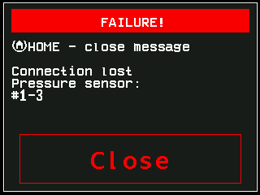
3. Vérifier que chaque capteur est sous surveillance
Un capteur hors surveillance n'est pas surveillé du tout. Son indicateur affiche le signe gris clignotant non surveillé ou !!!! à la place de la valeur ; sous une colonne du schéma, il affiche une case blanche avec ! — voir Indicateurs.
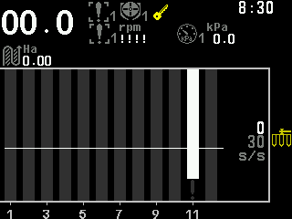
S'il y a un tel capteur, remettez-le sous surveillance :
Sur l'écran d'accueil, maintenez « MENU » enfoncé jusqu'à ce que l'indicateur de vitesse passe sur fond blanc. Le boîtier est en mode de réglage des capteurs. Relâchez la touche.
Le mode de réglage des capteurs, capteur de vitesse sélectionné. Appuyez sur « DOWN » (ou « UP ») jusqu'à sélectionner le capteur hors surveillance. Un capteur de graines est sélectionné quand son numéro, sous la colonne, est sur fond blanc.

Le capteur de turbine sélectionné. Appuyez sur « PLUS ». Le boîtier demande si vous êtes sûr ; appuyez sur « MENU » pour répondre « Yes ». « BACK » répond « No » (non).
La question posée avant de modifier la surveillance d'un capteur. Répétez les étapes 2 et 3 pour chaque capteur hors surveillance. La question n'est posée que la première fois tant que vous restez dans ce mode.
Appuyez sur « BACK » pour quitter le mode de réglage des capteurs.
Activer la surveillance d'un capteur, c'est ce que ce manuel appelle mettre un capteur sous surveillance. Pour en savoir plus : Mettre un capteur sous ou hors surveillance.
Le résultat
Chaque capteur doit être sous surveillance, et aucun indicateur ne doit afficher de croix rouge — le signe d'un appareil qui ne répond pas.
Quand tout est en ordre, l'écran d'accueil affiche chaque appareil dans son gris normal, sans croix rouge ni signe non surveillé :
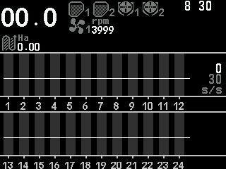
Passez ensuite aux réglages : Mise en service.
Le profil
Ce qu'est le profil du Hectare Mini, chaque rubrique du menu du profil avec ses valeurs, et les règles qu'un profil doit respecter pour que le boîtier l'accepte.
Le profil indique au boîtier quels appareils la machine possède et combien de chaque type. Il détermine les indicateurs de l'écran d'accueil, les menus contextuels disponibles et les appareils que le boîtier interroge. Un système est en général livré avec son profil réglé ; ne le modifiez que si l'équipement de la machine change. Comment le vérifier : Vérifier le profil et les connexions. Comment le modifier : Régler le profil.
Le profil compte ce qui est surveillé et ce qui est piloté, pas les boîtiers. Un même module d'entrée peut porter, par exemple, des capteurs de turbine et des capteurs de trémie ; un même contrôleur d'actionneurs peut porter un actionneur et deux capteurs de marqueur. Chacun est saisi sous sa propre rubrique.
- « Seed sensors » (capteurs de graines) — la rubrique sélectionnée.
- La valeur, ici 12, entre − et + : modifiez-la avec « MINUS » et « PLUS ».
- « Fertilizer sensors » (capteurs d'engrais).
- « Liq.fert.flow sensors » (capteurs de débit d'engrais liquide).
- « Hoppers » (trémies).
- « Dispensers » (doseurs).
- « Speed » (vitesse) — mode de raccordement du capteur de vitesse.
- Sa valeur, ici « Control panel » (boîtier de commande).
- Barre de défilement. La liste se poursuit sous l'écran.
Les rubriques
Chaque rubrique exige le niveau « Service », comme le menu lui-même.
| Rubrique | Ce qu'elle indique | Valeurs |
|---|---|---|
| « Seed sensors » | Nombre de capteurs de graines. | 2 … 60 |
| « Fertilizer sensors » | Nombre de capteurs d'engrais sec. | 0 … 60 |
| « Liq.fert.flow sensors » | Nombre de capteurs de débit d'engrais liquide. | 0 … 60 |
| « Hoppers » | Nombre de capteurs de niveau de trémie. | 0 … 9 |
| « Dispensers » | Nombre de capteurs d'arbre de doseur. | 0 … 9 |
| « Speed » | Présence d'un capteur de vitesse d'avancement et lieu de son raccordement : « No » ; « Control panel » — un capteur sur le boîtier ; « Input device » — un capteur sur un module d'entrée ; « Input device (2) » — deux capteurs sur un module d'entrée. | voir à gauche |
| « GPS » | Le récepteur GPS intégré comme source de vitesse : « No » ; « UBX » — le réglage normal ; « NMEA » — le récepteur fournit ses données au format NMEA 0183. Tant qu'il a un fix valide, le GPS est prioritaire sur le capteur de « Speed » ; sans fix, le capteur reprend de lui-même. Réception GPS | voir à gauche |
| « Fans » | Nombre de capteurs de vitesse de turbine. | 0 … 2 |
| « Pressure sensors » | Nombre de capteurs de pression (dépression). | 0 … 3 |
| « Work position sensor » | Présence d'un capteur de position de travail et de transport de l'outil. | « No » / « Yes » |
| « Markers » | Mode de surveillance des bras de traceur : « No » ; « One » — un capteur ; « Both » — un capteur par bras. | voir à gauche |
| « No battery charge » | Capteur de charge de la batterie du moteur d'entraînement de la turbine. Désactivez-le avec le capteur d'allumage. | « No » / « Yes » |
| « Emergency oil pressure » | Capteur de pression d'huile trop basse du moteur d'entraînement de la turbine. Désactivez-le avec le capteur d'allumage. | « No » / « Yes » |
| « Ignition » | Capteur de clé de contact du moteur d'entraînement de la turbine. | « No » / « Yes » |
| « Low fuel » | Capteur de niveau de carburant du moteur d'entraînement de la turbine. | « No » / « Yes » |
| « Air filter » | Capteur de filtre à air du moteur d'entraînement de la turbine. | « No » / « Yes » |
| « EMD of the seeds » | Nombre de moteurs électriques de doseur pour la semence. | 0 … 60 |
| « EMD of the fertilizers » | Nombre de moteurs électriques de doseur pour l'engrais. | 0 … 30 |
| « Tramline actuators » | Nombre d'actionneurs de jalonnage. | 0 … 4 |
| « Liq.fert.pump controller » | Présence d'un contrôleur de pompe pour l'engrais liquide. | 0 / 1 |
| « Save profile » | Enregistre le profil et redémarre le boîtier. | — |
Règles que le profil doit respecter
« Save profile » refuse un profil qui enfreint l'une de ces règles et affiche « Invalid profile! » (profil non valide !) :
- au moins 2 capteurs de graines ;
- « Hoppers », « Dispensers » et les cinq capteurs du moteur ensemble : 12 au maximum ; au-delà de 10, « Fans » et « Pressure sensors » ensemble ne peuvent pas dépasser 4 ;
- « Fans » et « Pressure sensors » ensemble : 5 au maximum ;
- moteurs de semence et moteurs d'engrais ensemble : 60 au maximum ; moteurs d'engrais uniquement avec des moteurs de semence et des capteurs d'engrais ;
- les moteurs de doseur et un contrôleur de pompe liquide exigent un capteur de vitesse.
Régler le profil
Les étapes pour modifier le profil du Hectare Mini — accéder au menu du profil au niveau Service, saisir les appareils de la machine, enregistrer et laisser le boîtier redémarrer.
Réglez le profil quand l'équipement de la machine change — un appareil ajouté, retiré ou d'un autre type. Les rubriques et leurs limites : Le profil. Le menu du profil exige le niveau « Service » (service après-vente).
Raccordez tous les appareils au boîtier et alimentez-les comme l'indique le schéma de câblage de la fiche technique du système.
Allumez le boîtier. Après l'écran de démarrage, l'écran d'accueil apparaît ; ce qu'il affiche dépend du profil en vigueur.
L'écran d'accueil après le démarrage. Passez au niveau « Service » : « MENU » → « Settings » (réglages) → « User » (utilisateur) → « Service », « MENU », code PIN — comme dans Activer le niveau Agronomist.
Appuyez sur « BACK ». Le menu principal réapparaît, avec maintenant « Service ».
Sélectionnez « Service » et appuyez sur « MENU ». Le menu « Service » s'ouvre avec « Profile » (profil) comme première rubrique.
Sélectionnez « Profile » et appuyez sur « MENU ». Le menu du profil s'ouvre.
Le chemin vers le profil : Settings au niveau Service, le menu principal, le menu Service, le menu du profil. Parcourez les rubriques avec « UP » / « DOWN » et réglez chacune avec « PLUS » / « MINUS » d'après l'équipement de la machine.
Le menu du profil. Sélectionnez « Save profile » (enregistrer le profil), la dernière rubrique, et appuyez sur « MENU ». Le boîtier demande « Are you sure? » (êtes-vous sûr ?) — appuyez sur « PLUS » pour « Yes » (oui), sur « MINUS » pour « No » (non).
Le boîtier vous demande d'attendre, puis affiche « Saved » (enregistré) et « Restart system » (redémarrage du système), et redémarre de lui-même. Le nouveau profil est en vigueur après le redémarrage.

Enregistrement du profil : la rubrique Save profile, la question, puis les messages Saved et Restart system.
« BACK » quitte le menu du profil ; les nombres d'appareils que vous avez modifiés ne sont pas enregistrés. « GPS » fait exception : il est mémorisé aussitôt, comme un réglage du menu « Settings ».
Quand le profil n'est pas enregistré
| Le boîtier affiche | Signification |
|---|---|
| « No changes » (aucune modification) | Le profil est identique à celui qui est enregistré. Rien n'est enregistré, rien ne redémarre. |
| « Invalid profile! » | Le profil enfreint une règle — trop peu de capteurs de graines, trop de petits indicateurs, trop de capteurs de turbine et de pression, ou des moteurs sans capteur de vitesse. Voir Règles que le profil doit respecter. Corrigez-le et enregistrez de nouveau. |
Après le redémarrage, le boîtier est au niveau « Operator ». Contrôlez le résultat comme dans Vérifier le profil et les connexions, puis, si la machine trace des jalonnages, réglez le rythme de jalonnage — toujours après le profil — Régler le rythme de jalonnage.
Régler la date et l'heure
Réglez l'horloge du Hectare Mini à la main, ou laissez-la suivre le récepteur GPS avec un fuseau horaire.
Le boîtier date le début et la fin du travail sur chaque parcelle avec son horloge et affiche l'heure sur l'écran d'accueil. « Change Date&Time » (modifier la date et l'heure) se trouve dans le menu « Settings » (réglages) au niveau « Operator » (opérateur). Ce qu'il ouvre dépend de la rubrique « GPS » du profil.
Avec le GPS dans le profil
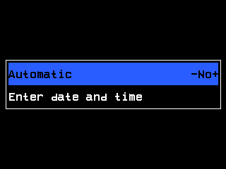
- « Automatic » (automatique) — indique si l'horloge suit le récepteur GPS.
- Sa valeur, ici « No » (non). Modifiez-la avec « PLUS » / « MINUS ».
- « Enter date and time » (saisir la date et l'heure) — ouvre le menu de réglage manuel de l'horloge. Affichée tant que « Automatic » est sur « No ».
- « Automatic » sur « Yes » (oui) : l'horloge prend l'heure du récepteur GPS. La rubrique « Time zone » (fuseau horaire) apparaît à la place de « Enter date and time » — réglez votre décalage par rapport à UTC avec « PLUS » / « MINUS », de −12:00 à +14:00 par heures entières.
- « Automatic » sur « No » : sélectionnez « Enter date and time » et appuyez sur « MENU », puis poursuivez comme ci-dessous à partir de l'étape 2.
À la main
« MENU » → « Settings » → « Change Date&Time », appuyez sur « MENU ». Sans GPS dans le profil, le menu s'ouvre avec « Year » (année), « Month » (mois), « Day » (jour), « Hours » (heures), « Minutes », « Seconds » (secondes) et « Set » (valider).
Sélectionnez une rubrique avec « UP » / « DOWN » et modifiez-la avec « PLUS » / « MINUS ». « MENU » sur un nombre — toutes les rubriques sauf « Month » — ouvre le clavier numérique.
Réglez les six rubriques. Après un changement de mois, un jour que le mois ne comporte pas est ramené à son dernier jour.
Sélectionnez « Set » et appuyez sur « MENU ». L'horloge prend la nouvelle date et la nouvelle heure, et le menu d'où vous venez réapparaît.
« BACK » quitte sans modifier l'horloge. Chaque rubrique s'ouvre avec la date et l'heure actuelles : vous ne modifiez donc que ce qui est faux.
Paramètres du semoir
Le sous-menu avec la largeur de travail et les modes de régulation du Hectare Mini, l'effet d'une modification sur les statistiques, et le point de départ des deux étalonnages du menu.
« Settings » (réglages) → « Seeding machine parameters » (paramètres du semoir), niveau « Agronomist » (agronome) (Activer le niveau Agronomist). Réglez-les en premier sur une machine neuve — toutes les valeurs de surface et de dose en sont déduites.

- « Width, cm » (largeur, cm) — la rubrique sélectionnée.
- Sa valeur entre -[ et ]+ : « PLUS » / « MINUS » la font évoluer par pas, « MENU » ouvre le clavier numérique.
- « Mode of seeding » (mode de semis).
- Sa valeur, ici « Flow » (débit).
- « Speed calibration » (étalonnage de la vitesse) — lance l'étalonnage du capteur de vitesse.
| Rubrique | Fonction | Plage · valeur par défaut |
|---|---|---|
| « Width, cm » | La largeur de travail de la machine. La surface, et chaque dose à l'hectare, en sont déduites. Saisissez-la toujours. | 100 … 2500 cm · 560 |
| « Mode of seeding » | Façon dont les capteurs de graines sont régulés et affichés : « Flow » — graines par seconde, pour les semoirs en lignes ; « Hybrid » — graines par mètre, possible sur les semoirs en lignes mais inutilisé en pratique ; « Precise » — graines par mètre avec manques et doubles, pour les semoirs monograines. | · « Flow » |
| « Mode of fertilizers » | Les mêmes trois modes pour les capteurs d'engrais. Affichée uniquement avec des capteurs d'engrais dans le profil. | · « Flow » |
| « Mode of liq.fert. » | « Flow » ou « By area » (à la surface) pour les capteurs d'engrais liquide. Affichée uniquement avec de tels capteurs et sans contrôleur de pompe. | · « By area » |
| « Tramline » | Les réglages du jalonnage — Régler le rythme de jalonnage. Affichée uniquement si la machine peut tracer des jalonnages. | sous-menu |
| « Relation of sensors to actuators » | Les lignes de semis que chaque actionneur ou moteur de jalonnage coupe. Affichée uniquement quand ce n'est pas un pour un. | écran |
| « Speed calibration » | Étalonner le capteur de vitesse. | — |
| « Dispenser calibration » | Étalonner la rotation du doseur pour « ALL » (tous) les doseurs ou pour un seul, par son numéro. Affichée uniquement avec des capteurs de doseur dans le profil. | « ALL », 1 … nombre de doseurs |
| « Reset to defaults » | Niveau « Service ». Remet la largeur et les modes à leurs valeurs par défaut. | — |
Sans capteur de vitesse dans le profil, les trois rubriques de mode et « Speed calibration » sont masquées : le boîtier ne peut fonctionner qu'en mode « Flow ».
La dose de consigne se règle sur l'écran d'accueil, pas ici — Modifier la dose de consigne. Sa plage suit le mode : « Flow » de 1 à 1 500 graines par seconde, « Hybrid » de 1 à 200 graines par mètre, « Precise » de 0,5 à 50,0 graines par mètre.
Effet d'une modification sur les statistiques
Un passage entre « Flow » et « Hybrid » conserve les statistiques.
Les deux modes dépendent l'un de l'autre : les capteurs d'engrais ne peuvent fonctionner en mode « Precise » que si les capteurs de graines y fonctionnent. Le boîtier refuse les autres combinaisons avec un message qui nomme la rubrique à modifier d'abord. Quand les deux fonctionnent en mode « Precise », les capteurs d'engrais deviennent un second groupe de semis, et les rubriques s'appellent « Mode of seeding gr.A » et « Mode of seeding gr.B ».
Si un produit dosé au poids est ensuite revendiqué à la fois par un capteur de doseur et par un moteur, le boîtier désactive « Weight control » (régulation au poids) des capteurs de doseur et l'indique dans une fenêtre « WARNING! » (avertissement !).
Réglages des capteurs
Comment accéder aux réglages d'un capteur du Hectare Mini, ce que contient chaque menu contextuel, quels réglages sont communs à un groupe et quels étalonnages existent.
Chaque capteur, moteur et actionneur possède son propre menu contextuel : son écran d'état, ses paramètres et, pour certains, un étalonnage. Les paramètres de chaque type de capteur figurent dans les rubriques qui suivent.
Accéder à un capteur
Sur l'écran d'accueil, maintenez « MENU » enfoncé jusqu'à ce que l'indicateur de vitesse passe sur fond blanc. Le boîtier est en mode de réglage des capteurs. Relâchez la touche.
Le mode de réglage des capteurs, capteur de vitesse sélectionné. Sélectionnez le capteur avec « UP » / « DOWN ». Un capteur de graines ou d'engrais sélectionné affiche son numéro sous la colonne, sur fond blanc.
Appuyez sur « MENU ». Le menu contextuel du capteur sélectionné s'ouvre.
Modifiez une valeur avec « UP » / « DOWN » et « PLUS » / « MINUS », comme dans tout menu. « BACK » ferme le menu contextuel ; un nouvel appui sur « BACK » quitte le mode de réglage des capteurs.
Ce que contient le menu contextuel dépend du type de capteur, de la machine et du niveau d'accès. Un paramètre que vous ne voyez pas est soit au-dessus de votre niveau, soit sans objet — la rubrique de chaque capteur le précise.
Le menu contextuel
- « Information » — ouvre l'écran d'état de ce capteur. Chaque menu contextuel commence par elle. L'écran d'état d'un capteur
- Une action propre à ce type de capteur — ici « Speed calibration » (étalonnage de la vitesse). Un capteur de doseur a à la place « Dispenser calibration(weight) » ; les capteurs de graines et d'engrais ont « Product application » (application du produit).
- Un paramètre — ici « Pulses » (impulsions) du capteur de vitesse.
- Sa valeur. Sélectionnez la ligne ; la valeur se trouve entre − et + et se modifie avec « MINUS » / « PLUS ».
- Barre de défilement. D'autres paramètres suivent ; la dernière rubrique est « Reset to defaults » (valeurs par défaut).
« Reset to defaults » remet les paramètres de ce capteur à leurs valeurs d'usine. Elle exige le niveau « Service » (service après-vente) et agit aussitôt, sans demander.
Le menu contextuel atteint depuis l'écran d'état avec « MENU » a pour première rubrique « Disable control » ou « Enable control » à la place de « Information » — voir Mettre un capteur sous ou hors surveillance.
Un jeu pour un groupe, ou un jeu par capteur
| Capteurs | Réglages |
|---|---|
| Capteurs de graines | Un seul jeu pour tous. Modifiez-le sur n'importe quel capteur de graines — il s'applique à tous. Seule « Product application » se règle ligne par ligne. |
| Capteurs d'engrais | Un seul jeu pour tous les capteurs d'engrais, distinct de celui des capteurs de graines. « Product application » ligne par ligne. |
| Tous les autres capteurs | Chaque capteur a ses propres réglages — réglez chaque capteur de doseur, de turbine ou de pression séparément. |
Étalonnages
| Ce qu'il corrige | Où | Niveau | Machine |
|---|---|---|---|
| Vitesse d'avancement — « Factor, % » du capteur de vitesse, sur 100 m. Étalonner le capteur de vitesse | « Seeding machine parameters » → « Speed calibration », ou menu contextuel du capteur de vitesse | Agronomist ; depuis le menu contextuel aussi Operator avec un code PIN | roule sur 100 m |
| Rotation du doseur — « Wheel, pulses » par rapport à « Dispenser pulses ». Étalonner la rotation du doseur | « Seeding machine parameters » → « Dispenser calibration » | Agronomist | roue d'entraînement tournée |
| Doseur au poids — « Weight, gr » et « Weight, pulses ». Étalonner le doseur au poids | menu contextuel du capteur de doseur → « Dispenser calibration(weight) » | Operator | à l'arrêt |
| Moteur de doseur au poids. Étalonner un moteur au poids | menu contextuel du moteur | Operator | à l'arrêt |
Les deux étalonnages au poids sont au niveau « Operator » (opérateur) parce qu'il faut les refaire chaque fois que le produit change.
Les types de capteurs
Capteur de vitesse · Capteurs de graines et d'engrais · Capteur de doseur · Capteur de turbine · Capteur de pression · Capteurs de trémie et de position de travail · Capteurs du moteur · Capteurs de traceur · Moteurs de doseur
L'écran d'état d'un capteur
Comment lire l'écran d'état d'un capteur du Hectare Mini — type, unité, liaison, valeurs en direct et alarmes actives — et ce que chaque type de capteur y affiche.
« Information » dans le menu contextuel d'un capteur ouvre son écran d'état (Réglages des capteurs). Il montre ce que le boîtier sait de ce capteur à l'instant même — le premier endroit où regarder quand une alarme n'est pas claire.

- Sélecteur de canal — indique de quel capteur de toute la liste il s'agit. « MINUS » affiche le capteur précédent, « PLUS » le suivant ; l'écran reste ouvert.
- « Type: » — le type du capteur et son numéro.
- « Unit: » (unité) — le lieu de raccordement du capteur, ici « Control panel » (boîtier de commande). Les capteurs du réseau de capteurs n'ont pas cette ligne.
- « Link: » (liaison) — l'état de la communication. Tableau ci-dessous.
- La valeur en direct de ce type de capteur — ici la fréquence d'impulsions F= du capteur de vitesse, en Hz.
- « Min speed, km/h » (vitesse minimale) en vigueur. ---- signifie désactivée.
- « Max speed, km/h » (vitesse maximale) en vigueur.
Au niveau « Service » (service après-vente), une ligne avec l'adresse du capteur dans le réseau de capteurs s'ajoute en haut. Quand le capteur a des alarmes actives, deux lignes rouges apparaissent en bas : « Alarm 1 from 2 » (alarme 1 sur 2) et le nom de l'alarme affichée.
| Touche | Action |
|---|---|
| « PLUS » / « MINUS » | Capteur suivant / précédent. |
| « UP » / « DOWN » | Alarme active suivante / précédente de ce capteur. |
| « MENU » | Le menu contextuel de ce capteur, avec « Disable control » ou « Enable control » comme première rubrique. Au niveau « Operator », pendant que la machine roule, « MENU » ne fait rien sur le capteur de vitesse. |
| « BACK » | Retour à l'écran d'où vous venez. |
États de la liaison
| État | Signification |
|---|---|
| « Normal » | Le capteur répond. |
| « Not controlled » | Le capteur est hors surveillance : ni sa communication ni rien d'autre n'est surveillé. |
| « No connection » | Le capteur ne répond pas. Rouge. |
| « Wrong device type! » | Quelque chose répond, mais pas le type d'appareil attendu par le profil. Rouge. |
| « IMITATION » | Capteur de vitesse uniquement : la vitesse est simulée, non mesurée. Jaune. |
Les valeurs en direct et les alarmes ne sont affichées que si le capteur est sous surveillance, répond et est du bon type.
Ce que chaque type de capteur affiche
| Capteur | Valeurs en direct |
|---|---|
| Capteur de vitesse | F= en Hz ; avec deux capteurs F1= et F2=. Puis « Min speed, km/h » et « Max speed, km/h ». Avec des moteurs qui dosent au poids, les limites sont celles que les moteurs peuvent tenir, restreintes par les deux réglages ; une limite que les réglages ne peuvent pas respecter est écrite en rouge. |
| Capteurs de graines et d'engrais | Status: et l'état du capteur — ci-dessous. |
| Capteur de doseur | F= en Hz, à trois décimales. |
| Capteur de turbine | F= en Hz. |
| Capteur de pression | P= en kPa. |
| Capteur de trémie | Pin: avec le niveau sur l'entrée, "0" ou "1". |
| Capteur de position de travail | « Position: Working » ou « Position: Transporting », et Pin: avec le niveau sur l'entrée. |
| Allumage, pression d'huile, charge de la batterie, niveau de carburant, filtre à air | Pin: avec le niveau sur l'entrée. |
| Capteur de débit d'engrais liquide | Status: « Working », ou Working:Tramline dans un passage de jalonnage ; Flow= en L/min. |
| Moteur de doseur | Status: « Working » ou « Faulty » ; après un défaut, Last fault: avec le code du contrôleur. |
États d'un capteur de graines ou d'engrais
| État | Signification |
|---|---|
| « Working » | Normal. Working:Tramline — normal, dans le mode jalonnage de ce passage. |
| « Configuring » | Le capteur a reçu de nouveaux réglages du boîtier et les applique. |
| « Calibration in progress » | Le capteur effectue son étalonnage initial ; cela prend quelques secondes. |
| « Clogged » | Quelque chose obstrue le canal optique — le soc ou le tube de descente est peut-être bouché. Rouge. |
| « Light struck » | Trop de lumière du soleil tombe sur le capteur ; il ne peut pas compter. Rouge. |
| « Faulty » | Le capteur est en panne et doit être remplacé. Rouge. |
| « Unknown » | Autre défaut impossible à identifier. Rouge. |
Capteur de vitesse d'avancement
Tous les paramètres du capteur de vitesse d'avancement du Hectare Mini — impulsions, période de comptage, diamètre de roue, facteur, critères de semis, limites de vitesse, simulation — avec leur plage et leur valeur par défaut.
La surface, les doses, les manques et les doubles se déduisent tous de la distance parcourue. Un capteur de vitesse qui se trompe d'un dixième fausse d'un dixième toutes les valeurs du boîtier. Réglez « Pulses » (impulsions) et « Diameter, cm » (diamètre, cm), puis étalonnez (Étalonner le capteur de vitesse) — l'étalonnage règle « Factor, % » (facteur). Le capteur de vitesse ne peut pas être mis hors surveillance.
Ouvrez son menu contextuel comme dans Réglages des capteurs. Ses paramètres exigent le niveau « Agronomist » (agronome) (Activer le niveau Agronomist).
« Speed calibration » (étalonnage de la vitesse), juste sous « Information », n'est affichée que machine à l'arrêt. Au niveau « Operator » (opérateur), elle demande le code PIN d'un niveau supérieur.
| Paramètre | Fonction | Plage · valeur par défaut |
|---|---|---|
| « Pulses » | Impulsions du capteur par tour de l'arbre sur lequel il est monté. | 1 … 1000 · 6 |
| « Count period » | Sur combien des derniers intervalles entre impulsions le boîtier moyenne la vitesse. Le boîtier en prend toujours au moins 8 et au plus 16, aucun de plus de deux secondes : une valeur plus élevée donne une valeur plus stable mais plus lente, les valeurs inférieures à 8 agissent comme 8. Affiché uniquement pour un capteur raccordé au boîtier. | 1 … 1000 · 1 |
| « Diameter, cm » | Diamètre de la roue d'entraînement. | 10 … 200 · 60 |
| « Factor, % » | Rapport de transmission entre la roue et l'arbre du capteur, pour un capteur monté sur un arbre intermédiaire ou sur l'arbre du doseur entraîné par engrenages ou par chaîne. 100 correspond à un entraînement direct 1 : 1. Mieux vaut le laisser à l'étalonnage. | 1 … 10000 · 100 |
| « Seeding criteria » | « Yes » : l'avancement fait partie de la condition à laquelle le boîtier commence à surveiller le semis — voir Quand le boîtier surveille le semis. « No » : la vitesse d'avancement est exclue de cette condition — pour les semoirs dont le capteur de vitesse se trouve avant l'embrayage. Masqué, et toujours sur « Yes », en mode « Precise » et sur les machines à moteurs de doseur. | « No » / « Yes » · « Yes » |
| « Min speed, km/h » | Sous cette vitesse, tant que le boîtier surveille, l'indicateur de vitesse affiche « FASTER ». « No » désactive le contrôle. | « No », 1 … 99 · « No » |
| « Max speed, km/h » | Au-dessus de cette vitesse, tant que le boîtier surveille, l'indicateur de vitesse affiche « SLOWER ». « No » désactive le contrôle. | « No », 1 … 99 · « No » |
| « Imitation, km/h » | Une vitesse simulée, pour continuer à travailler avec un capteur défectueux. « No » = le capteur est utilisé. | « No », 1 … 20 · « No » |
| « Width, cm » | Distance entre les centres des deux roues. Affiché uniquement avec « Input device (2) » dans le profil. | 0 … 10000 · 280 |
Le minimum doit rester inférieur au maximum : une valeur qui atteindrait l'autre limite n'est pas acceptée. Sur une machine à moteurs de doseur, les limites en vigueur sont de plus restreintes aux vitesses que les moteurs peuvent doser ; si une limite ne peut pas être respectée, le boîtier déclenche « Error in settings of Min/Max » (Alarmes du capteur de vitesse).
Calcul du facteur
Si vous n'étalonnez pas, le facteur peut être calculé : k = Na / Nt × 100 %. Na est le produit des nombres de dents de tous les pignons menés (ceux de rang pair), Nt le produit des nombres de dents de tous les pignons menants (ceux de rang impair), en comptant à partir du pignon situé sur l'arbre de la roue d'entraînement.
Si le tracteur a un compteur de vitesse et que le boîtier affiche une autre vitesse : Knouveau = Kactuel × Vtracteur / Vboîtier.
Simulation de la vitesse
Avec des moteurs, la vitesse simulée est aussi maintenue dans la plage que le dosage autorise : une valeur hors de cette plage est ramenée à la limite la plus proche. Tant que la vitesse est simulée, la ligne de liaison de l'écran d'état affiche « IMITATION » en jaune, et l'indicateur de vitesse affiche le signe de simulation.
La vitesse peut aussi provenir du récepteur GPS intégré. Il s'active dans le profil, rubrique « GPS », et non ici — Le profil, Réception GPS.
L'écran d'état
Il affiche la fréquence d'impulsions F= en Hz et les deux limites en vigueur — voir L'écran d'état d'un capteur.
Étalonner le capteur de vitesse
Parcourez 100 m balisés pour que le Hectare Mini corrige le facteur du capteur de vitesse d'avancement — à lancer depuis les paramètres du semoir ou depuis le menu contextuel du capteur.
L'étalonnage mesure la distance que le boîtier compte sur 100 m balisés et corrige « Factor, % » (facteur) du capteur de vitesse. Effectuez-le avant le premier semis et après toute modification de la roue ou de son entraînement. Réglez d'abord « Pulses » (impulsions) et « Diameter, cm » (diamètre, cm) (Capteur de vitesse d'avancement) — l'étalonnage corrige le facteur ; il ne peut pas remplacer un nombre d'impulsions erroné.
Balisez 100 m sur un sol plat, aussi proche que possible des conditions du champ, et placez la machine au départ.
Depuis les paramètres du semoir
Passez au niveau « Agronomist » (agronome) (Activer le niveau Agronomist).
« Settings » (réglages) → « Seeding machine parameters » (paramètres du semoir), sélectionnez « Speed calibration » (étalonnage de la vitesse) et appuyez sur « MENU ».

Le chemin vers l'étalonnage : le menu Settings et les paramètres du semoir, puis la fenêtre d'étalonnage. Le boîtier affiche « Pass 100m and press MENU » (parcourez 100 m et appuyez sur MENU) avec un bouton « STOP ». Parcourez la distance balisée et arrêtez-vous à la fin.
Appuyez sur « MENU » ou touchez « STOP ». Le boîtier affiche « Done » (terminé) et ferme la fenêtre de lui-même.
Depuis le menu contextuel du capteur de vitesse
Maintenez « MENU » enfoncé sur l'écran d'accueil, sélectionnez l'indicateur de vitesse, appuyez sur « MENU ». Le menu contextuel s'ouvre.
Sélectionnez « Speed calibration » et appuyez sur « MENU ». La rubrique n'est affichée que machine à l'arrêt.
Au niveau « Operator » (opérateur), le clavier de saisie du code PIN s'ouvre : saisissez le code PIN du niveau Agronomist ou Service. Au niveau « Agronomist », le boîtier demande « Are you sure? » (êtes-vous sûr ?) — appuyez sur « PLUS » pour « Yes » (oui).
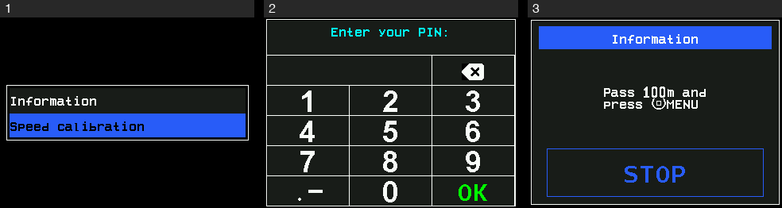
L'étalonnage depuis le menu contextuel : la rubrique, la demande de code PIN au niveau Operator, la fenêtre d'étalonnage. Poursuivez comme aux étapes 3 et 4 ci-dessus.
Le code PIN saisi ici lance cet étalonnage uniquement ; le niveau d'accès reste inchangé.
Pendant l'étalonnage, l'application du produit est verrouillée ; elle retrouve son état d'avant l'étalonnage à la fermeture de la fenêtre. Le boîtier attend une demi-seconde après « STOP » et vérifie encore une fois la liaison avec le capteur avant de prendre le résultat.
En cas d'échec
| Le boîtier affiche | Signification |
|---|---|
| « No speed sensor » (pas de capteur de vitesse) | Le profil ne contient aucun capteur de vitesse. L'étalonnage ne démarre pas. |
| « Connection lost with the sensor! Calibration canceled! » | Le capteur ne répond pas — au démarrage ou au moment de « STOP ». |
| « Sensor not controlled! Calibration canceled! » | Le capteur de vitesse est hors surveillance. |
| « FAILURE! The tractor did not move! » | Le capteur n'a donné aucune impulsion sur toute la distance. Contrôlez le capteur, son entrefer par rapport à la cible et son câble. |
| « Calibration canceled! » | La fenêtre a été fermée avec « BACK » ou par un toucher à l'extérieur. Rien n'a changé. |
| « Invalid PIN » | Le code PIN demandé au niveau « Operator » était erroné. L'étalonnage ne démarre pas. |
Si, après l'étalonnage, la vitesse du boîtier diffère encore de la vitesse réelle, contrôlez « Pulses » et « Diameter, cm » et étalonnez de nouveau.
Capteurs de graines et d'engrais
Les réglages des capteurs de graines et des capteurs d'engrais du Hectare Mini — fraction selon la culture, correction, limites d'erreur, longueur de recalcul, pourcentage de semis — et le moment où le boîtier commence à surveiller le semis.
Les capteurs de graines partagent un seul jeu de réglages : modifiez-le sur n'importe quel capteur de graines et il s'applique à tous. Les capteurs d'engrais partagent un second jeu. Seule « Product application » (application du produit) se règle ligne par ligne. Ouvrez le menu contextuel de n'importe quel capteur du groupe comme dans Réglages des capteurs.

| Paramètre | Niveau | Fonction | Plage · valeur par défaut |
|---|---|---|---|
| « Product application » | Agronomist | « Yes » (oui) : cette ligne sème et est surveillée. « No » (non) : la ligne est traitée comme coupée, comme une ligne dans un passage de jalonnage — la semence qui la traverse déclenche « Seeding to tramline ». Non affichée quand chaque ligne du groupe a son propre moteur. | « No » / « Yes » |
| « Sensitivity » | Agronomist | Sensibilité d'un capteur de graines d'une génération plus ancienne. Affichée uniquement quand un tel capteur est raccordé. | 1 … 120 · 80 |
| « Fraction » | Operator | Le filtre de comptage des capteurs, réglé selon la taille des graines — un filtre contre la poussière et les menues pailles. Modifiez-la avec la culture — tableau ci-dessous. | 1 … 100 · 10 |
| « Correction » | Operator | Adapte la sensibilité au support du capteur. Une valeur plus élevée abaisse la sensibilité et tient la poussière et les fines impuretés hors du comptage. Affichée uniquement pour la génération de capteur qui l'utilise. | 100 … 3300 · 300 |
| « Rate error,% » | Agronomist | Écart admis entre la dose mesurée et la consigne ; au-delà, « Under allowable rate » ou « Over allowable rate ». Uniquement en modes « Hybrid » et « Precise ». | 5 … 95 % · 50 % |
| « Doubles error,% » | Agronomist | Au-dessus de cette proportion de doubles : « High % of doubles ». « No » désactive l'alarme. Uniquement en mode « Precise ». | « No », 1 … 95 % · « No » |
| « Skips error,% » | Agronomist | Au-dessus de cette proportion de manques : « High % of skips ». « No » désactive l'alarme. Uniquement en mode « Precise ». | « No », 1 … 95 % · « No » |
| « Recalculation,m » | Operator | Le tronçon sur lequel les manques, les doubles et la qualité sont recueillis pour le schéma et le tableau de semis. Sans capteur de vitesse, c'est « Recalculation,sec », en secondes. « MENU » dessus laisse le boîtier le calculer — Laisser le boîtier calculer la longueur de recalcul. | 10 … 50 · 20 |
| « Percent of sowing,% » | Agronomist | La proportion de lignes de semis dont le boîtier a besoin avant de commencer à surveiller le semis — ci-dessous. Capteurs de graines uniquement ; non affichée sur les machines à moteurs de doseur. | 5 … 80 %, par pas de 5 · 20 % |
| « Toler.sowing to tramline,% » | Agronomist | Quelle quantité de semence peut encore traverser une ligne coupée pour un jalonnage, en pour cent de la dose de consigne, avant « Seeding to tramline ». | 0 … 50 % · 20 % |
| « Group start address » | Service (graines), Agronomist (engrais) | Le point de départ de la numérotation de ce groupe dans le réseau de capteurs. Laissez « AUTO » sauf indication contraire du service après-vente. | « AUTO », … |
En mode « Flow », une ligne n'est en alarme que si elle reste sous le seuil d'alarme ; il n'y a pas de limite supérieure. Les doses de consigne et les seuils d'alarme se règlent eux-mêmes sur l'écran d'accueil — Modifier la dose de consigne.
Fraction selon la culture
Guidez-vous sur la taille de la semence :
| Culture | « Fraction » |
|---|---|
| Colza | 1 – 5 |
| Blé | 5 – 10 |
| Maïs | 10 – 30 |
| Tournesol | 10 – 30 |
Sur les semoirs pneumatiques, réglez 1 quelle que soit la culture. Une fraction trop élevée fait disparaître les petites graines du comptage — le boîtier indique alors une dose trop faible.
Quand le boîtier surveille le semis
Le boîtier ne commence à surveiller le semis — et à déclencher les alarmes de semis — que lorsque la semence s'écoule dans la dose de consigne par au moins « Percent of sowing,% » des lignes de semis et, si « Seeding criteria » du capteur de vitesse est sur « Yes », que la machine avance (Capteur de vitesse d'avancement). Jusque-là, le schéma affiche « NOT UNDER CONTROL » — voir Alarmes de semis. Avec un capteur de position de travail dont « Alarms criteria » est sur « Yes », rien n'est surveillé en position de transport (Capteurs de trémie et de position de travail).
L'écran d'état
Affiche Status: avec l'état du capteur — « Working », « Clogged », « Light struck » et les autres : L'écran d'état d'un capteur.
Laisser le boîtier calculer la longueur de recalcul
Laissez le Hectare Mini déterminer le meilleur « Recalculation,m » pour les manques et les doubles à partir de la dose de consigne et des trous du disque — avec ou sans moteurs de doseur.
« Recalculation,m » (longueur de recalcul) des capteurs de graines est le tronçon sur lequel le boîtier recueille les manques, les doubles et la qualité avant de mettre à jour le schéma et le tableau de semis (Capteurs de graines et d'engrais). Un tronçon qui couvre des tours entiers du disque de semis donne les valeurs les plus stables. Le boîtier peut le calculer à partir de la dose de consigne en graines par mètre et du nombre de trous du disque.
Réglez d'abord la dose de consigne sur l'écran d'accueil — Modifier la dose de consigne. Le calcul utilise la consigne du mode « Precise ».
Ouvrez le menu contextuel de n'importe quel capteur de graines (Réglages des capteurs), sélectionnez « Recalculation,m » et appuyez sur « MENU ».
Avec des moteurs de doseur, le boîtier demande si la dose et le nombre de trous sont réglés — « Calculate path? » (calculer la longueur ?). Appuyez sur « PLUS » pour « Yes » (oui). Il prend le nombre de trous dans « Holes in disk » (trous du disque) du moteur (Le menu contextuel d'un moteur).
Sans moteurs, il vous rappelle d'abord que la dose de semis doit déjà être réglée ; fermez le message. Saisissez ensuite le nombre de trous du disque sur le clavier « Holes in disk » (de 1 à 500) et touchez « OK ».
Le boîtier calcule la longueur et la règle : le plus long tronçon de tours entiers du disque, dix au plus, qui tient dans 50 m, doublé tant qu'il est inférieur à 25 m.
Si même un seul tour du disque dépasse 50 m, le boîtier affiche « Calculated path to big. Maximum setuped. » (longueur calculée trop grande, maximum réglé) et règle 50 m.
« No » (non) à l'étape 3, ou « BACK » sur le clavier, laisse la longueur inchangée. Vous pouvez toujours régler « Recalculation,m » à la main avec « PLUS » / « MINUS », de 10 à 50 m.
Sans capteur de vitesse, la rubrique est « Recalculation,sec » et le tronçon est compté en secondes.
Capteur d'arbre de doseur
Les réglages d'un capteur d'arbre de doseur du Hectare Mini — la période pour « No rotation », le contrôle de la vitesse de l'arbre par rapport à la vitesse d'avancement et le contrôle du poids de produit — avec plages et valeurs par défaut.
Un capteur d'arbre de doseur compte les tours de l'arbre doseur. Au minimum, il vous indique que l'arbre s'est arrêté. Étalonné, il surveille aussi la vitesse de l'arbre par rapport à la vitesse d'avancement, ou compte le poids de produit appliqué. Chaque capteur de doseur a ses propres réglages — réglez-les tous.
Ouvrez son menu contextuel comme dans Réglages des capteurs.

| Paramètre | Niveau | Fonction | Plage · valeur par défaut |
|---|---|---|---|
| « Dispenser calibration(weight) » | Operator | Lance l'étalonnage au poids — Étalonner le doseur au poids. Affichée uniquement avec « Weight control » sur « Yes ». | — |
| « Period, s » | Operator | Le plus long délai entre deux impulsions du capteur. Si l'arbre ne donne aucune impulsion pendant plus longtemps alors que la machine sème ou avance, le boîtier déclenche « No rotation ». | 1 … 60 s · 10 s |
| « Rotation speed control » | Agronomist | « Yes » : la vitesse de l'arbre est surveillée par rapport à la vitesse d'avancement, dans la limite de « Maximum error, % ». « No » : on vérifie seulement que l'arbre tourne. Exige l'étalonnage de la rotation. | « No » / « Yes » · « No » |
| « Wheel, pulses » | Agronomist | Impulsions du capteur de vitesse qui correspondent à « Dispenser pulses » de ce capteur. Inscrit par l'étalonnage de la rotation. Affiché avec « Rotation speed control » sur « Yes ». | 1 … 65535 · 100 |
| « Dispenser pulses » | Agronomist | Impulsions de ce capteur qui correspondent à « Wheel, pulses ». Inscrit par l'étalonnage de la rotation. | 1 … 65535 · 100 |
| « Maximum error, % » | Agronomist | Écart admis de la vitesse de l'arbre ; au-delà, tant que la machine avance, « Low speed of rotation » ou « High speed of rotation ». | 1 … 50 % · 10 % |
| « Weight control » | Agronomist | « Yes » : le boîtier compte le poids de produit appliqué à l'hectare d'après les tours de cet arbre. Exige l'étalonnage au poids. | « No » / « Yes » · « No » |
| « Type of product » | Agronomist | Le produit que ce doseur applique : « Product 1 », « Product 2 » ou « Product 3 ». Affiché avec « Weight control » sur « Yes ». | · « Product 1 » |
| « Weight, gr » | Agronomist | Poids de produit qui correspond à « Weight, pulses » — ensemble, le débit du doseur par tour. Inscrit par l'étalonnage au poids. | 1 … 65535 · 10000 |
| « Weight, pulses » | Agronomist | Impulsions de ce capteur qui correspondent à « Weight, gr ». | 1 … 65535 · 100 |
Sans capteur de vitesse dans le profil, le boîtier ne peut que vérifier si l'arbre tourne : les rubriques de vitesse et de poids sont masquées.
Type de produit
Le boîtier suit jusqu'à trois produits au poids. Les doseurs qui appliquent le même produit reçoivent le même numéro :
| Machine | Réglage |
|---|---|
| Un capteur de doseur | « Product 1 ». |
| Deux doseurs, la même semence | « Product 1 » sur les deux. |
| Deux doseurs, semence et engrais sec | « Product 1 » sur le doseur de semence, « Product 2 » sur le doseur d'engrais. |
| Trois doseurs, deux pour la semence, un pour l'engrais | « Product 1 » sur les deux doseurs de semence, « Product 2 » sur le troisième. |
Un produit déjà dosé par un moteur électrique ne peut pas être choisi ici ; le boîtier passe au suivant qui est libre. Si aucun produit n'est libre, « Weight control » reste sur « No ».
L'écran d'état
Affiche la fréquence d'impulsions F= en Hz, à trois décimales — L'écran d'état d'un capteur.

Étalonner la rotation du doseur
Faites tourner la roue d'entraînement pour que le Hectare Mini apprenne combien d'impulsions du doseur correspondent à combien d'impulsions de la roue — nécessaire pour que « Rotation speed control » surveille la vitesse de l'arbre.
Avec « Rotation speed control » (contrôle de la vitesse de rotation) sur « Yes » (oui), un capteur de doseur vérifie si l'arbre tourne aussi vite que la vitesse d'avancement l'exige (Capteur d'arbre de doseur). Pour cela, le boîtier doit connaître le rapport entre les impulsions du capteur de vitesse et celles du capteur de doseur. L'étalonnage le mesure et inscrit « Wheel, pulses » (impulsions de la roue) et « Dispenser pulses » (impulsions du doseur).
Avant de commencer : le capteur de vitesse et les capteurs de doseur à étalonner doivent être sous surveillance et répondre. Il vous faut le niveau « Agronomist » (agronome) (Activer le niveau Agronomist). Soulevez la machine pour que la roue d'entraînement puisse tourner, ou préparez-vous à la déplacer.
« Settings » (réglages) → « Seeding machine parameters » (paramètres du semoir). Sélectionnez « Dispenser calibration » (étalonnage du doseur).
Choisissez avec « PLUS » / « MINUS » les doseurs à étalonner : « ALL » (tous), ou le numéro d'un seul doseur.
Appuyez sur « MENU ». L'écran « Calibration » s'ouvre avec une barre de progression à 0 %.
Faites tourner la roue d'entraînement. La barre se remplit à mesure que des impulsions arrivent de la roue et de chaque doseur en cours d'étalonnage.
À 100 % — au moins 100 impulsions de chacun — le boîtier émet un bip et affiche « Stop rotation! » (arrêtez la rotation !). Cessez de tourner.
Quand aucune impulsion n'est arrivée depuis deux secondes, le boîtier mémorise les valeurs et affiche « Done » (terminé) ; le menu « Seeding machine parameters » réapparaît.
 Écran affiché en allemand
Écran affiché en allemand
« BACK », à tout moment, interrompt avec « Calibration canceled! » (étalonnage annulé !) ; rien ne change.
| Le boîtier affiche | Signification |
|---|---|
| « Sensor not controlled! Calibration canceled! » | Le capteur de vitesse ou un capteur de doseur à étalonner est hors surveillance. Remettez-le sous surveillance (Mettre un capteur sous ou hors surveillance). |
| « Connection lost with the sensor! Calibration canceled! » | Le capteur de vitesse ou un capteur de doseur ne répond pas, au démarrage ou pendant l'étalonnage. |
Plus vous tournez avant « Stop rotation! », mieux c'est : les valeurs sont ramenées d'elles-mêmes à l'échelle si le comptage dépasse ce qu'elles peuvent contenir.
Étalonnez de nouveau après toute modification de l'entraînement entre la roue et le doseur — pignons, boîte de vitesses ou variateur.
Étalonner le doseur au poids
Faites tomber le doseur dans un récipient et pesez-le, pour que le Hectare Mini sache quelle quantité de produit un tour d'arbre applique — nécessaire pour « Weight control ».
Avec « Weight control » (régulation au poids) sur « Yes » (oui), le boîtier compte le produit appliqué d'après les tours de l'arbre du doseur (Capteur d'arbre de doseur). L'étalonnage mesure le poids par impulsion et inscrit « Weight, gr » (poids, g) et « Weight, pulses » (impulsions). Il s'effectue au niveau « Operator » (opérateur), à l'arrêt.
Il vous faut un récipient, une balance et un moyen de faire tourner l'arbre du doseur à la main.
Sur l'écran d'accueil, maintenez « MENU » enfoncé, sélectionnez le capteur de doseur et appuyez sur « MENU ». Le menu contextuel s'ouvre.
Sélectionnez « Dispenser calibration(weight) » (étalonnage du doseur au poids) et appuyez sur « MENU ». L'écran d'étalonnage affiche les doses de consigne des produits utilisés — celle du produit de ce doseur entre des flèches — et « PLUS - calibrate dispenser 1 » avec le numéro du doseur.
Appuyez sur « PLUS ». Le boîtier énumère ce qu'il faut faire avant l'étalonnage : peser le récipient vide et noter le poids ; remplir la trémie ; placer le récipient vide sous le doseur ; faire tourner le rotor jusqu'à ce que ses alvéoles soient remplies. Faites tout cela, puis appuyez sur « UP ».
L'écran suivant énumère l'étalonnage proprement dit et compte les « Impulses » (impulsions) du capteur : videz le récipient, remettez-le sous le doseur et faites tourner le rotor en remplissant le récipient — autant que possible, entre 2 kg et 60 kg.
Dès que plus de dix impulsions sont comptées, la ligne « MINUS - complete calibration » apparaît. Continuez à tourner jusqu'à ce que le récipient contienne le plus possible — au moins 100 impulsions et 5 kg donnent un bon résultat. Arrêtez ensuite.
Appuyez sur « MINUS ». Le clavier numérique s'ouvre : « Enter the difference of the filled and empty container in grams » (saisissez la différence entre le récipient plein et vide en grammes).
Pesez le récipient plein, soustrayez le poids à vide, saisissez la différence en grammes (de 2000 à 60000) et touchez « OK ». Le boîtier mémorise les valeurs et revient au premier écran.
Appuyez sur « BACK » pour quitter.
 Écran affiché en allemand
Écran affiché en allemand
« BACK » sur la liste d'avant l'étalonnage l'annule. « BACK » pendant l'étalonnage demande « Are you sure? » (êtes-vous sûr ?) — « PLUS » annule, « MINUS » continue. « BACK » sur le clavier numérique conserve les anciennes valeurs.
Quand l'étalonnage ne démarre pas ou s'arrête
« PLUS » à l'étape 3 ne fonctionne que si le capteur est sous surveillance, répond et n'a aucune alarme. Sinon, le premier écran en donne la raison — « Not controlled », « No connection » ou « FAILURE ». Si le capteur tombe en panne pendant l'étalonnage, le boîtier affiche « FAILURE » avec la raison ; « BACK » ramène au premier écran.
Capteur de turbine
Les réglages d'un capteur de vitesse de turbine du Hectare Mini — vitesse minimale et maximale de la turbine et impulsions par tour — et le moment où le boîtier déclenche ses alarmes.
Un capteur de turbine compte les tours de la turbine d'un semoir pneumatique ou monograine. L'écran d'accueil affiche la vitesse de la turbine en tr/min. Chaque capteur de turbine a ses propres réglages.
Ouvrez son menu contextuel comme dans Réglages des capteurs.

| Paramètre | Niveau | Fonction | Plage · valeur par défaut |
|---|---|---|---|
| « Minimum, rpm » | Operator | Vitesse minimale admise de la turbine. En dessous, le boîtier déclenche « Low speed of rotation » (vitesse de rotation trop faible) — mais seulement tant que la machine sème, ou avance en position de travail. | 500 … 9000 tr/min, par pas de 500 · 3000 |
| « Maximum, rpm » | Operator | Vitesse maximale admise de la turbine. Au-dessus, le boîtier déclenche « High speed of rotation » (vitesse de rotation trop élevée) — à tout moment, même à l'arrêt. | 500 … 9000 tr/min, par pas de 500 · 5000 |
| « Pulses » | Agronomist | Impulsions du capteur par tour de la turbine. | 1 … 60 · 2 |
Une vitesse de turbine qui semble correcte mais déclenche des alarmes indique en général un « Pulses » (impulsions) erroné : deux fois plus d'impulsions affichent une vitesse deux fois plus faible.
Ce que signifient semer et avancer pour le boîtier — Quand le boîtier surveille le semis. Sans capteur de vitesse, le minimum est surveillé tant que le boîtier voit un semis. Avec un capteur de position de travail dont « Alarms criteria » est sur « Yes », le minimum n'est pas surveillé en position de transport.
L'écran d'état
Affiche la fréquence d'impulsions F= en Hz — L'écran d'état d'un capteur. La vitesse de la turbine en tr/min est cette fréquence × 60 ÷ « Pulses ».

Les alarmes de la turbine et ce qu'il faut contrôler : Turbine ou arbre de doseur : alarmes de vitesse.
Capteur de pression
Les réglages d'un capteur de pression (dépression) du Hectare Mini — filtre, pression minimale et maximale — et le moment où le boîtier déclenche ses alarmes.
Un capteur de pression mesure la dépression (ou la surpression) du circuit d'air — par exemple à la sortie de la turbine ou dans les éléments de distribution d'un semoir monograine à dépression. Le boîtier travaille avec la valeur absolue : une valeur plus élevée signifie plus de dépression. Chaque capteur de pression a ses propres réglages.
Ouvrez son menu contextuel comme dans Réglages des capteurs.
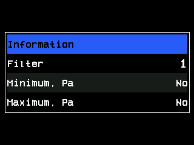
| Paramètre | Niveau | Fonction | Plage · valeur par défaut |
|---|---|---|---|
| « Filter » | Agronomist | Durée pendant laquelle le capteur mesure et moyenne la pression. Augmentez-la si la valeur fait de grands écarts. | 1 … 16 · 1 |
| « Minimum, Pa » | Operator | En dessous de cette pression — pas assez de dépression — le boîtier déclenche « Low pressure » (pression trop basse). « No » désactive le contrôle. | « No », 100 … 10000 Pa, par pas de 100 · « No » |
| « Maximum, Pa » | Operator | Au-dessus de cette pression — trop de dépression — le boîtier déclenche « High pressure » (pression trop élevée). « No » désactive le contrôle. | « No », 100 … 10000 Pa, par pas de 100 · « No » |
Les deux limites ne sont surveillées que tant que la machine sème, ou avance en position de travail — voir Quand le boîtier surveille le semis. Sans capteur de vitesse, elles sont surveillées tant que le boîtier voit un semis.
Les limites se règlent en pascals ; l'écran d'état affiche la pression en kilopascals : 1 kPa = 1000 Pa.
L'écran d'état
Affiche la pression mesurée P= en kPa, uniquement tant que le capteur répond — L'écran d'état d'un capteur.
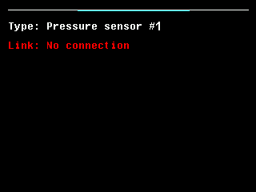
Les alarmes et ce qu'il faut contrôler : Alarmes de pression. Un capteur de pression neuf ou remplacé doit d'abord recevoir son adresse — Configurer un capteur de pression.
Capteurs de trémie et de position de travail
Le capteur de niveau de trémie du Hectare Mini, qui n'a aucun réglage, et le capteur de position de travail avec son signal de transport et son critère d'alarme.
Capteur de niveau de trémie
Le capteur de trémie signale quand le produit contenu dans la trémie descend sous la hauteur à laquelle le capteur est monté. Il n'a aucun réglage : son menu contextuel ne contient que « Information » (et « Reset to defaults » (valeurs par défaut) au niveau Service, qui n'a rien à réinitialiser).
L'écran d'état affiche Pin: avec le niveau sur son entrée : "1" — la trémie est vide à hauteur du capteur, et le boîtier déclenche « Hopper empty » (trémie vide) ; "0" — le produit recouvre le capteur. Voir Alarmes de trémie.
Capteur de position de travail
Le capteur de position de travail indique au boîtier si l'outil est abaissé en position de travail ou relevé en position de transport. Ouvrez son menu contextuel comme dans Réglages des capteurs.

| Paramètre | Niveau | Fonction | Valeurs · valeur par défaut |
|---|---|---|---|
| « Transporting position signal » | Agronomist | Le niveau sur l'entrée qui signifie position de transport : 0 ou 1. Réglez-le sur ce que donne le capteur avec l'outil relevé. | 0 / 1 · 0 |
| « Alarms criteria » | Agronomist | « Yes » (oui) : en position de transport, le boîtier ne surveille pas le semis, et le minimum de la turbine, les limites de pression et les arbres de doseur ne sont pas surveillés en déplacement — pas d'alarmes en fourrière. « No » (non) : la position est seulement affichée ; elle n'influe pas sur les alarmes. Masqué, et toujours sur « Yes », sur les machines à moteurs de doseur ou à contrôleur de pompe liquide. | « No » / « Yes » · « Yes » |
Sur une machine à moteurs de doseur, un capteur de position de travail qui ne répond pas compte comme position de transport — par sécurité, rien n'est dosé. Sans moteurs, un capteur qui ne répond pas ou qui est hors surveillance compte comme position de travail.
L'écran d'état affiche « Position: Working » ou « Position: Transporting », et Pin: avec le niveau sur l'entrée — comparez-le à la position réelle quand vous réglez « Transporting position signal ». La position change après un bref filtrage : un cahot ne la fait donc pas basculer.

Sur l'écran d'accueil, l'indicateur de l'outil clignote en jaune en position de transport — voir Indicateurs.
Capteurs du moteur d'entraînement de la turbine
Les cinq capteurs d'un moteur séparé entraînant la turbine du Hectare Mini — allumage, pression d'huile critique, charge de la batterie, niveau de carburant bas, filtre à air — leurs deux réglages et la façon dont le capteur d'allumage conditionne les autres.
Les semoirs dont la turbine est entraînée par son propre moteur peuvent surveiller ce moteur avec jusqu'à cinq capteurs tout ou rien sur un module d'entrée. Chacun est saisi séparément dans le profil. Les cinq ont les mêmes deux réglages et le même écran d'état ; ils diffèrent par la signification du signal.

| Paramètre | Niveau | Fonction | Plage · valeur par défaut |
|---|---|---|---|
| « Activation signal » | Agronomist | Le niveau sur l'entrée, 0 ou 1, qui signifie l'état indiqué dans le tableau ci-dessous. | 0 / 1 · 1 |
| « Signal delay, sec » | Agronomist | Durée pendant laquelle l'entrée doit conserver son nouveau niveau avant que le boîtier accepte le changement — contre les déclenchements intempestifs dus aux vibrations ou à un mauvais contact. | 1 … 30 s · 1 s ; « Low fuel » 15 s, « Air filter » 5 s |
| Capteur | Ce que signifie le signal d'activation | Alarme |
|---|---|---|
| « Ignition » | L'allumage du moteur d'entraînement de la turbine est mis. | aucune — voir ci-dessous |
| « Emergency oil pressure » | La pression d'huile du moteur est trop basse. | oui, uniquement allumage mis |
| « No battery charge » | La batterie n'est pas chargée par le moteur. | oui, uniquement allumage mis |
| « Low fuel » | Il reste peu de carburant dans le réservoir du moteur. | oui |
| « Air filter » | Le filtre à air du moteur est encrassé. | oui |
Les valeurs par défaut de « Signal delay, sec » pour « Low fuel » et « Air filter » sont appliquées quand le capteur est remis à ses valeurs par défaut.
Comment le capteur d'allumage conditionne les autres
Le capteur d'allumage ne déclenche aucune alarme de lui-même. Il maintient silencieux les capteurs de pression d'huile et de charge de la batterie tant que le moteur est arrêté — allumage coupé, une pression d'huile basse et l'absence de charge sont normales. Tant que le capteur d'allumage est sous surveillance, répond et signale l'allumage coupé, ces deux capteurs restent silencieux. Si le capteur d'allumage est hors surveillance ou ne répond pas, ils signalent quel que soit l'état de l'allumage.
C'est pourquoi « Emergency oil pressure » et « No battery charge » ne doivent figurer dans le profil qu'avec « Ignition », et en être retirés avec lui.
Sur l'écran d'accueil, l'indicateur d'allumage est jaune tant que l'allumage est coupé et gris tant qu'il est mis — voir Indicateurs.
L'écran d'état
Affiche Pin: avec le niveau actuel sur l'entrée, "0" ou "1" — comparez-le à l'état réel du moteur pour régler « Activation signal ». Voir L'écran d'état d'un capteur.

Les alarmes et ce qu'il faut contrôler : Alarmes du moteur.
Capteurs de traceur
Les deux réglages des capteurs de bras de traceur du Hectare Mini — quel bras surveille un capteur unique, et quel signal signifie que le bras est abaissé.
Les capteurs de traceur indiquent au boîtier si les bras de traceur sont relevés ou abaissés. L'écran d'accueil dessine les deux bras ; les deux relevés sont affichés en jaune — voir Indicateurs. Le nombre de capteurs qui surveillent les bras se règle sous « Markers » (traceurs) dans le profil : « One » (un) ou « Both » (les deux).
Ouvrez le menu contextuel d'un capteur de traceur comme dans Réglages des capteurs. Les deux réglages exigent le niveau « Agronomist » (agronome).
| Paramètre | Fonction | Valeurs · valeur par défaut |
|---|---|---|
| « Connected marker » | Le bras que surveille le capteur unique : « Left » (gauche) ou « Right » (droite). Affiché uniquement avec « Markers » sur « One ». | · « Left » |
| « Signal "down" » | Le niveau sur l'entrée, 0 ou 1, qui signifie que le bras est abaissé. Réglez-le sur ce que donne le capteur avec le bras baissé. | 0 / 1 · 0 |
L'écran d'état d'un capteur de traceur n'affiche que les lignes communes — type, liaison et alarmes (L'écran d'état d'un capteur). Un capteur de traceur ne déclenche que les alarmes que tout appareil peut déclencher : « Connection lost » et « Wrong device type! » — voir Appareil qui ne répond pas.
Configuration des appareils
À quoi sert la configuration des appareils sur le Hectare Mini et comment la préparer — un seul appareil sur le faisceau, le niveau Agronomist, le menu Sensors Configuration.
Chaque appareil du réseau de capteurs répond à sa propre adresse. L'adresse d'un capteur de graines est le numéro de son rang. Un capteur neuf ou remplacé doit recevoir la bonne adresse avant que le boîtier puisse le trouver. C'est la configuration des appareils, sous « Service » → « Sensors Configuration » (configuration des capteurs).
Préparation
Débranchez tous les capteurs de l'entrée de câble du faisceau de communication sur le boîtier — le connecteur à quatre broches.

L'entrée de câble du faisceau de communication : le connecteur à quatre broches, le faisceau et l'alimentation. Raccordez uniquement l'appareil qui doit recevoir une nouvelle adresse.
Allumez le boîtier. Une fois démarré, il signale « Connection lost » (connexion perdue) pour tous les appareils absents. Fermez les fenêtres avec « HOME ».
Passez au niveau « Agronomist » (agronome) — Activer le niveau Agronomist. Pour un concentrateur HUB-8 ou un actionneur de jalonnage, passez au niveau « Service ».
Appuyez sur « BACK » pour revenir au menu principal. Sélectionnez « Service » et appuyez sur « MENU ».
Sélectionnez « Sensors Configuration » et appuyez sur « MENU ». Le menu énumère les appareils configurables.

Le chemin vers la configuration des capteurs : Settings, le menu principal, le menu Service, le menu Sensors Configuration.
| Rubrique | Niveau | Comment |
|---|---|---|
| « Seed sensor » | Agronomist | Configurer un capteur de graines |
| « Pressure sensor » | Agronomist | Configurer un capteur de pression |
| « HUB8 » | Service | Configurer un concentrateur HUB-8 |
| « Tramline actuator » | Service | Réservé au technicien du service après-vente. |
Les règles de toute configuration
- Un seul appareil sur le faisceau. Avec « Sensor address » (adresse du capteur) sur « AUTO », le boîtier prend l'unique appareil qu'il trouve. Si plusieurs répondent, il refuse avec « More than one device in network! » (plusieurs appareils sur le réseau !) ; si aucun ne répond, il affiche « No connection » (pas de connexion).
- La nouvelle adresse doit être libre. Quand l'appareil a été choisi par son adresse actuelle au lieu de « AUTO », le boîtier vérifie aussi la nouvelle : si un autre appareil l'utilise déjà, il affiche « Address: … is used! » avec le numéro, et ne change rien.
- Tout autre refus s'affiche « Error # » avec un numéro. Débranchez et rebranchez l'appareil, puis réessayez.
- Contrôlez le résultat : débranchez l'appareil, rebranchez-le et revenez à l'écran d'accueil avec « BACK ». L'appareil doit apparaître à sa place, sans croix rouge.
Configurer un capteur de graines
Donnez à un capteur de graines neuf ou remplacé du Hectare Mini le numéro de son rang — comment tenir un capteur ouvert, les trois rubriques du menu et le contrôle final.
Pour un capteur de graines, la nouvelle adresse est le numéro de son rang — le numéro affiché sous sa colonne sur l'écran d'accueil. Préparez d'abord comme dans Configuration des appareils : uniquement ce capteur sur le faisceau, niveau « Agronomist » (agronome), menu « Sensors Configuration » (configuration des capteurs) ouvert.
L'adresse d'un capteur de graines ne peut être modifiée que tant que le capteur fonctionne normalement. Un capteur tubulaire est prêt dès qu'il est raccordé. Un capteur ouvert doit être posé sur son soc, ou tenu de façon qu'aucune lumière directe ne tombe dans le canal optique — l'intervalle entre les deux verres. En lumière directe, le capteur signale un défaut et n'accepte pas la nouvelle adresse.

Dans « Sensors Configuration », sélectionnez « Seed sensor » (capteur de graines) et appuyez sur « MENU ». Le menu comporte trois rubriques : « Sensor address » (adresse du capteur), « New address » (nouvelle adresse) et « Set » (valider).
Laissez « Sensor address » sur « AUTO ». Si elle affiche autre chose, remettez-la avec « PLUS » / « MINUS ».
Sélectionnez « New address » et réglez le numéro du rang avec « PLUS » / « MINUS ».
Sélectionnez « Set » et appuyez sur « MENU ». Le boîtier répond « Done » (terminé) et indique l'adresse à laquelle il a trouvé le capteur.
Débranchez le capteur et rebranchez-le. Revenez à l'écran d'accueil avec « BACK » (deux fois depuis le menu « Service »). Le capteur doit apparaître sous son rang ; les rangs non branchés affichent une croix rouge.
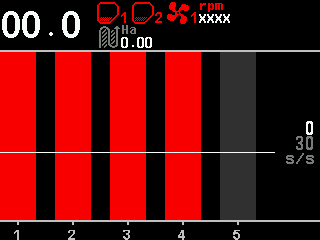
L'écran d'accueil après le changement d'adresse, avec un seul capteur sur le faisceau : les autres rangs et appareils barrés en rouge.
Répétez l'opération pour chaque capteur à adresser. Quand tous sont faits, revenez au niveau « Operator » (opérateur) — remettez « User » (utilisateur) dans « Settings » (réglages), ou éteignez puis rallumez le boîtier — et rebranchez tous les appareils.
Recherche d'un capteur
Maintenez « MENU » enfoncé sur « Sensor address » pour chercher un capteur de graines sur le réseau : la rubrique affiche alors l'adresse actuelle du capteur trouvé. Maintenez de nouveau « MENU » pour chercher le suivant. Avec une adresse trouvée à la place de « AUTO », « Set » change l'adresse de ce capteur précis, et le boîtier vérifie que la nouvelle adresse est libre. Si rien n'est trouvé, le boîtier affiche « No connection ».
La signification des messages d'erreur : Les règles de toute configuration.
Configurer un capteur de pression
Donnez son adresse à un capteur de pression neuf ou remplacé du Hectare Mini — les trois rubriques du menu et le contrôle final.
Chaque capteur de pression du profil répond à sa propre adresse ; le premier capteur de pression a la première adresse de la plage, le deuxième la suivante, et ainsi de suite. « New address » (nouvelle adresse) ne propose que les adresses de cette plage. Demandez au service après-vente laquelle il faut à votre capteur si vous avez un doute. Préparez d'abord comme dans Configuration des appareils : uniquement ce capteur sur le faisceau, niveau « Agronomist » (agronome), menu « Sensors Configuration » (configuration des capteurs) ouvert.
Dans « Sensors Configuration », sélectionnez « Pressure sensor » (capteur de pression) et appuyez sur « MENU ». Le menu comporte trois rubriques : « Sensor address » (adresse du capteur), « New address » et « Set » (valider).
Laissez « Sensor address » sur « AUTO ».
Sélectionnez « New address » et réglez l'adresse avec « PLUS » / « MINUS ». Elle s'ouvre sur la première adresse de la plage, celle du capteur de pression 1.
Sélectionnez « Set » et appuyez sur « MENU ». Le boîtier répond « Done » (terminé).
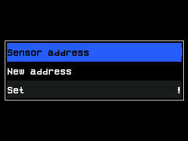
Le menu Pressure sensor (l'adresse est masquée dans ce manuel). Débranchez le capteur et rebranchez-le. Revenez à l'écran d'accueil avec « BACK ». Le capteur de pression doit se manifester de nouveau ; tant qu'un capteur de pression est absent, son indicateur affiche une croix rouge et XXXX.
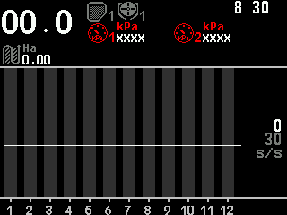
L'écran d'accueil tant que les capteurs de pression ne sont pas branchés.
Quand tous les appareils sont faits, revenez au niveau « Operator » (opérateur) — remettez « User » (utilisateur) dans « Settings » (réglages), ou éteignez puis rallumez le boîtier — et rebranchez tous les appareils.
Maintenez « MENU » enfoncé sur « Sensor address » pour chercher un capteur de pression sur le faisceau, comme décrit pour le capteur de graines — Recherche d'un capteur. Les messages d'erreur : Les règles de toute configuration.
Configurer un concentrateur HUB-8
Réglez les huit canaux d'un concentrateur HUB-8 sur le Hectare Mini — ce que chaque canal remplace, et les raccourcis qui remplissent tous les canaux d'un coup.
Un concentrateur HUB-8 rassemble jusqu'à huit capteurs et se substitue, sur le réseau de capteurs, à chacun d'eux : chaque canal apparaît au boîtier comme un module d'entrée ou comme un capteur de graines avec sa propre adresse. La configuration indique à chaque canal ce qu'il remplace et lequel il est dans son groupe. Elle exige le niveau « Service » (service après-vente). Préparez d'abord comme dans Configuration des appareils : uniquement le concentrateur sur le faisceau, menu « Sensors Configuration » (configuration des capteurs) ouvert.
Dans « Sensors Configuration », sélectionnez « HUB8 » et appuyez sur « MENU ». Le menu affiche « Device address » (adresse de l'appareil), puis pour chaque canal un couple « Channel 1 type » et « Channel 1 address », jusqu'au canal 8, et « Set » (valider) à la fin.
Laissez « Device address » sur « AUTO ».
Sélectionnez « Channel 1 type » et choisissez avec « PLUS » / « MINUS » ce que le canal remplace : « Input device » (module d'entrée) ou « Seed sensors » (capteurs de graines).
Sélectionnez « Channel 1 address » et réglez avec « PLUS » / « MINUS » quel appareil de son groupe est ce canal — son numéro d'ordre parmi les modules d'entrée ou parmi les capteurs de graines.
Faites de même pour les canaux 2 à 8.
Sélectionnez « Set » et appuyez sur « MENU ». Le boîtier répond « Done » (terminé).
Débranchez le concentrateur et rebranchez-le. Revenez à l'écran d'accueil avec « BACK ». Les appareils de ses canaux doivent se manifester de nouveau ; tant que le concentrateur est débranché, ils sont barrés en rouge.
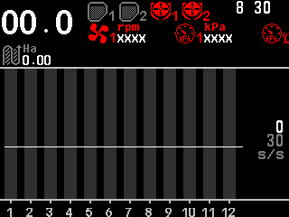
L'écran d'accueil tant que le concentrateur est débranché : doseurs, capteurs de turbine et de pression barrés.
Quand tous les appareils sont faits, revenez au niveau « Operator » (opérateur) — remettez « User » (utilisateur) dans « Settings » (réglages), ou éteignez puis rallumez le boîtier — et rebranchez tous les appareils.
Raccourcis
- Maintenez « MENU » enfoncé sur l'une des rubriques « Channel 1 type » à « Channel 8 type » : tous les canaux suivants reçoivent le même type, et leurs adresses sont numérotées à la suite à partir de ce canal.
- Maintenez « MENU » enfoncé sur l'une des rubriques « Channel 1 address » à « Channel 8 address » : les canaux suivants du même type sont numérotés à la suite à partir de celui-ci.
- Maintenez « MENU » enfoncé sur « Device address » : le boîtier cherche un concentrateur et lit ses réglages de canaux actuels dans le menu. Maintenez-le de nouveau pour le suivant.
Quand vous changez le type d'un canal, l'adresse de ce canal saute à la première adresse libre du nouveau type. Si deux canaux du même type se retrouvent avec la même adresse, « Set » refuse avec « Invalid profile! ». Les autres messages : Les règles de toute configuration.
Fonctionnement des alarmes
Quand le Hectare Mini déclenche une alarme, ce que montre la fenêtre d'alarme, comment la fermer, quels messages ne sont pas des fenêtres d'alarme et comment les rubriques d'alarme de ce manuel sont organisées.
Une alarme est une fenêtre qui s'ouvre par-dessus l'écran de travail, accompagnée d'un signal d'alarme. Elle vous indique qu'un appareil — un capteur, un moteur, un actionneur — ou le système dans son ensemble a détecté un défaut. Les rubriques d'alarme de cette section sont classées par appareil. Cherchez les mots que vous voyez à l'écran.
Quand le boîtier déclenche une alarme
Un défaut n'est pas signalé à l'instant où il apparaît. La condition doit persister sans interruption pendant la durée réglée dans « Alarm delay » (délai d'alarme) avant que la fenêtre s'ouvre.
| Réglage | Valeur |
|---|---|
| Où | « Settings » (réglages) → « Alarm delay », niveau « Operator » (opérateur) — Le menu Settings |
| Plage | 2 à 20 secondes, par pas de 1 seconde |
| Valeur par défaut | 3 secondes. Une valeur enregistrée hors de la plage est remise d'elle-même à 3. |
Un délai court réagit vite, mais aussi à un simple cahot ou à une brève interruption du flux de graines. Un délai long garde l'écran calme, mais un vrai défaut peut durer jusqu'à vingt secondes avant que vous en soyez informé.
Deux cas ne suivent pas le délai :
- Une connexion perdue est comptée en interrogations : « Connection lost » (connexion perdue) apparaît après trois interrogations de suite sans réponse.
- Juste après qu'un capteur a reçu de nouveaux réglages, ses alarmes sont retenues pendant un court moment, pour que la configuration d'un appareil ne provoque pas une rafale d'alarmes.
La fenêtre d'alarme
- « FAILURE! » (défaut !) — le titre rouge de chaque fenêtre d'alarme, quel que soit le défaut.
- « HOME - close message » (HOME - fermer le message) — l'indication pour la fermer.
- Le texte de l'alarme — le défaut. Cherchez-le sous ce texte dans les rubriques d'alarme.
- Le type d'appareil, ici la turbine. Le même texte peut venir d'appareils différents ; cette ligne vous dit lequel.
- Le numéro de l'appareil, ici la turbine 1. Quand plusieurs appareils d'un même type signalent le même défaut, ils partagent une fenêtre et sont listés ensemble, par exemple #3-5,8.
- « Close » (fermer) — ferme cette alarme.
Les alarmes du système dans son ensemble — par exemple sur la dose d'un produit — n'ont pas de ligne d'appareil.
Fermer une alarme
| Ce que vous faites | Ce qui se passe |
|---|---|
| Appuyez sur « HOME », ou touchez « Close » | Cette alarme se ferme. S'il en reste en attente, la suivante s'ouvre. Les autres touches ne font rien dans la fenêtre. |
| Maintenez « HOME » enfoncé | La fenêtre se ferme et le boîtier revient à l'écran d'accueil. |
Tant que la fenêtre est ouverte, le boîtier émet le signal d'alarme et allume son voyant d'alarme. Fermer une fenêtre ne répare pas le défaut, et la même alarme ne revient qu'après que le défaut a disparu puis est réapparu. Les alarmes actives d'un capteur restent listées sur son écran d'état — L'écran d'état d'un capteur.
Les alarmes sont masquées aux niveaux d'accès élevés
Aux niveaux « Agronomist » (agronome) et « Service » (service après-vente), aucune fenêtre d'alarme n'est affichée. Elles ne sont pas perdues : quand vous revenez au niveau « Operator », le boîtier écarte les alarmes qui ont disparu et affiche celles qui sont toujours vraies. Voir Niveaux d'accès et User is Agronomist.
Messages qui ne sont pas des fenêtres d'alarme
| Message | Où | Rubrique |
|---|---|---|
| « SLOWER », « FASTER » | à la place de la valeur de vitesse | Alarmes du capteur de vitesse |
| « NOT UNDER CONTROL » | sur le schéma de semis | Alarmes de semis |
Les rubriques d'alarme
Tout appareil · Capteur de vitesse · Semis · État du capteur de graines · Turbine et arbre de doseur · Trémie · Pression · Moteur · Dosage au poids · Niveau d'accès · Jalonnage · Moteurs de doseur
Chaque alarme a son propre titre, avec le texte exactement tel qu'il apparaît à l'écran. En dessous : ce que le boîtier a détecté, et ce qu'il faut contrôler, dans l'ordre où un mécanicien le contrôle — d'abord les contrôles rapides sur le boîtier, puis la machine, puis le capteur lui-même.
L'appareil ne répond pas : Connection lost, Wrong device type!
Les deux alarmes que tout capteur, moteur ou actionneur du Hectare Mini peut déclencher — pas de réponse de l'appareil, ou réponse d'un appareil d'un autre type — et ce qu'il faut contrôler.
Tout appareil du réseau de capteurs peut déclencher ces deux alarmes. La ligne d'appareil de la fenêtre d'alarme vous dit laquelle — voir Fonctionnement des alarmes.
« Connection lost » — connexion perdue
Ce que cela signifie. L'appareil n'a pas répondu à trois interrogations de suite. Le boîtier ne connaît plus son état : rien à son sujet n'est surveillé tant qu'il ne répond pas de nouveau. Son indicateur affiche une croix rouge ou XXXX ; son écran d'état affiche « No connection » (pas de connexion).
Ce qu'il faut contrôler, dans cet ordre :
- L'appareil a-t-il été ajouté récemment au profil ? Il n'a peut-être pas encore son adresse — Configuration des appareils.
- Les connecteurs de l'appareil et du faisceau : bien enfichés, broches propres et droites, pas d'eau à l'intérieur.
- Le câble de l'appareil et le faisceau : écrasés, usés par frottement ou arrachés, surtout aux charnières et aux points de repliement.
- L'alimentation de l'appareil. Elle doit correspondre aux valeurs de la fiche technique du système.
- Le profil : énumère-t-il un appareil que la machine n'a pas ? — Vérifier le profil et les connexions.
- L'appareil lui-même : échangez-le avec un appareil du même type qui fonctionne. Si le défaut le suit, l'appareil est défectueux.
Quand plusieurs appareils d'un même type sont perdus en même temps, regardez d'abord ce qu'ils ont en commun : un module d'entrée, un concentrateur HUB-8, une branche du faisceau.
« Wrong device type! » — mauvais type d'appareil
Ce que cela signifie. Quelque chose répond à l'adresse de cet appareil, mais pas le type d'appareil que le profil attend à cet endroit — par exemple un module d'entrée là où devrait se trouver un capteur de pression.
Ce qu'il faut contrôler, dans cet ordre :
- Le profil : le type de chaque appareil tel qu'il est installé — Le profil.
- Un appareil a-t-il été remplacé ou réadressé récemment ? Deux appareils partagent peut-être maintenant une adresse, ou l'un a l'adresse destinée à un autre. Adressez-le de nouveau — Configuration des appareils.
- Sur un concentrateur HUB-8 : le type de chaque canal — Configurer un concentrateur HUB-8.
Si vous devez continuer à travailler avec un appareil qui ne répond pas, vous pouvez le mettre hors surveillance jusqu'à sa réparation — Mettre un capteur sous ou hors surveillance. Il n'est alors plus surveillé du tout.
Vitesse d'avancement : SLOWER, FASTER et alarmes du capteur de vitesse
Que faire quand le Hectare Mini affiche SLOWER ou FASTER, quand un capteur de vitesse tombe en panne, ou quand les limites de vitesse ne peuvent pas être respectées.
Une vitesse d'avancement hors de ses limites ne déclenche aucune fenêtre d'alarme. L'indicateur de vitesse de l'écran d'accueil affiche « SLOWER » ou « FASTER » à la place de la valeur, tant que la vitesse est incorrecte — voir Indicateurs. Les limites sont « Min speed, km/h » (vitesse minimale) et « Max speed, km/h » (vitesse maximale) du capteur de vitesse (Capteur de vitesse d'avancement) ; elles ne sont surveillées que tant que le boîtier surveille le semis.
« SLOWER » — plus lentement
Ce que cela signifie. La machine avance plus vite que « Max speed, km/h » ne le permet.
Ce qu'il faut contrôler, dans cet ordre :
- Roulez plus lentement.
- La vitesse du boîtier correspond à la vitesse réelle — comparez avec le tracteur ou un GPS.
- Les réglages du capteur de vitesse : « Pulses » (impulsions), « Diameter, cm » (diamètre, cm), « Factor, % » (facteur), « Max speed, km/h ».
- Étalonnez le capteur de vitesse — Étalonner le capteur de vitesse.
- Le capteur de vitesse lui-même est en bon état.
« FASTER » — plus vite
Ce que cela signifie. La machine avance plus lentement que « Min speed, km/h » ne le permet.
Ce qu'il faut contrôler, dans cet ordre :
- Roulez plus vite.
- La vitesse du boîtier correspond à la vitesse réelle.
- Les réglages du capteur de vitesse, y compris « Min speed, km/h ».
- Étalonnez le capteur de vitesse.
- Le capteur de vitesse lui-même est en bon état.
Tant que la vitesse est simulée, l'indicateur affiche à la place « INCREASE IMITATION » (augmentez la simulation) ou « DECREASE IMITATION » (diminuez la simulation) : modifiez « Imitation, km/h ».
« Speed sensor #1 failed » / « Speed sensor #2 failed » — capteur de vitesse en panne
Ce que cela signifie. Uniquement avec deux capteurs de vitesse sur un module d'entrée (« Input device (2) » dans le profil) : la machine avance, mais ce capteur n'a donné aucune impulsion depuis trop longtemps.
Ce qu'il faut contrôler, dans cet ordre :
- L'entrefer entre le capteur et sa cible, et la cible elle-même.
- Le connecteur et le câble du capteur jusqu'au module d'entrée.
- Le capteur lui-même — échangez les deux capteurs ; si le défaut suit, le capteur est défectueux.
« Error in settings of Min/Max » — erreur dans les réglages Min/Max
Ce que cela signifie. Sur une machine dont les moteurs dosent au poids : une limite de vitesse réglée sur le capteur de vitesse ne peut pas être tenue avec les vitesses auxquelles les moteurs peuvent doser — le minimum se situe à la vitesse de dosage la plus élevée ou au-dessus, ou le maximum à la plus basse ou en dessous.
Ce qu'il faut contrôler, dans cet ordre :
- L'écran d'état du capteur de vitesse : il affiche les limites en vigueur et écrit en rouge celle qui est impossible — L'écran d'état d'un capteur.
- « Min speed, km/h » et « Max speed, km/h » du capteur de vitesse.
- Les doses de consigne des produits et les limites de vitesse des moteurs — Étalonner un moteur au poids.
Alarmes de semis : dose, manques, doubles, NOT UNDER CONTROL
Que faire quand une ligne de semence ou d'engrais du Hectare Mini sème trop peu ou trop, présente trop de manques ou de doubles, sème dans un jalonnage — ou quand le boîtier ne surveille rien du tout.
Ces alarmes viennent des capteurs de graines et des capteurs d'engrais. La ligne d'appareil vous indique de quelle ligne il s'agit — par exemple Seed sensor: #4. Les limites sont les réglages du groupe (Capteurs de graines et d'engrais). Contrôlez toujours la vitesse en premier : une vitesse d'avancement erronée fausse toutes les doses au mètre.
NOT UNDER CONTROL — semis non surveillé
Ce que cela signifie. Ce n'est pas une fenêtre d'alarme : le schéma de semis affiche « NOT UNDER CONTROL ». De la semence s'écoule, mais pas par assez de lignes pour remplir la condition de surveillance — moins de « Percent of sowing,% » (pourcentage de semis) des lignes de semis sèment dans la consigne. Tant que la condition n'est pas remplie, le boîtier ne surveille aucun défaut de semis.
Ce qu'il faut contrôler, dans cet ordre :
- La vitesse du boîtier correspond à la vitesse réelle.
- La dose de consigne — en mode « Flow » le seuil d'alarme — sur l'écran d'accueil : est-elle très supérieure à ce que la machine sème réellement ? — Modifier la dose de consigne.
- « Fraction » des capteurs de graines — une valeur trop élevée masque les petites graines.
- Assez de semence dans les trémies.
« Under allowable rate » — dose inférieure à la dose admise
Ce que cela signifie. Une ligne sème moins que ce qui est admis : en mode « Flow », sous le seuil d'alarme ; en modes « Hybrid » et « Precise », sous la consigne de plus de « Rate error,% » (écart de dose).
Ce qu'il faut contrôler, dans cet ordre :
- La vitesse du boîtier correspond à la vitesse réelle.
- Assez de semence dans les trémies.
- Le doseur fonctionne et est correctement réglé.
- « Fraction » des capteurs — il faut peut-être l'abaisser.
- Le capteur lui-même — son état sur l'écran d'état (L'écran d'état d'un capteur).
« Over allowable rate » — dose supérieure à la dose admise
Ce que cela signifie. Une ligne sème plus que la consigne augmentée de « Rate error,% ». Uniquement en modes « Hybrid » et « Precise ».
Ce qu'il faut contrôler, dans cet ordre :
- La vitesse du boîtier correspond à la vitesse réelle.
- Le doseur fonctionne et est correctement réglé.
- « Fraction » des capteurs — il faut peut-être l'augmenter.
- Le capteur lui-même — son état sur l'écran d'état.
« High % of doubles » — proportion de doubles trop élevée
Ce que cela signifie. La proportion de doubles sur le dernier tronçon dépasse « Doubles error,% » (écart de doubles). Uniquement en mode « Precise », et seulement si ce réglage n'est pas sur « No ».
Ce qu'il faut contrôler, dans cet ordre :
- La vitesse du boîtier correspond à la vitesse réelle.
- « Doubles error,% » des capteurs de graines.
- Le doseur : dépression, singulateur, disque adapté à la semence.
- « Fraction » — il faut peut-être l'augmenter.
- Le capteur lui-même — son état sur l'écran d'état.
« High % of skips » — proportion de manques trop élevée
Ce que cela signifie. La proportion de manques sur le dernier tronçon dépasse « Skips error,% » (écart de manques). Uniquement en mode « Precise », et seulement si ce réglage n'est pas sur « No ».
Ce qu'il faut contrôler, dans cet ordre :
- La vitesse du boîtier correspond à la vitesse réelle.
- « Skips error,% » des capteurs de graines.
- Assez de semence dans les trémies.
- Le doseur : dépression, singulateur, disque adapté à la semence.
- « Fraction » — il faut peut-être l'abaisser.
- Le capteur lui-même — son état sur l'écran d'état.
« Seeding to tramline » — semis dans le jalonnage
Ce que cela signifie. Une ligne qui devrait être coupée — dans un passage de jalonnage, ou avec « Product application » (application du produit) sur « No » — laisse passer plus de semence que « Toler.sowing to tramline,% » de la dose de consigne.
Ce qu'il faut contrôler, dans cet ordre :
- L'actionneur de jalonnage de cette ligne coupe bien — voir Alarmes de jalonnage.
- Le réglage « Relation of sensors to actuators » — les bonnes lignes sont affectées à l'actionneur (Paramètres du semoir).
- « Toler.sowing to tramline,% ».
« Old firmware! Wrong S&D calc! » — ancien micrologiciel
Ce que cela signifie. Un capteur d'engrais fonctionnant en mode « Precise » a un micrologiciel trop ancien pour compter correctement les manques et les doubles.
Ce qu'il faut contrôler : faites fonctionner les capteurs d'engrais en mode « Flow » ou « Hybrid », ou faites remplacer ou mettre à jour le capteur par le service après-vente.
État du capteur de graines : Clogged, Light struck, Broken
Que faire quand un capteur de graines ou d'engrais du Hectare Mini signale que son canal optique est obstrué, qu'il est aveuglé par le soleil ou qu'il est en panne.
Ces trois alarmes sont signalées par le capteur de graines ou d'engrais lui-même à propos de son propre état. La ligne d'appareil désigne le capteur. Son écran d'état affiche le même état sur la ligne Status: — L'écran d'état d'un capteur.
« Clogged » — obstrué
Ce que cela signifie. Quelque chose obstrue le canal optique du capteur. Le soc ou le tube de descente est peut-être bouché.
Ce qu'il faut contrôler, dans cet ordre :
- Le soc et le tube de descente : terre, caillou, semence humide.
- Le canal optique du capteur : éliminez l'obstruction, nettoyez la poussière.
- L'alimentation du capteur — elle doit correspondre aux valeurs de la fiche technique du système.
« Light struck » — aveuglé par la lumière
Ce que cela signifie. Trop de lumière tombe dans le canal optique ; le capteur ne peut pas compter. Le boîtier ne le signale que tant que la machine avance (ou toujours, sans capteur de vitesse) — un outil relevé en fourrière ne le provoque pas.
Ce qu'il faut contrôler : tenez la lumière directe du soleil hors du canal optique — l'assise d'un capteur ouvert sur son soc, les capots, la position du capteur.
« Broken » — défectueux
Ce que cela signifie. Le capteur a détecté un défaut en lui-même. Sur son écran d'état, il affiche « Faulty ». Le capteur doit peut-être être remplacé.
Ce qu'il faut contrôler, dans cet ordre :
- L'alimentation du capteur — elle doit correspondre aux valeurs de la fiche technique du système.
- Débranchez et rebranchez le capteur.
- S'il reste sur « Faulty », remplacez le capteur. Un capteur de graines neuf a besoin du numéro de son rang — Configurer un capteur de graines.
Turbine ou arbre de doseur : alarmes de vitesse
Que faire quand la turbine ou un arbre de doseur du Hectare Mini tourne trop lentement, trop vite ou pas du tout.
Le capteur de turbine et le capteur d'arbre de doseur utilisent les deux mêmes messages. La ligne d'appareil de la fenêtre d'alarme vous dit lequel — Fan (turbine) ou Dispenser (doseur), avec son numéro. Fonctionnement de la fenêtre : Fonctionnement des alarmes.
« Low speed of rotation » — vitesse de rotation trop faible
Ce que cela signifie. La turbine tourne plus lentement que « Minimum, rpm » (minimum, tr/min), ou l'arbre du doseur plus lentement que la vitesse d'avancement ne l'exige, de plus de « Maximum error, % » (erreur maximale).
Ce qu'il faut contrôler, dans cet ordre :
- Doseur uniquement : la vitesse du boîtier correspond à la vitesse réelle.
- L'organe surveillé — la turbine et son entraînement, ou le doseur et son entraînement.
- Les réglages du capteur : pour la turbine « Minimum, rpm » et « Pulses » (impulsions) — Capteur de turbine ; pour le doseur « Maximum error, % » — Capteur d'arbre de doseur.
- Le capteur lui-même est en bon état.
- Doseur uniquement : étalonnez de nouveau la rotation — Étalonner la rotation du doseur.
« High speed of rotation » — vitesse de rotation trop élevée
Ce que cela signifie. La turbine tourne plus vite que « Maximum, rpm » (maximum, tr/min) — cela est surveillé aussi machine à l'arrêt — ou l'arbre du doseur plus vite que la vitesse d'avancement ne l'exige, de plus de « Maximum error, % ».
Ce qu'il faut contrôler, dans cet ordre :
- Doseur uniquement : la vitesse du boîtier correspond à la vitesse réelle.
- L'organe surveillé — la turbine et son entraînement, ou le doseur et son entraînement.
- Les réglages du capteur : pour la turbine « Maximum, rpm » et « Pulses » ; pour le doseur « Maximum error, % ».
- Le capteur lui-même est en bon état.
- Doseur uniquement : étalonnez de nouveau la rotation.
La vitesse de l'arbre du doseur n'est surveillée qu'avec « Rotation speed control » (contrôle de la vitesse de rotation) sur « Yes », et seulement tant que la machine avance.
« No rotation » — pas de rotation
Ce que cela signifie. L'arbre du doseur ne donne aucune impulsion pendant plus longtemps que « Period, s » (période, s) alors que la machine sème ou avance. Seul le capteur d'arbre de doseur déclenche cette alarme.
Ce qu'il faut contrôler, dans cet ordre :
- Le doseur et son entraînement — chaîne, embrayage, goupille de sécurité.
- « Period, s » du capteur : assez long pour la vitesse d'arbre la plus lente au travail — Capteur d'arbre de doseur.
- L'entrefer entre le capteur et sa cible, et le capteur lui-même.
Trémie vide : Hopper empty
Que faire quand le Hectare Mini signale qu'une trémie est vide.
Le capteur de niveau de trémie est placé à une hauteur fixe dans la trémie. La ligne d'appareil désigne la trémie : Hopper: #2. Sur l'écran d'accueil, l'indicateur de trémie passe au rouge — voir Indicateurs.
« Hopper empty » — trémie vide
Ce que cela signifie. Le produit contenu dans la trémie est descendu sous la hauteur du capteur.
Ce qu'il faut contrôler, dans cet ordre :
- Remplissez la trémie.
- Si le produit est au-dessus du capteur et que l'alarme persiste : le produit fait voûte ou est collé sur le capteur — nettoyez le capteur.
- L'écran d'état du capteur : Pin: affiche "1" tant que le boîtier voit la trémie vide — Capteurs de trémie et de position de travail.
- Le capteur lui-même est en bon état.
Le capteur de trémie n'a aucun réglage ; une alarme qui ne correspond pas à l'état de la trémie relève du capteur, de sa hauteur de montage ou de son câble.
Alarmes de pression : High pressure, Low pressure
Que faire quand la dépression mesurée par un capteur de pression du Hectare Mini est trop élevée ou trop faible.
Le boîtier compare la valeur absolue de la pression mesurée à « Minimum, Pa » et « Maximum, Pa » du capteur (Capteur de pression), tant que la machine sème ou avance en position de travail. La ligne d'appareil désigne le capteur : Pressure sensor: #1.
« High pressure » — pression trop élevée
Ce que cela signifie. La pression mesurée dépasse « Maximum, Pa » — trop de dépression.
Ce qu'il faut contrôler, dans cet ordre :
- Diminuez la vitesse de la turbine.
- Le volet d'admission d'air, si la machine en a un.
- Le tuyau vers le capteur de pression : raccordé au bon endroit, non plié, non obstrué.
- « Maximum, Pa » du capteur.
« Low pressure » — pression trop basse
Ce que cela signifie. La pression mesurée est inférieure à « Minimum, Pa » — pas assez de dépression.
Ce qu'il faut contrôler, dans cet ordre :
- Augmentez la vitesse de la turbine.
- Le volet d'admission d'air, si la machine en a un.
- Les gaines d'air et les éléments de distribution : fuites — flexibles, joints, couvercles.
- Le tuyau vers le capteur de pression : raccordé au bon endroit, non plié, non obstrué.
- « Minimum, Pa » du capteur.
La pression mesurée figure sur l'écran d'état du capteur, P= en kPa — comparez-la aux limites, qui se règlent en Pa (1 kPa = 1000 Pa).
Alarmes du moteur : pression d'huile, charge de la batterie, carburant, filtre à air
Que faire quand un capteur du moteur séparé entraînant la turbine du Hectare Mini signale une pression d'huile basse, l'absence de charge de la batterie, un niveau de carburant bas ou un filtre à air encrassé.
Les capteurs d'un moteur séparé entraînant la turbine déclenchent tous le même texte d'alarme, « FAILURE » (défaut). La ligne d'appareil désigne le capteur — c'est cette ligne que vous cherchez ici. Les réglages de ces capteurs : Capteurs du moteur d'entraînement de la turbine.
Le capteur d'allumage ne déclenche aucune alarme. Il maintient silencieuses les alarmes de pression d'huile et de charge de la batterie tant que l'allumage est coupé.
« Emergency oil pressure » — pression d'huile critique
Ce que cela signifie. Le capteur de pression d'huile trop basse du moteur s'est déclenché — allumage mis, s'il y a un capteur d'allumage.
Ce qu'il faut contrôler, dans cet ordre :
- Arrêtez le moteur et contrôlez le niveau et la pression d'huile.
- Le capteur de pression d'huile est en bon état.
- « Activation signal » (signal d'activation) du capteur de pression d'huile : comparez Pin: sur son écran d'état avec l'état réel.
- Si l'alarme survient moteur arrêté : le capteur d'allumage est-il dans le profil et sous surveillance ? Est-il en bon état ?
« No battery charge » — pas de charge de la batterie
Ce que cela signifie. La batterie n'est pas chargée par le moteur — allumage mis, s'il y a un capteur d'allumage.
Ce qu'il faut contrôler, dans cet ordre :
- L'alternateur, sa courroie et le circuit de charge du moteur.
- Le capteur de charge de la batterie est en bon état.
- « Activation signal » du capteur de charge de la batterie.
- Si l'alarme survient moteur arrêté : le capteur d'allumage est-il dans le profil et sous surveillance ? Est-il en bon état ?
« Low fuel » — niveau de carburant bas
Ce que cela signifie. Il reste peu de carburant dans le réservoir du moteur.
Ce qu'il faut contrôler, dans cet ordre :
- Faites le plein.
- Le capteur de niveau de carburant est en bon état.
- « Activation signal » du capteur de niveau de carburant.
- « Signal delay, sec » (délai du signal, s) — le carburant qui ballotte dans le réservoir sur sol accidenté peut le déclencher ; la valeur par défaut est de 15 secondes.
« Air filter » — filtre à air
Ce que cela signifie. Le filtre à air du moteur est encrassé.
Ce qu'il faut contrôler, dans cet ordre :
- Nettoyez ou remplacez le filtre à air.
- Le capteur de filtre à air est en bon état.
- « Activation signal » du capteur de filtre à air.
- « Signal delay, sec » — la valeur par défaut est de 5 secondes.
Dosage au poids : dose de produit trop faible ou trop élevée
Que faire quand le Hectare Mini signale qu'un produit dosé au poids est appliqué sous ou au-dessus de sa dose de consigne, ou ne peut pas être dosé du tout.
Ce sont des alarmes du système dans son ensemble : la fenêtre n'a pas de ligne d'appareil. Elles n'apparaissent que si un produit est suivi au poids — par un capteur d'arbre de doseur avec « Weight control » (régulation au poids) sur « Yes » (oui), ou par des moteurs de doseur. Le nombre dans le texte est le numéro du produit, « Product 1 » à « Product 3 ».
« Rate of Product 1 is to low! » / « Rate of Product 1 is to high! » — dose du produit 1 trop faible / trop élevée
Ce que cela signifie. Le poids de produit appliqué à l'hectare s'écarte de sa dose de consigne de plus de « Product rate error,% » (écart de dose de produit) du menu « Settings » (réglages) (Le menu Settings).
Ce qu'il faut contrôler, dans cet ordre :
- La dose de consigne du produit — Modifier la dose de consigne.
- Le doseur : rouleau, réglage du variateur ou de la boîte de vitesses, écoulement du produit depuis la trémie.
- Les réglages du capteur d'arbre de doseur qui applique ce produit, et son « Type of product » (type de produit) — Capteur d'arbre de doseur.
- Le capteur d'arbre de doseur est en bon état.
- Étalonnez de nouveau au poids — Étalonner le doseur au poids, ou pour les moteurs Étalonner un moteur au poids. Un rouleau neuf, un autre réglage de l'entraînement ou une autre semence exigent toujours un nouvel étalonnage.
« Product dosage is impossible! Check product rate and calibration! » — dosage du produit impossible
Ce que cela signifie. Sur une machine à moteurs de doseur : avec les doses de consigne et les étalonnages actuels, il n'existe aucune vitesse d'avancement à laquelle les moteurs pourraient appliquer tous les produits. Le boîtier l'affiche de nouveau à chaque démarrage du semis.
Ce qu'il faut contrôler, dans cet ordre :
- Les doses de consigne des produits.
- L'étalonnage des moteurs et leurs limites de vitesse d'arbre — Étalonner un moteur au poids.
User is Agronomist! Alarms will not be shown!
La seule fenêtre que le Hectare Mini affiche encore au niveau Agronomist ou Service quand le semis démarre — sa signification et comment récupérer les alarmes.
Aux niveaux « Agronomist » (agronome) et « Service » (service après-vente), le boîtier n'affiche aucune fenêtre d'alarme (Niveaux d'accès). Celle-ci fait exception.
« User is Agronomist! Alarms will not be shown! » — l'utilisateur est agronome, les alarmes ne seront pas affichées
Ce que cela signifie. Le boîtier voit un semis alors que le niveau d'accès est « Agronomist » ou « Service ». Il vous prévient une fois qu'aucun défaut de semis ne sera signalé. Le message n'apparaît qu'une seule fois tant que le niveau élevé reste réglé ; il revient après que vous êtes redescendu au niveau « Operator » (opérateur) puis remonté.
Ce qu'il faut faire : remettez le niveau sur « Operator » avant de travailler — dans « Settings » (réglages), réglez « User » (utilisateur) sur « Operator » et appuyez sur « MENU », ou éteignez puis rallumez le boîtier. Les alarmes encore vraies s'affichent alors l'une après l'autre.
Alarmes de jalonnage : Illegal state, Stall
Que faire quand un actionneur de jalonnage du Hectare Mini signale les deux positions de fin de course à la fois, n'atteint pas sa position, ou quand de la semence passe dans une ligne coupée pour un jalonnage.
Un actionneur de jalonnage coupe les lignes de semis du jalonnage sur les passages que demande le rythme (Passage de jalonnage suivant). La ligne d'appareil le désigne : Tramline actuator: #1.
« Illegal state » — état illicite
Ce que cela signifie. L'actionneur signale les deux positions de fin de course en même temps — rentré et sorti. Ses contacteurs de fin de course se contredisent.
Ce qu'il faut contrôler, dans cet ordre :
- Les contacteurs de fin de course de l'actionneur et leur câblage.
- De la terre ou de la glace qui retient un contacteur.
- L'actionneur lui-même.
« Stall » — blocage
Ce que cela signifie. On a commandé un mouvement à l'actionneur, mais il n'a pas atteint la position demandée.
Ce qu'il faut contrôler, dans cet ordre :
- Le volet : bloqué par de la semence, de la terre ou une pièce tordue.
- L'alimentation de l'actionneur.
- Le contacteur de fin de course de la position demandée.
- L'actionneur lui-même.
Sur son écran d'état, l'actionneur affiche Status: « Pulled in » (rentré), « Pulled out » (sorti), « Working » (en mouvement) pendant qu'il bouge, ou « Unknown » (inconnu) — L'écran d'état d'un capteur.
« Seeding to tramline » — semis dans le jalonnage
Déclenchée par le capteur de graines d'une ligne qui devrait être coupée. Voir Alarmes de semis.
Alarmes des moteurs de doseur
Ce que signifient les alarmes d'un moteur électrique de doseur du Hectare Mini — tension, température, court-circuit, courant, blocage — et ce qu'il faut contrôler.
Le contrôleur de chaque moteur électrique de doseur signale ses défauts au boîtier. La ligne d'appareil désigne le moteur : Electric motor: #5. Le code du dernier défaut figure sur l'écran d'état du moteur, ligne Last fault: — communiquez-le au service après-vente. Le moteur et ses réglages : Le menu contextuel d'un moteur.
| Texte de l'alarme | Ce que cela signifie | Ce qu'il faut contrôler, dans cet ordre |
|---|---|---|
| « Under voltage » (sous-tension) | La tension d'alimentation du contrôleur du moteur — pour le moteur ou pour son électronique — est trop basse. | Batterie et alternateur du tracteur ; le câble d'alimentation et ses connecteurs ; le fusible. |
| « Over voltage » (surtension) | La tension d'alimentation est trop élevée. | La tension de charge du tracteur ; l'alimentation du système par rapport à la fiche technique. |
| « Over temperature » (température excessive) | Le contrôleur ou son dissipateur est trop chaud. | Laissez-le refroidir ; un doseur qui tourne dur ; de la saleté qui recouvre le moteur. |
| « Short circuit » (court-circuit) | Un court-circuit sur les fils du moteur — entre eux, à la masse ou à l'alimentation. | Le câble et le connecteur du moteur ; le moteur. |
| « Over current » (surintensité) | Le moteur appelle trop de courant. | Un doseur qui tourne dur ou est bloqué ; le moteur. |
| « Motor jammed! » (moteur bloqué !) | On commande au moteur de tourner, mais il ne tourne pas. Avec « Rollback when jammed » (recul en cas de blocage) sur « Yes », il recule d'abord brièvement pour se libérer. | Un corps étranger dans le doseur ; l'entraînement entre le moteur et le doseur ; le moteur. |
| « Device in bootloader! » (appareil en mode de mise à jour !) | Le contrôleur du moteur est en mode de mise à jour et ne fonctionne pas. | Éteignez puis rallumez le boîtier et le système. Si le défaut persiste, appelez le service après-vente. |
| « FAILURE » | Tout autre défaut du contrôleur. | Notez Last fault: sur l'écran d'état et appelez le service après-vente. |
Tous les moteurs partagent une autre alarme avec chaque appareil : « Connection lost » — L'appareil ne répond pas.
Le menu contextuel d'un moteur de doseur
Chaque élément du menu contextuel d'un moteur électrique de doseur — ce qu'il règle, à partir de quel niveau d'accès il est visible, et ce que « Reset to defaults » réinitialise réellement.
Sur l'écran Motors, maintenez « MENU », sélectionnez le moteur avec « UP » / « DOWN » et appuyez sur « MENU ». Ce que contient le menu dépend du niveau d'accès et du mode de semis du moteur.

| Élément | Niveau | Ce qu'il fait |
|---|---|---|
| « Information » (informations) | Agronomist | Ouvre l'écran d'état du moteur. |
| « Electric motors » (moteurs électriques) | Service | Ouvre l'écran de service des moteurs — voir L'écran Motors. |
| « Dispenser calibration(weight) » (étalonnage du doseur au poids) | Operator | Lance l'étalonnage au poids. Affiché seulement machine à l'arrêt. |
| « Type of product » (type de produit) | Agronomist | Lequel des trois produits le moteur applique — Affecter un produit à un moteur. |
| « Weight, gr » (poids, g) et « Rotations » (rotations) | Agronomist | Ensemble, ils décrivent le doseur : ce poids de produit pour ce nombre de tours d'arbre. Réglés par l'étalonnage ; ne les modifiez à la main que pour recopier les valeurs d'un doseur identique. |
| « Minimum, rpm » (minimum, tr/min), « Maximum, rpm » (maximum, tr/min) | Agronomist | Les vitesses d'arbre admises. Le panneau en déduit les vitesses d'avancement auxquelles la dose peut être appliquée. Le minimum ne peut pas atteindre le maximum : le panneau déplace l'autre valeur d'un pas. |
| « Button input » (entrée bouton), « Activation signal » (signal d'activation) | Agronomist | Un bouton-poussoir sur le contrôleur de moteur pour faire tourner le moteur depuis la machine pendant l'étalonnage. Avec « Button input » sur « No » (non), l'étalonnage se fait depuis le panneau seul. |
| « Holes in disk » (trous dans le disque) | Operator | Le nombre d'alvéoles du disque à graines ; le panneau en déduit la vitesse du disque. Seulement en mode « Precise » (précis). |
| « Numerator » (numérateur), « Denominator » (dénominateur) | Agronomist | Le rapport de transmission entre le moteur et l'arbre entraîné, tel que le constructeur de la machine l'a réglé. Ne le modifiez qu'après une transformation de l'entraînement. |
| « Rotation direction » (sens de rotation) | Agronomist | « Forward » (avant) ou « Backward » (arrière), selon le montage du moteur. |
| « Rollback when jammed » (retour arrière en cas de blocage) | Agronomist | « Yes » (oui) : lorsque le doseur se bloque, le moteur recule brièvement pour le libérer. « No » : le moteur est seulement arrêté. |
| « Reset to defaults » (réinitialiser aux valeurs par défaut) | Service | Réinitialise les réglages propres de ce moteur — voir l'avertissement ci-dessous. |
Les autres éléments du niveau Service sont des outils du technicien de service et ne sont pas décrits ici.
Éléments de poids seulement en « Flow » et « Hybrid ». « Dispenser calibration(weight) », « Type of product », « Weight, gr », « Rotations », les limites de vitesse et les éléments de bouton n'apparaissent que si le moteur fonctionne en « Flow » (débit) ou « Hybrid » (hybride). En « Precise », la dose vient des capteurs de graines, il n'y a rien à étalonner au poids, et « Holes in disk » apparaît à la place.
La mise du moteur sous ou hors surveillance ne se trouve pas dans ce menu : ce sont « PLUS » et « MINUS » sur l'écran Motors qui la commandent.
Boutons sur chaque écran
Ce que fait chacun des sept boutons en appui court et en appui long — et où l'écran réagit au toucher — sur l'écran d'accueil, dans les menus, dans les fenêtres et sur chaque écran de travail.
Les sept boutons sont des zones tactiles du cadre : un appui court est un toucher bref ; un appui long est un toucher maintenu environ une demi-seconde. Maintenir un bouton ne le répète jamais — un toucher, un pas. Où se trouvent les boutons : Le panneau et ses sept boutons.
Écran d'accueil — surveillance
| Bouton | Ce qu'il fait |
|---|---|
| « HOME » | Tableau de semis. |
| « HOME », long | Verrouille ou déverrouille l'application du produit (machines à moteurs de doseur ou à pompe liquide). Un bip court. |
| « MENU » | Menu principal. |
| « MENU », long | Mode de réglage des capteurs. |
| « PLUS » / « MINUS » | Le premier appui sélectionne un champ de dose (il clignote) ; les suivants augmentent ou diminuent sa valeur réglée. |
| « UP » / « DOWN » | Champ de dose précédent / suivant. Rien s'il n'y en a qu'un. |
| « BACK » | Libère un champ de dose clignotant ; sinon ouvre le menu du passage de jalonnage, si le jalonnage est activé. |
| « BACK », long | Pendant le semis : règle le seuil d'alarme d'après le débit appliqué — Régler le seuil d'alarme. |
Écran d'accueil — mode de réglage des capteurs
| Bouton | Ce qu'il fait |
|---|---|
| « UP » / « DOWN » | Appareil précédent / suivant. |
| « PLUS » / « MINUS » | Met le capteur sélectionné sous / hors surveillance, après une question la première fois. |
| « MENU » | Menu contextuel de l'appareil sélectionné. |
| « BACK » | Quitte le mode. |
| « HOME » | Quitte le mode et passe au tableau de semis. |
Tableau de semis
| Bouton | Ce qu'il fait |
|---|---|
| « PLUS » / « MINUS » | Tableau suivant / précédent. |
| « UP » / « DOWN » | Fait défiler d'une ligne. |
| « MENU » | Demande « Zero readings? » (remettre les relevés à zéro ?). |
| « HOME » / « BACK » | Statistiques / écran d'accueil. |
Statistiques
| Bouton | Toucher | Ce qu'il fait |
|---|---|---|
| « UP » / « DOWN » | Balayage vers le bas / le haut | Fait défiler d'une ligne. |
| « PLUS » / « MINUS » | Balayage à deux doigts vers la droite / la gauche | Parcelle suivante / précédente. |
| « MENU » | Toucher à deux doigts | Menu de l'écran. |
| « HOME » | Long balayage vers la gauche | Motors, ou écran de régulation de dose. |
| « BACK » | — | Écran d'accueil. |
Motors
| Bouton | Ce qu'il fait |
|---|---|
| « MENU », long | Active la sélection. |
| « UP » / « DOWN » | Moteur ou actionneur précédent / suivant. |
| « PLUS » / « MINUS » | Sous / hors surveillance, après une question la première fois. |
| « MENU » | Menu contextuel du moteur sélectionné. |
| « BACK » | Quitte la sélection ; puis l'écran d'accueil. |
| « HOME » | Écran de régulation de dose. |
Régulation de dose
| Bouton | Ce qu'il fait |
|---|---|
| « HOME » | Écran d'accueil. |
| « HOME », long | Verrouille ou déverrouille l'application du produit. |
| « PLUS » / « MINUS » | État de modification de dose ; puis modifient la consigne sélectionnée. |
| « MENU », long | État de réglage des capteurs. |
| « UP » / « DOWN » | Élément précédent / suivant dans l'un ou l'autre état. |
| « MENU » | Menu contextuel de l'élément sélectionné ; sur un produit, ses moteurs. |
| « BACK » | Quitte l'état. Ne quitte pas l'écran. |
| Toucher maintenu | Sur le symbole des réglages : menu principal. Sur un produit : ses moteurs. Sur l'engrais liquide : la pompe. |
Menus
| Bouton ou toucher | Ce qu'il fait |
|---|---|
| « UP » / « DOWN » | Déplacent la sélection ; en fin de liste, elle saute à l'autre extrémité. |
| « PLUS » / « MINUS » | Modifient la valeur de l'élément sélectionné d'un pas. |
| « MENU » | Entre dans l'élément ; sur une valeur entre -[ et ]+, ouvre le pavé numérique. |
| « BACK » | Un niveau en arrière. |
| Toucher un élément | Le sélectionne ; un second toucher y entre. |
Pavé numérique
Touchez les chiffres. « OK » ou « MENU » valide ; « BACK » annule. Touchez et maintenez le retour arrière pour effacer le nombre. Rien d'autre ne fonctionne. Voir Le pavé numérique.
Fenêtres
| Fenêtre | Boutons |
|---|---|
| Question | Les deux boutons nommés dans la fenêtre, ou touchez « Yes » (oui) / « No » (non). « BACK » ou un toucher en dehors annule. |
| Information | Se ferme d'elle-même, par un toucher ou par un bouton. |
| Alarme | « HOME » ou toucher « Close » (fermer) — ferme. « HOME », long — ferme et revient à l'écran d'accueil. Les autres boutons ne font rien. |
| Remplir les disques | Seulement « BACK » : interrompt, ou ferme une fois l'opération terminée. |
Termes employés dans ce manuel
Les mots du manuel du Hectare Mini en un seul endroit — de la parcelle active et du seuil d'alarme à la singularisation, à l'écartement et au rythme de jalonnage.
| Terme | Signification |
|---|---|
| Parcelle active | La parcelle dans laquelle le panneau écrit actuellement ses statistiques, marquée (A). Commencer une nouvelle parcelle |
| Seuil d'alarme | En mode « Flow » (débit) : le débit en graines par seconde sous lequel un rang est considéré comme défaillant. Tracé sous forme de ligne de contrôle. Régler le seuil d'alarme |
| Passage | Une passe du semoir à travers la parcelle. Régler le rythme de jalonnage |
| Menu contextuel | Le menu d'un seul appareil, ouvert en mode de réglage des capteurs. Bases de l'interface |
| Ligne de contrôle | La ligne blanche en travers d'un diagramme : le seuil d'alarme ou la dose de consigne tracés. |
| Doubles | Deux graines là où une était prévue, en part. |
| Flow, Hybrid, Precise | Les trois modes de contrôle d'un diagramme. Flow : graines par seconde par rapport à un seuil d'alarme. Hybrid : graines par mètre par rapport à une dose de consigne. Precise : graines par mètre avec manques, doubles et qualité. Le diagramme des sections |
| Sous surveillance / hors surveillance | Le fait que le panneau surveille ou non un capteur. Un capteur hors surveillance ne déclenche aucune alarme. Mettre un capteur sous ou hors surveillance |
| Verrouillage (pause du travail) | Application du produit arrêtée à la main : moteurs et pompe à l'arrêt. Verrouiller l'application à la main |
| Population | Graines par hectare, affichées en milliers (ks/Ha). Déduite de la dose, de la largeur de travail et du nombre de rangs. |
| Produit | Une matière appliquée au poids, en kg/ha. Jusqu'à trois : « Product 1 » à « Product 3 ». |
| Profil | La liste des appareils de la machine, réglée à la mise en service. Le profil |
| Qualité (singularisation) | La part des graines déposées une à une, comme prévu — ce qui reste après les doubles et les manques. |
| Champ de dose | Les chiffres à côté d'un diagramme : mesuré en haut, valeur réglée en dessous. |
| Intervalle de recalcul | Le tronçon de trajet (ou le temps, sans capteur de vitesse) sur lequel les manques, les doubles, la qualité et la dose sont recueillis avant d'être affichés de nouveau. Réglé par « Recalculation,m ». Un intervalle court réagit vite mais fluctue ; un intervalle long est plus stable. |
| Rythme | Le nombre de passages et l'appareil qui coupe à quel passage. |
| Section, rang | Un rang de semences ou d'engrais avec son propre capteur : une colonne du diagramme. |
| Mode de réglage des capteurs | Le mode dans lequel un appareil est sélectionné pour être commuté ou réglé. Maintenez « MENU ». |
| Manques | Un vide là où une graine était prévue, en part. Not sown (non semé) compte les manques sur les tronçons où rien n'a été semé du tout. |
| Écartement | La distance entre les graines — la dose par mètre retournée. |
| Dose de consigne | Ce que vous réglez : graines par mètre (« Hybrid », « Precise »), kg/ha (produits), L/ha (liquide). La consigne de population en découle et n'est pas faite pour être modifiée pendant le travail dans la parcelle. |
| Jalonnage | La voie laissée non semée pour le pulvérisateur. Passage de jalonnage suivant |
| Surface inconnue | Surface parcourue pendant qu'un capteur n'avait pas de liaison ou était hors surveillance. |